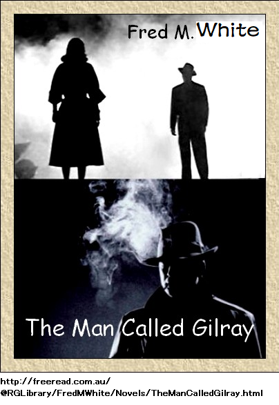

主な登場人物 備考
ジョン・ギルレイ 殺人の被害者
フィリップ・テンプル 編集長、フィル
スパロウ警部補 警視庁
ジェーン・マーチン 現・家政婦
イズミ 前・家政婦
エルシ・シルバデール 旧姓ゴードン
ジョン・ゴードン卿 エルシの父
シルバデール公爵 エルシの夫
ハリンゲイ公爵 東部の名門貴族
サディ・マクレガ 公爵夫人
ギルバート 邸宅の家主
エドワード・スカフ 夜盗
イズミ・スカフ イズミ・レガード
ネグレティ たばこ商人
サットン 編集長
マスグレイブ 医者
ポール・テイラ 小説上の人物
パオロ・ブラチ 夜盗、元音楽家
レガード伯爵 レガード嬢の父
第一章 現場
『殺人事件の情報提供者へ』
『報奨金五百ポンド』
『前記報奨金を逮捕につながった直接間接の情報提供者に進呈する。容疑者は水夫 もしくは人夫 と思われる。容疑は今月六日水曜日に発生したジョン・ギルレイ氏謀殺 。容疑者の正確な人相は現在不明。情報は近くの警察署に提供されたし』
『報奨金五百ポンド』
『前記報奨金を逮捕につながった直接間接の情報提供者に進呈する。容疑者は
この三週間、前記の看板がロンドン中に見られた。要は凶悪犯罪、時々英国を隅から隅まで騒がせる。
第一報を打ったのが日刊サザンヘラルド大衆紙、発行所はロンドン、週刊サザンヘラルドも出している。後者は週刊誌で、英国南部一帯でよく売れている。その時たまたま、日刊紙の編集次長と、週刊誌の編集長を兼ねていたのが、フィリップ・テンプルだった。
同氏は頭の切れる記者でもあり、名声を保つ機会を決して見逃さなかった。また警察ともいい関係をしっかり築いており、その筋で同社は大成功を収めていた。
だから、殺人事件発生の真夜中二時頃、緊急電話をスパロウ警部補から受け取った。すぐ署へ来い。
「何か特ダネですか」
「そのようだ。とにかく異常だ。大騒動になるな。本官はまだポンダ通りへ行ってないが、ちょうど事件を聞いたばかりで、
「殺人ですか」
「ああ、とにかく惨事だ、男一人が死んだ。確実に殺人だ。被害者のジョン・ギルレイ氏はポンダ通りの邸宅に住んでおる。まだ詳細は聞いとらんが、巡査があの近辺を時々巡回しておる。ギルレイ氏をよく見かけたそうだ。それによると、五〇歳がらみの上品な男だ。ちょっと謎めいており、ほとんど人目を引かなかったらしい。金持ちみたいだな、さもなきゃポンダ通りにゃ住めない」
テンプルがうなずいた。ポンダ通りはよく知っており、あの近辺に友人が二、三人いる。閑静な通りで、素敵な家が多く、二軒一棟式、複数の家に作業場がある。
ポンダ通りには多くの有名な画家、記者、音楽家が住んでいる。家々の正面と裏側に庭があり、とても魅力的で立派な不動産である。
「おっしゃることは分ります。被害者は自由人と言うことでしょう」
「ああ、とにかく、そう巡査が言った。ギルレイ氏にはほとんど友人がなく、独立独歩の人だったようだ。毎日外食して、劇場や音楽会を楽しみ、いつも車でご帰宅だ。身なりもびしっとしており、資産家だったようだ」
またしてもテンプルがうなずいた。第一級の騒ぎになる。そう記者本能が告げた。犠牲者は働かなくても暮らせる裕福で孤独な男、おそらく気安い近隣の人々も不審だったろう。たぶん立派な経歴を誰も知らない。裕福そうだし若作りだから、五〇歳でも決して色恋に無縁じゃなさそうだ。テンプルがあおられて、ただちに食いついた。
「ご一緒してよろしいですか」
「だから電話した。善は急げだ。車で行こう」
これ以上いいことはない。望むらくは今朝の新聞に特ダネを打つことだ。まだ充分時間がある。
二人はやがてポンダ通りへ着いた。騒動の気配はなく、妙な犯罪が起こった二番目の邸宅だけ、とにかく明かりがついていた。電灯がともり、全館明るい。
ホールに警官が一人、厳しい顔つきで帽子を膝に抱えて座っていた。
辺りを見回すと、とても芸術的で優美な内装だ。明らかに金をけちっていないし、きっと被害者は旅行好きな人物と知り合いだ。
壁には武器の戦利品がかかり、どう見ても南アフリカ産だし、床には虎皮が一枚丸ごと敷いてあり、少なくともウエストエンドで売られている品じゃない。いくつかの絵画も値打ちものと見た。大量の花々も最高級品だ。おそらくギルレイ氏は金に困っていない。
警官の向かい側に突っ立ち、真っ青な顔をして震えている女は帽子・制服姿だ。間違いなく召使い階級で、普通の家政婦が夜の外出から帰ったようだ。目に一杯涙を浮かべ、悲しみと恐怖がありあり。
巡査が言った。
「警部補、ご苦労様です。こちらがギルレイ氏の家政婦、自称ジェーン・マーチンさんです」
「それではマーチンさん、全部話して下さい。気を静めて下さい。あなたは事件に無関係でしょう。知っていることを話して、本官の質問に答えて下さい。その格好から、いま帰ったばかりですね。外出には遅すぎませんか」
「夜中の一時半過ぎに帰って参りました。旦那様の許可をもらって外出しました。実家がチータムにあり、兄の誕生会に帰省しました。夜中の一時半まで戻らないことになっておりました」
「鍵を持っていますか」
「いいえ、その必要はございません。ギルレイ氏は早くても夜中の二時前にご
女が激しく
「ああ怖い。電灯が全部ついており、書斎には旦那様以外に誰もいませんでした。暖炉前に倒れておられ、皆さんがご覧になったとおりです。胸に致命傷があり、死んでいるとすぐ分りました。警察へ行き、警官を呼びました。以上でございます。とても奇妙なので、私にはどうすればいいか分りません」
「ほかの召使いは寝ていましたか」
「ほかに召使いはおりせん。私以外には誰もいません。ギルレイ氏は人嫌いだとおっしゃっていました。屋敷を整理整頓に保ち、用事のベルに出るように言われました。正午まで起きてこられず、食事はほとんど外食でしたので、勤めはとても楽でした。少し退屈でしたが、これ以上いい所は望めません」
「ところで、ギルレイ氏のことを教えてくれませんか。友人は多かったですか。そうなら何人か名前を教えて下さい」
「私がここへ来てから誰も呼ばれていません。名刺入れもございません」
「じゃあ、あなたがここへ勤めている間、誰も呼ばれていないと？」
「一人もです。勤めて一週間ですから」
何かひっかかるものがあり、警部補の顔が曇った。予想外だ。
「そうなると、前の召使いを探さにゃなりませんな。ぜひ名前を教えて下さい」
「あのう、前任者はここで死にました。私が臨時代行で来たら、翌日から住み込みで働くように言われました」
またしても警部補は面食らった。全く予想していなかった。謎がますます深まり、解決が難しくなり始めた。テンプルは慎重に拝聴しながら、事件の劇的な展開を追った。
警部補が尋ねた。
「マーチンさん、以上ですか」
「以上でございます。ほかに何も考えられません。
と嘆願する様子はあたかも事件に手を下して告発されたかのようだった。
「その必要はありませんな。現場を封鎖しますから誰もここにおられませんよ、マーチンさん。名前と住所を教えてもらえば、死因審問のときに呼び出します。少しはかたづけていいですが、ここは手を付けないで下さい。後で二、三質問があるかも知れませんが、そのとき聞きます。テンプル君、参考になったかな」
テンプルが首を左右に振った。警部補同様に混乱していた。
「本官もとまどった。こんな話は聞いたことがない。なんか面白い小説を思い出すな。召使いは事実をしっかり覚えており、些細なことも忘れておらん。正直かも知れん。一方、つまらないことを何気なく見落として、話す価値が無いと思っているかも知れんが、いつもそれが重要な手がかりになる。この種の事件では
「このギルレイという男は明らかに素性を隠そうとしていますね。本名だと思いますか」
「絶対に違うな。本名であれば追跡に苦労しないんだがなあ。こんな奇妙な生き方をする奴は本名を出さない。ギルレイという名前は何か臭うぞ。聞いてどうなるわけじゃないが。本心を言えば、今は君と同じくらい分らん。完全に霧の中だ。でもくじけちゃおらん。きっと突き止めてやる。退去前に、ジェーン・マーチンに二、三聞きたい」
「僕が呼んできますよ」
第二章 書斎
この事件は大衆の関心をがっちり
ここに誰も知らない被害者がいる。友人も訪問者もなく、不自然なのはギルレイが偽名だって事だ。親類も出来るだけ会いたくないようだ。おそらく誰もがよく知っているのだろうが、同氏は絶対に人を寄せ付けない。
芸術家を自称するのは簡単だが、地方だろうがどこだろうが有名であれば、確実にテンプルのような鋭い記者なら、小耳に挟んでいる。
明白な証拠から言えることはギルレイ氏が苦労人でもなく、生活に苦しむ野蛮な山師でもない。明らかに紳士であり、事実、邸宅の内装がそれを物語っている。趣味はすべて最高級であり、決して派手でも低俗でもない。実際圧倒された。
そして金欠じゃない。ちっとも難しくないだろうが、高級宅地に住み、
事件にますます魅入られたのは、死人の性癖が何一つとして分らないからだ。あたかも殺人犯の足跡を消すように仕組まれているかのよう。
今のところ少なくとも、どこの誰とも全く同定できない。ジェーン・マーチンの証言では在職中誰も訪ねて来なかった。きわめて明白なのはマーチンが真実を話していること。実際、マーチンは警部補同様にほとんど知らない。
そして一人、情報提供できそうな人物は墓の下だ。現在、警部補の見るところ、まず探すべきはジェーン・マーチンの前任者、ポンダ通りに勤めていた女の親戚だ。
親戚なら恐らく何か知っているだろうし、実家に手紙を書いているだろうし、必ずや手紙にはあの階級特有の噂話や
警部補が尋ねた。
「前任者の名前は何でしたか。あなたなら知っているはずですよ」
「いえ、存じません。姓は全く知りませんが、ただ洗礼名はイズミです。でも会ったことはありません。一回か二回、旦那様がイズミとおっしゃったことがありますが、召使いにしては変な名前だなと思いました。そういえば一つか二つ尋ねたことがあり、今思い出しましたが、イズミは旦那様と一緒にウィーンから来て、旦那様が十八ヶ月前にこの家を借りられたそうです。イズミが英国人か外国人かは全然知りません」
警部補が首を重々しく左右に振った。希望の道が閉ざされた。調べれば調べるほど難しい。とにかく、これ以上ジェーン・マーチンを尋問しても何も得られない。
「マーチンさん、帰宅してよろしい。よければ部下に送らせますが、住所を書いて下さい、あしたの死因審問に出なければなりませんよ。これ以上引き留めません。怖がらなくていいですが、喋りすぎないように。真実を話している限り、何も心配はありません」
召使いが退出すると、警部補とテンプルは邸内を慎重に調べ始めた。だが二階には事件の手がかりは何もなかった。寝室、化粧室、召使い室以外、ほかの部屋に調度品はない。だから明らかに友人がおらず、訪問者の目を意識していない。
細心の注意を払って、書類や手紙や文書類を調べたが、何も分らなかった。金庫もないし、金品もないが、ただ宝石は相当あって、きちんと段ボール箱に納めてあった。
死人の衣装はすべて地方で購入したようだ。警部補は失望した。何か原因や兆候が分れば、有益な情報になったかもしれない。
「テンプル君、大ごとになりそうだ。いずれ、この男はこんなことになるのではと予想していたんじゃないか。完全に自分を消して、素性を隠していたようだ。状況から断言するが、とにかく
書斎は邸宅で一番大きな部屋だった。明らかに故人はここで大部分を過ごしている。仕事をしていた形跡はない。あるのは大量の上質紙、それに数基の画架に真っ白な画布がかかっているが、絵の具はしばらく使われていないようだ。
古風な長椅子に最近の小説が積んである。一冊の本が開いたまま、大きな肘掛け椅子横の絨毯に落ちていた。肘掛けには銀製箱に煙草が半分ほど充填されており、三分の一になった吸い殻が一本、灰皿に落ちていた。あたかも誰かが肘掛け椅子に座り、予想外の訪問客が侵入したので、小説と一緒に煙草を落としたかのようだ。
暖炉の近くに、夜会服の死体が横たわっていた。胸部にぽっかり穴が開いており、既に流血は止まっている。
テンプルの見るところ、この男はこざっぱりして見栄えがよく、洗練されており、明らかに外観に気をつけている。穏やかな青白い顔には化粧跡はなく、よく手入れされた髪は染めてない。
「警部補はどう思われますか」
「今までのところ何も分らん。本官が手がけた中で、最大の難事件のようだ。そもそも動機が分らん。二階は何も荒らされていないし、見たところ何も取られていない。さあ、君も自分で見ろ。死体の指にはまっている美しい指輪を見よ。指が細いから、指輪は簡単に抜けるだろ。君もよく分るだろうが、はっきり見えるダイヤモンドが盗られていない。誰が殺したにしろ、犯人は泥棒じゃないな。もっと厄介なことを言わねばならぬが、犠牲者は上流社会とつきあい、連中と知り合いだって事だ。可能性として考えられることは、いままで順調だったが、友人と喧嘩をしてしまった。それはさておき、ギルレイ氏は細心の注意を払って素性を隠している。テンプル君、全く好かんな。最近こんな事件が多すぎる。たしかこの二年間で十数件の殺人事件がお蔵入りになった。たとえ裁判にかけても、有罪判決は勝ち取れなかっただろう」
テンプルが同情してうなずいた。テンプル以上に事情を知るものはいない。実際、事件記事は何回も書いてきた。見たところ、いまやることはない。もし朝刊にこの異常事件記事を書きたかったら、ぐずぐずできない。
部屋をざっと見渡した。大窓の下の小さな台に書類が山積みになっており、その中にタイプ打ちの紙が一枚あった。
「もしかして役に立ちますか」
「そうは思わんな。言うなれば
と警部補が文書をチラ見して言った。
「誰がタイプ打ちしたのですか」
「その答えは向こうの隅にある。言う必要も無いがコドリントン・タイプライターは見たことがあるだろう。あれは明らかにこの紳士のものだ。自分で確かめれば分るけど、この独特のタイプ文字はコドリントンだ。でも一枚しかないから何も分らないだろう。テンプル君、今晩は収穫無しだ。あした死因審問だが当然長引くだろうし、ひとたび大衆が本件に食いつけば、可能性として目撃者が見つかり、貴重な情報が得られる。君やってくれるよな」
「大船に乗った気持ちでいて下さい。朝刊に大見出しで記事を二本書きます。第一面に出しますから、今晩ロンドン中の噂にならなかったら、逆にびっくりですよ。それでは警部補、行かなくては。じゃあ時間勝負で印刷前に仕上げます。お休みなさい。大変お世話になりました。大いに当てにして下さい」
警部補がちょっと別れを嫌がった。
「ちょっと待ってくれ。好機を逃したくない、些細なことかもしれんが、このタイプ打ち原稿にもう一度目を通してくれ。専門家だろ」
「ええ、助言できますよ。僕は毎年三千枚、四千枚の原稿小説を読んでいますから。ほとんど没ですが。もしこの小説が完結していたら――」
「完結か否かは関係ないだろ。文体に可能性があるだろ、つまり以前、君の会社に誰かが投稿したとか」
「これはこれは、考えも及びませんでした。作家により文体が違いますから、見ればすぐ分ります。もう一度見てみましょう。もちろん余り期待しないで下さい、原稿は一枚だし、こんな半端な紙ですから」
「ああ、期待しない。実際何も期待しない。ただ、まぐれ当たりを期待しとる。本官は負けたくないし、好機を逃したくないだけだ。君の手に小説の切れ端があるけど、可能性として邸内に物語の残部があるかも知れない。あったら、週刊誌に乗せたいだろ。大騒動になるぞ」
テンプルが警部補を率直にほめ
「これは貴重な意見を戴きました。考えもせず馬鹿者でした。
テンプルが熱心に読むと、再び困惑顔になった。最終文の続きを知っているようだった。二つの名前が記憶の中の琴線に触れた。どうしても思い出せず、そういえばどこかに続きがあり、確実に存在する。しばらく間を置いて尋ねた。
「これを持って行ってよろしいですか」
警部補は少しも執着せず言った。
「ああ、いいよ。ただ慎重に扱えよ。なぜ欲しいのだ」
テンプルの言葉が蚊のようなささやきに変わった。
「事務所に完結編があるのを今思い出したのです」
第三章 ゆすり
出版関係者なら答えるのが難しいこと、それはどうやってこの道に入ったかであり、フィリップ・テンプルもその例に漏れない。自然に紛れ込んだというか、生まれつきの野次馬だし、特別訓練が必要なかったからだ。
ケンブリッジ在学中に小説を二、三本書き、随筆をあちこちに書き散らし、知らず知らずのうちに、自由契約の身になっていた。
大学卒業後二年以内で、日刊サザンヘラルド紙のいい地位に就いた。仕事はきつくなく、報酬は良く、金も貯まった。ずっと快適だし何もいらないし、仕事が好きだし、誇りもあった。
二年前、事態が一変した。その時は一瞬すべてを失った気がした。確実にエルシ・ゴードンを失い、エルシはその後シルバデール夫人になり、これがフィリップ・テンプルの悲劇となり、人生の大きな不幸となった。
若い二人はずっとお互い心から好き合っており、事実上結婚の段取りが整ったとき、エルシの父ジョン・ゴードン卿が破産して、シルバデール公爵がしゃしゃり出て、その場を納めた。
人々が口をはばかることなく言うことに、シルバデール公爵が破産を仕組んだ。確かにシルバデール公爵は金以外売り込むものがない。五〇歳過ぎであるが、人生の関心は言わぬが花だ。素晴らしい才能を
だが一目惚れしたのが、あのエルシ・ゴードンだ。輝くような若い美貌、えもいわれぬかわいさ、容姿は、万人を惨めな
そしてシルバデール公爵は狙った獲物を確実に捕らえる。金と知恵があり、手段があくどいので、エルシを手に入れることなど、なんの支障も無かった。
これは何も目新しい話ではないし、前にも起こったし、男が女を求める限り、これからも続くだろうし、同公爵に良心はない。知人が断言するに、生まれつきだそうだ。だからエルシを妻にするが早いか、無視し始めた。
シルバデール公爵の不満は妻が自分に構ってくれないこと、無口の壁を立てていること、一回も自分に微笑んでくれないこと等だ。妻が犠牲を払った分、同公爵は何も得られなかった。だが妻は他人には笑顔と思いやりを与えた。その時だけ美しい顔や、くつろいだ顔や、目の輝きを見せた。
そう、エルシは報いを受けてしまった。受けた報いは何千倍もひどいもので、やり方は同公爵のお手ものものだ。浅薄な文明の皮を
時々夫が数週間消えることがあり、令夫人には行き先に全く心当たりがなかった。言い訳を
今夜はシルバデール令夫人が正装して、お出まし。パークレーンのハリンゲイ公爵夫人の園遊会があり、招待されていた。心底行きたくなかったし、逃げて田舎で休みたかった。
だが夫のシルバデールは認めなかった。かわいい妻を買って金を払ったのだし、多少自慢だった。自慢の種は、ほかの男が妻に見ほれること、美貌を欲しがること、高価なものを簡単に入手した羨望など。これも苦痛だった。
シルバデール令夫人は気乗りせず混雑した部屋を進み、庭の方へ行った。部屋は
爵位を買って楽しんでいるようだし、そうすることで、次第に夫を愛し始めた。夫はといえば、真っ当に生き、真っ正直なたくましい男、大いにこのかわいい妻が気に入った。
シルバデール令夫人が作り笑いで公爵夫人を見た。一体どうやって、すべてを手に入れたのか。ハリンゲイ公爵夫人が心から言った。
「来て下さってありがとう。あなたはこの種の行事が嫌いなのですね。私も好きかは分りません。ただほかの女性陣がおいでなので、ニューヨークが田舎じゃないことを示したいだけです。想像してご覧なさい、後悔させてやりたいのよ、馬鹿にしているんだから、このサディ・マクレガを。これは私の本名ね。ところで、ご主人は」
自由の代償として夫が今どこにいるか知らない。嘘は嫌だが答えた。
「夫は北部のどこかへ行きました。とにかく行きたいところだと思います。夫は自分の思い通りにしますし、私に相談しません」
二、三人に笑顔を作って、庭へ出た。他人から少し離れて座り、素晴らしい景色や木漏れ日を見ていた。やがて召使いがお盆に手紙を持ってやってきた。
「あなたさま宛でございます。伝言はございませんでした」
シルバデール夫人が丁寧に礼を述べ、手紙を無関心に眺めながらも、指でしっかり掴み、不意に激しい怒りに襲われ、血液の音が耳奥でどくどく。
「つかの間も平和や幸せは無いのかしら。なんで夫は私を追いかける？ せめて手の内を見せてくれたらなあ。チャンスをくれたらなあ。フィル・テンプルに連絡が出来たらなあ」
一瞬、周りの素晴らしい景色を忘れ、自分の世界へ飛んだ。指の震えが止まった。やがて物憂げに封筒を破り、中身を読むと、かすかな笑みを浮かべた。大勢の好奇な目で見られているかもしれないから、注意が必要だ。こんなひどい苦難はどんな見せかけを
封筒には二通の紙が入っており、一通は四枚綴りから一枚を抜き取ったもので、これを見たエルシが真っ赤になった。難なく文字が確認でき、まさしく自分の字だ。
手紙を書いた状況を思い出した。文面は心情を
手紙には赤面させる悪口も単語も一切なかった。情熱的で
どぎつい文面を読み直しても後悔しない。なぜ本心を書かなかったのか。手紙はフィル・テンプルひとりに宛てたものであり、フィルも分っていたはず。十数枚以上書いたうちの一枚であり、破ってくれとフィルに頼んでいた。おそらく破いたと思っていた。手紙が他人に渡るなんて
ゆすりだ。それしかない。狡猾な悪党が手紙を盗んで、書き手を脅している。悪党のやり方は独特だった。一回の脅しに、手紙の四分の一を前後から切り離した。それを小分けにして送りつけ、金を要求した。それが終わると、残りの文面をまた送った。こうして、シルバデール夫人は金に窮するようになった。
もう一通はタイプ打ちした紙片、素っ気ない指示で、金の置き場所だった。
『金のことは気にするな。ダイヤで良い。良い宝石を送れ、前回と同様だ。ただし今夜必要だ。指示通りにすれば、残りの手紙を明日郵送する。知っての通り、私はいつも約束を守る。指輪、装身具、持っているものなら何でもいい。あなたが今晩ここへ来ることを知っていたので、こんなつまらないことを仕組んだ。このメモを受け取ったら、すぐ庭の端まで行き、小さな東屋 まで行くと、片側に日時計がある。腕輪でも何でも文字盤の右手において、立ち去れ。立ち去るまで監視した後、受け取る。これを数日続ける。来週大金が必要なためだ。宝石を放出してもいい。その見返りに、全部の手紙を渡そう。すぐ行って言われたとおりにしろ』
紙は普通紙で署名はない。悪党を見つけさえすればなあ。対面さえできればなあ。その点、悪党が一枚上手だった。金や宝石が欲しいたびに、常に新しい天才的な方法を使うので、全く追跡できなかった。エルシも一度試みたことがあったが、惨めに打ち負かされてしまった。なぜフィル・テンプルに言わない？ なぜ勇気が無い？ なぜ拒絶せず、恐喝をやらせる？ 亭主に残りの手紙を送りつけるぞという脅しだ。エルシは臆病者に成り下がり、怖がりすぎている。
我が身の弱さに、吐息を惨めに漏らし、ダイヤの腕輪を外した。ちょっと高価なおもちゃだが、たぶんゆすり屋は二、三日おとなしくなろう。だがこの分ではすぐに宝石も無くなる。夫がいつ戻ってきて、ダイヤも見せろというかも知れないが、その時なんと言おうか。全く惨めだ。
一つはっきりしたこと、それは手紙の持ち主が上流社会へ入れるってことだ。召使い類のけちな泥棒はこんなことは出来ない。あたかもこの手紙を書いた男はハリンゲイ邸宅へ自由に出入りできるようだ。
いくらか見つけやすくなったし、前より有利になってきた。たぶん慎重に隠れて跡をつけたら、真相が分るかも知れない。もし分ったら、絶対仕返しをためらわないぞ。でもそんな考えは浮かんだ途端に捨てた。敵はそんな手に乗らないだろう。
おびえた。人生で初めて怖くなった。この男には何かどす黒い秘密があり、それを思うと心臓が早鐘を打った。全く無力なのは恐ろしい。さらに怖いのは従わなければならないことだ。
手紙を隠し、椅子から立ち上がった。とりとめのないおしゃべり連中のそばを通れば、有り難いことに誰も引き留めなかった。数少ない友人もその時近くにいなかった。
気乗りしない風を装って、這うように向かった先は寂しい庭園、手紙で指示された場所だ。日時計がぼうっと、角灯に照らされている。おそらく恐喝男が、ここを強欲な目で監視している。
日時計の前で立ち止まり、日時計を調べる振りをして、腕輪を手に持った。あたかも日時計が珍しいかのように台座に登り、手紙の指示位置に腕輪を置いた。すぐに降りたが、顔が少し青ざめ、手足が震えた。一度も振り返らず、邸宅の方へ戻った。
きゃっと驚いたのは、フィリップ・テンプルがそこに立っていたからだ。テンプルの顔がこわばり、唇が真っ青だ。
「大きなお世話だが、ぜひ知りたいね、なぜ腕輪を日時計に置いたの」
第四章 語らい
シルバデール令夫人が口ごもり、行動の言い訳をしようとした。テンプルが少しじれて背を向けた。その振る舞いにエルシがやや傷ついた。
「フィリップ、フィリップ、せめて私の不幸を知って」
テンプルの態度が急に変わった。そんな訴えに耐えられない。エルシの両手を取って、優しく包んだ。目には愛情があった。
「僕たちは不幸だ。運命の神は僕たちにとても厳しい、エルシ。僕は出来るだけ邪魔しないようにしてきたが最近、色々噂が聞こえてくる。人の口に戸は立てられない。ご主人がきみに優しくないのかい。暴力とか」
寂しい笑いがエルシの顔に少し浮かんだ。
「暴力はありません。法廷で証言できるものは何もありません。夫は妻の心を破壊できますが、世間は妻の話を笑うでしょう。妻が感情的だとか神経症だとかでっち上げとか言って、夫に同情するでしょう。ああ、フィリップ、あなたなら意味が分るでしょう」
テンプルが深刻に言った。
「ああ、意味は分るよ。そんな事例を見たことがある。ところでご主人は不在とか。どこへ？」
「知りません。主人は出たり入ったりします。一日のこともあるし、一ヶ月それ以上のこともあります。私には何も言わないので、言い訳する羽目になります。世間は夫の方に同情します。私のような氷塊に捕まっていますから。冷淡で無関心、堅いとか。分るでしょう、フィリップ」
フィル・テンプルが歯で唇をぎゅっと噛んだ。誰よりもよく知っている。愛と哀れみに胸が詰まり、思わずエルシを抱きしめて、キスしたくなった。
「ちょくちょく会わなくては。ぜひ。僕たちの絆はずっと純粋で尊く、法律の束縛に勝る。きみには個人的なもめ事がある。僕は政治問題でセルビに会いに来て、静かな場所で議論していた。話がもつれて席を外した。その時きみが日時計に何か置くのを見た。どうして？」
エルシが一瞬言い淀んだ。テンプルに話す機会を待っていたが勇気が無かった。今こそ本音を言う時だ。フィルには知る権利がある。フィルの
シルバデール令夫人がつぶやいた。
「この偶然に感謝します。決心しました。フィル、別れた惨めな日を覚えていますか。あのときに、決心を迫られたのです。愛を取るか、義務を取るかです」
「そしてきみは義務を選んだね」
「フィル、ほかに何も出来ませんでした。誓って今でも残念かどうか全く分らないのです。あなた宛に書いた手紙は焼き捨てるようにお願いしました。ほかの男性と結婚するから当然焼き捨てるべきです。捨てましたか」
フィルがちょっと嫌な顔をして答えた。
「しなかった。大切な手紙だからね。きみの真心の言葉のように思えた。捨てられるわけがない。きみを焼くような妙な気がした。失った人に対する慰めだった。どうか怒らないでくれ」
シルバデール令夫人の唇にやさしい笑みが浮かんだ。
「そういうことなら怒れないですね。本当は怒るべきなのでしょうが、好き、いや、ますます愛しています。フィル、その手紙はどこにありますか」
「もちろん鍵をかけてしまってある。きみの結婚式以来開けてないけど」
「もうあなたの手元にありません。狼狽するかも知れません。いいですか、手紙を書いた状況を覚えていますか。あなたが覚えていなくても私は覚えています」
令夫人がポケットから封筒を取り出して、手紙を渡した。フィルがじっくり読んで、困惑して顔をゆがめた。
「驚いたなあ。これはあなたの返信の一部じゃないか、僕はその前にシルバデール公爵の悪事を知った。だから手紙で警告した。今でもそらんじている。返信が届いたとき、どうしたか覚えている。それを今あなたが持っている。僕がどこかで落としたなんてあり得ない。直ちにほかの手紙と一緒に鍵をかけたのだから。それで残りの手紙はどこにあるの？」
「残りの手紙は悪党が持っていて、それで私を脅してくるのよ、フィル」
フィリップ・テンプルが困惑した表情でエルシを見つめて言った。
「説明してくれないか、始めから」
「一年以上も続いています。はじめ金を無心してきたとき無視しました。そのあと脅されました。もし従わないと、私の手紙を夫に送りつけるというのです。手紙など知らないので軽蔑して無視しました。そのときあなた宛の自筆手紙が自分に届いて、びっくりです。送り主を探しましたが失敗でした。相手が狡猾すぎたのです。追跡できませんでした。お金を渡さざるを得ませんでした。夫に見せたくなかったからです。あなたには分りませんが、夫の手に渡れば喜々として私を
テンプルが小声で言った。
「そのようだね。対象外は公爵家の召使い達だ。召使い達は別だが、招待客以外この園遊会へ入場できないからね」
「なんて恥ずべきことでしょう」
「全く恥ずべき事をする。だがこんなことは以前にも起こった。残念だが上流社会も下層社会と同じように悪党はいる。考えればかっかする、この悪党が同じ屋根の下で同じテーブルに座っているかもしれないと思うと。エルシはどれだけ苦しまねばならないか。何で、何で前に言わなかったのですか」
シルバデール令夫人が力なくため息をついた。説明できるわけがない。
「途方に暮れていました。宝石もなくなりつつあります。夫がある日ふらっと宝石のありかを尋ねる気になるかも知れないのです。どうしたらいい、フィル」
もしかしてテンプルなら満足な答えを出せるかも知れない。タイプ打ちの紙片を何度も見て、解決方法を見つけようとした。封筒も詳しく調べた。
あっ、これは確実な手がかりだ。封筒の中に何かある、何かの粉を手の中に振り落とした。ランプの明かりで半分無意識に調べた。
「役に立つかも。とにかく脅しているのが男だって事だ」
「とうぜん男性ですわ」
「なぜ、当然ですか。ひょっとして女かも知れませんよ。でもいま男だと分った。この粉は時計の裏蓋に入れておこう。粉が何かは気にしなさんな。とても小さいが、やはり手がかりだ。次に調べることはこの手紙がどうやって僕の手を離れたかだ。僕の机は特殊な錠がかけてあり、鍵は肌身離さず持っている。僕のような編集者には多くの機密が集まるから、注意している。この悪党にワナを仕掛けて、そのうち捕まえてやる。エルシ、次の手紙が来たら、すぐ僕に持ってきてくれ、そうすれば策を考える。とにかくきみはこの厄介事から自由になれる。この悪党が上流社会に潜り込んでいるなら、そのようだが、それが運の尽きだ」
面倒な女性陣がその時そばを通り、うちの一人がシルバデール令夫人に声をかけた。
「あら、素敵で心地ようございますわね。あなたのご主人が探しておられましたわよ」
話しぶりに嫌な予感がして、エルシが真っ赤になった。ぼんやりしていたので、一瞬怒る暇が無かった。
「フィル、行かなくては。いかにも夫らしく不意に現れました。あ、あなたといる所を見られない方がいいでしょう」
テンプルが立ち上がり、
シルバデール令夫人が邸宅へ歩いて行った。庭園へ通じる大理石階段、その広い踊り場にシルバデール公爵が立っていた。歳相応に見えるが、見事な装いだ。
服はぴったり合い、灰色のほおひげ、口ひげ、あごひげはあたかも彫刻家が作り上げたかのように整形している。髪は一本もはみ出ておらず、頭地が完璧に分けられている。言わば、顔をあごひげの型に合わせ、はめ込んだ形だ。その立ち姿は恐らくロンドン一の伊達男だが、顔には皮肉っぽい不気味な笑みがあった。
「楽しんでいるか。遊びに参加しているか。なんとまあ、陽気な気分のようだ。どこからそんな笑顔が出るのか。ああ、わしに会えて嬉しいのだな」
令夫人が少し震えて尋ねた。
「どこへいらしておいででしたか」
「いつもの所だ。今夜も行く。あした帰るかもしれんし、三ヶ月帰らないかもしれん。そんなにがっかりするな。愛想良く適当なかわいい嘘をついて、不在理由を説明しろ。フィル・テンプルに適当な記事を書かせろ」
令夫人は慎重に黙っていた。沈黙が最大の武器と分っていた。夫に少しも悟られてならない、どんなに傷ついたか。感情を表わすほどに、
「家に帰られますか」
「おまえ、そんなことはしない。もう準備してあるからすぐ
素っ気なく会釈して、邸内へ消えた。邸から出ると、流しのタクシーをしばし待った。笑顔から判断して楽しんでいるようだ。
「全く妻は俺を嫌っているな。すべてを知ったらもっと嫌いになるだろうなあ。俺のポケットを見たら何と言うか」
第五章 死因審問
ポンダ通りの悲劇は時の大騒動になった。すべての要素が大衆受けする不可解事件となり、どこから見ても怪奇な様相を呈した。
ここに一人の男がおり、見かけ上、裕福、上流階級、明らかに相当な財産を持ち、このように殺され、犯人に動機が無いとくる。
もしこれが単なる物盗りならば、大衆の関心をこれほど引かなかっただろう。明らかに犯人は一般的な犯罪者じゃない、たとえばこんな泥棒ではない、金目のものを盗もうとして書斎に侵入して見つかったとか。
はっきりしていることは何もなくなっていないこと、同様に明確なことは警察が途方に暮れており、殺人理由が説明出来ないことだ。
テンプルが派手な特集記事を書いたので、翌朝のロンドンはどこの食卓でも大きな話題になった。
死因審問が十時に設定され、一時間前に部屋が窒息するほど満員になった。入室できない人々が外に何百人と溢れた。
故人を見たことのある人はいたが、誰一人として有益な情報を与える者はいなかった。
その間、スパロウ警部補は暇じゃなかった。なんとかして証拠を集めようと努力したが、興奮した群衆が口々に息せき切って言うけど、二時間調べてもジョン・ギルレイの生活に迫るものは何一つなかった。
検死官が手短に審査を宣言したあと、スパロウ警部補が最初の証人を呼んだ。ポンダ通りにある邸宅の家主、ギルバートだ。こう証言した。
証言人「私は十八ヶ月前にギルレイ氏と初めて会いました。代理店を介して紹介され、同氏がおっしゃるに、ポンダ通り二号棟を三年契約したいとのことでした。家賃は言い値を受け入れて、内装工事は早急に自分でするとおっしゃいました。好みがうるさいのだと思いました。とても好ましい借家人なので、契約しました。ギルレイ氏は正式に家を借りて……」
検死官「ちょっと待って下さい。これは重要なことです。スパロウ警部補の話ではまだ犠牲者の身元が不明、ポンダ通りへ到着する前の素性です。当然、身元保証人を立てたでしょう」
証言人「いいえ、立てませんでした。もちろん要点は説明しましたが、ギルレイ氏はその種の要請を断りました。異例だと申しましたが、かたくなに拒否されました。保証人の代わりに一年間の家賃を前払すると提案されました。この方は紳士だし、友人に迷惑をかけたくないのだと思いました。正誤はともかく、提案を受け入れると、ギルレイ氏は入居前日に一年分の家賃を払われました。いやはや、六ヶ月前には二年目の家賃を払ってくれました」
検死官「小切手でしたか」
証言人「いいえ、二例とも銀行紙幣でした。英国銀行発行の新札でした。つまりほかの銀行印じゃありません。これには自信があります。というのも不審な借家人には注意して、よく見るようにしているからです。実を言いますと、ギルレイ氏が借家人になってからこの二回しか会っていません」
証人が座ると、失望のようなつぶやきが漏れた。少なくとも聴衆が期待していたのはポンダ通りの大家なら犠牲者の身元ぐらい言えるはずだ。
だが皆の興味が沸いたのはその直後、地方大銀行の頭取が登壇した時だ。しかし、またしても失望した。頭取の言葉には、ほとんど中身がなかった。ギルレイ氏を少し知っている程度、時々紙幣を金塊に変えに来店したからという。
検死官「高額紙幣ですか」
証言人「いつも同額でした。英国銀行の百ポンド紙幣でした」
検死官「頻繁でしたか」
証言人「まあ、大体月に一回でした。どういうわけか、ギルレイ氏はいつも私をご指名でしたので、当然対応せざるを得ません。何回も口座を開設するように申し上げたのですが、聞いてもらえませんでした。交換したのはすべて英国のお金でした」
検死官「ちょっと待って下さい。交換したのはすべて英国のお金と言われた。時によっては外国のお金も同様に交換したと言うことですか」
証言人「はい、たぶん二ヶ月毎に五十ないし六十ポンドでした。いつもオーストリア銀行紙幣でした。いえ、正確には覚えていません。ロンドンのような都市では外国のお金を大量に交換しますから、全部覚えられません」
検死官「では外国紙幣の記録はないと？」
証言人「ええありません。労力がかかりすぎるからです。しかも得るものはありません」
更に証人に数件質問したが、何も引き出せなかった。もしかして百ポンド紙幣の出所が分るかも知れないと思ったが、結局まぐれ当たりになろうし、何ヶ月もかかるだろう。頭取が席に戻ると、野次馬聴衆はさらに困惑した。
そのあとベーカルー駅切符売り場の駅員が登場し、少ししか喋らなかったが、前座よりましなことを言った。ギルレイ氏の外観をよく知っているようだった。東部へ行くとき、この駅をよく使っていた由。ほとんど夜に来て、往復切符を購入し、いつも夜会服を着ていたという。
でも一番重要な証言は月に一度、ウエストミンスター駅の往復切符を購入し、それが決まって木曜日の夜であり、必ず土曜日に戻ってくるとか。
検死官「決まっていましたか」
証言人「はい。当然のように楽しみに待っていました。いつも私が切符を売りました。一等切符を買われました」
検死官「話をしたことはないでしょう？」
証言人「はい、ごくまれです。とぼけたお方で、とても興味深い人でした。貴族趣味で、育ちの良さを思わせました」
検死官「重要です。公明正大に言えることは、犠牲者が習慣的に金を引き出す目的で東部へ行ったことです。たぶん無理でしょうが、往復切符の発行日は言えないでしょう」
証言人「それどころか、たやすいことでございます。今日中に出来ます」
検死官「ぜひ知りたい。スパロウ警部補も意図が分りますね。出来たら証明したいが、ギルレイ氏はロンドン帰還後一日か二日以内に習慣的に銀行紙幣を交換しています」
警部補「そうですね。でも銀行紙幣は郵送したかも知れません。郵便で銀行紙幣を送る場合は郵便書留にします」
検死官「郵便局員が手がかりを与えるかも知れません」
警部補「既に召喚しております。本官の考えではほかの情報も得られるかも知れないし、重要かも知れません」
またしても聴衆がわくわくしたが、郵便局員は大勢の証人の中でも一番期待外れだった。担当地区を毎日四回まわり、そこにポンダ通りも含まれており、この四年間配達しているとか。
過去十八ヶ月間、ポンダ通り二号棟のギルレイ氏宛に手紙を配達したことはただの一回も記憶にないという。
検死官「きっと忘れているのでは？ 十八ヶ月は長いですよ」
証言人「絶対確実です。ギルレイ氏が私の担当地区に来られたとき、私はいつも注意しておりました。というのも一ヶ月間か二ヶ月間、私の配達を待っておられたからです。入り口か玄関におられて、配達物がないかよく聞かれましたから」
検死官「手紙を待っているようでしたか」
証言人「断定はできませんが、そのようでした。ございませんと申し上げると、何かほっとされました。悪い知らせが来ずよかったかのようでした。これは私の妄想ではありません。あの悲劇を聞くまで、考えもしませんでした。実際はずっと考えていました。妻にも何回も言いました。配達員は妙なものをよく見るものです」
検死官「それではギルレイ氏はポンダ通りに住んでいる間に、確実に一通の手紙も受け取らなかったということですね」
証言人「誓ってそうでございます」
検死官「でもたまにはあなたも休むこともあるでしょう」
証言人「二年間に十六日休みました。病気のためではありません。気になって代行者へ聞いたところ、ギルレイ氏へは一通も配達していないそうです」
検死官が首を振って考え込んだ。進め方が難しい。どの方面を尋問しようが、袋小路に終わりそうだ。通常このような場合、多少詮索好きな人が現れて、何か分るものだ。
だがこの場合は尋問するほどに分らなくなる。またしてもロンドンに暮らす多くの人々は自分の身元を隠すことに腐心し、これは人口
検死官「非常に不可解です。警部補、これらの証言を聞いて、得るものがあったとは思えません。調査は絶望的です」
スパロウ警部補がやや不快そうだ。いかにこの事件が絶望的か、この法廷で警部補以上に知るものはいない。
警部補「ほとんどの証人は自分から申し出て証言しました。決して法定時間を無駄使いしたとは思いません」
その点は検死官も認めた。気持ちは警部補と同じだった。尋問しすぎて判定できなくなった。
検死官「さて、もっと聞く必要があります。個人的にはこの時点で数日間延期した方がいいかもしれない、警部補に公正な機会を与える為にも。故人は健康でしたか」
警部補「その点、本官は何も言えません」
検死官「誰か知っているかも知れません。赤帽か、もしくは近所の薬剤師からギルレイ氏は薬を入手できます。薬や医者が全く不要という人は滅多にいませんから」
警部補がちょっと明るくなった。
警部補「ご提案ありがとうございます。今までその筋の情報は上がっていません。もしギルレイ氏が習慣的に医者にかかっていたら、手がかりになるかも知れません。ほかに何かございませんか」
第六章 夜の訪問者
検死官はそれ以上質問がないようだったし、証人が証言すればするほど明らかなのは、とても複雑で厄介な問題に直面している。
今まで判明したことは犠牲者が故意に引きこもり、身元を隠し、人目を避けている。同様に明らかなことは異常な神経を使い、誰からも、いや頭取にさえ金の出所を知られないようにしていることだ。
検死官「とても不可解です。郵便配達員にもう一つ質問して終わります。この十八ヶ月間、ポンダ通り二号館に手紙は一通も配達しなかったということですか、一切ないでしたか」
証言人「いえ、そこまでは言い切れません。当然大量のちらし、つまり商売人の宣伝手紙があります。あの邸宅へ私が配達した唯一の手紙は外国からのもので、しかも召使い宛でした」
検死官「なぜ召使い宛と分りますか」
証言人「時々、朝じかに受け取ったからです。召使いが階段掃除をしているときに配達することがありました。召使いが、
検死官「召使いの名前を覚えていますか」
警部補「大して役に立たないと思います。ギルレイ氏はここへ来てずっと一人の召使いしか置かず、この召使いは外国人で、同氏が邸宅を借りたとき来ました。しかも亡くなり、二週間以内に埋葬されています。召使いの病気を診察した医師に会いましたが、何も得られませんでした。召使いは肺炎で死亡し、友人か誰かに看病されており、必要なら追跡します。もちろん良ければ医者を召喚しますが、時間の無駄でしょう」
検死官「そうですか。その召使いには友人がいたのですね。召使いの身元を知れば、少しは進展するでしょう。どんなに奇妙に秘密裏にしようと、十八ヶ月間も邸内にいる召使いなら、被害者のことを大いに知ることもあるでしょう。ところで郵便配達員、その召使いの名前を知りませんか」
証言人「申し訳ありませんが、知りません。ただ知っていることは洗礼名がイズミと言うことです。
検死官「欧州それとも米国の消印ですか」
証言人「確かなことは言えませんが、欧州のどこかだったと思います。紙が非常に薄く、米国では滅多に使いません」
郵便配達員の後にほかの証人が続いたが、ほとんど話に中身はなかった。同地区にギルレイ氏御用達の商人もおり、注文はいつもギルレイ氏本人が行い、どの時も即金払いだったとか。
劇場や音楽会の代理店も同様な話をしたし、そのあとギルレイ氏行きつけのホテル食堂店主も、それを裏付けた。いつも一人で食事し、常に正装で来店し、誰とも話さなかった。食事態度は静かで完璧、そそうは見たことがない
二時間の証言のあと、死因審問は一週間延期され、ぞろぞろ出てきた傍聴者の表情は、困惑するばかりで、朝刊を熟読した方が良かったみたい。
そのなかにテンプルもおり、社会の陰を知り尽くした記者の洞察力を持ってしても、行きずりの通行人同様に途方に暮れていると認めざるを得なかった。会場を出て、スパロウ警部補と一緒に歩いた。
「警部補はどう思われますか」
スパロウ警部補が力なく言った。
「聞かないでくれ。昔はきつい仕事もしたものだが、こんなのはなかった。まず動機が全くないし、次に被害者の身元が何も分らん。素性を完全に隠しており、もし親戚が現れなければ次の手が打てん」
「親戚は現れないでしょうね」
「ああ実を言うと分らん。被害者は明らかに紳士だ。氏も育ちも良いし、上流社会に慣れている。たぶん名家と血縁がある。だがその貴族性に対し、何かどこかに悪がある。だからおそらく親戚は黙っているのだろう。今ごろ英国中に知れ渡ったから、親戚が名乗り出たら、大衆の興味から逃れられないだろう。だから慎重に考えて引っ込んでいる。もし偶然、白日の下に引き出されたら、親戚だとは全然知らなかったと言って非難は逃れられるだろう。そしてギルレイが偽名だったといえば、確実に正当化される。実際、当然なことだ。被害者の本名はギルレイでもなくスパロウでもないのだからな。君も知っての通り、犠牲者は金持ちだ。宝石やら高級家具を大量に持っている。だから充分、いや充分すぎるほど、しめやかに埋葬できる。親戚もこれらをよく勘案して、名乗り出ないことに決めたのさ。実際、名乗るべき理由はない。なぜ醜聞に引きずり出されなきゃならない？ なぜ噂されなきゃならない？ 万が一親戚だとばれたら、殺人犯の疑いを少しでもかけられかねない。考えれば考えるほど好かんな、テンプル君。本官はこの種の事件をずいぶん担当したが、未解決となれば、世捨て人がしばしば被害者になりかねん。もちろん本官は全力を尽くすし、いま別なところを探っている。誰も知らないが、些細なことが重要な結果を導くこともある。君も本官と一緒に行きたいだろ」
テンプルがかりかりして言った。
「たぶん出来ませんね。実は貴重な午前を費やしました。知っての通り、僕はけっこう忙しくて、二紙で働いています。今から明朝二時まで次週向けの週刊サザンヘラルド誌を仕上げなければなりません。それに大量の原稿にも目を通さなければなりません」
案の定、午後遅くなってからやっと時間が取れて、豪壮なヘラルド社ビルの上階にある小部屋へ上がり、ここで週刊誌を編集することになった。
見れば秘書室で二名の社員が、仕事に没頭している。床には各種の切り抜きが散乱し、のりと煙草の臭いが漂っている。いつもはすぐ仕事にかかるのだが、そうしなかった。通常であれば、直ちに仕事を始め、熱中する。だが今は困惑していた。まずいい記事を書かねばならないが、詳細を詰め切れていなかった。
いま衝撃的な犯罪が起こって欲しくない。わずらわしいことがいっぱいあった。たとえばあの手紙の件だ。手紙のことを考えれば考えるほど、謎が深まる。
自分の机は特殊な机だ。私用書類はすべて中に入れていたので、とても注意して鍵をかけており、誰もいじれないようにしていた。
メーカーの保証では、誰も鍵をこじ開けられないし、こじ開けられたという事実もないし、実際ほかの鍵では開かないはずだ。
いままで施錠がいじられた形跡はない。よくこの机を使っていたので、この点に関して少しも疑っていなかった。それに不思議なことだが、ほかのものは何もなくなっていない。なぜこの特定の手紙だけが抜き取られたのか不思議だ。
ほかにも資料があり、恐喝目的ならもっといいものがあるだろう。とにかく手紙が盗まれた。そしてシルバデール令夫人が自分の手紙に対して、恐ろしい代償を払っている。
必要なのはすぐに悪党の名前を調べることだ、こんな無垢な女性の感情につけ込みやがって。それを思うと、フィル・テンプルの心臓がどきどきし、指先までずきずきした。
とりあえず手紙の件は脇に置き、秘書室へしけ込んだ。たぶん少し経てば、気を静めて仕事へ戻れる。テンプルのいつものやり方は社員達が退出した後、仕事をすることだ。
あまりにもギルレイのことや、シルバデール令夫人の騒ぎに心を奪われていたので、作家志望の原稿に気が向かなかった。机の上にゴミのようにたまっている。テンプルが尋ねた。
「誰かここへ来たか」
年配の社員が言った。
「一人来ました。原稿の追っかけです。取り戻したいようでした」
「おう、了解。そんな奴は、おととい原稿を送り、今週出版しろ、折り返し小切手を送れという
「そんな様子は全くありませんでした。原稿を間違って送ったとか。郵送を任されていたが、うっかり間違った封筒に入れたようです。とにかく騒ぎ立てました。見つからなかったからです。言いましたよ、まだ査読されておらず、編集長の机に鍵をかけて保管してあるのでしょう、同種の面白い小説と同じ所ですと。いずれにしろ相手は不機嫌でした。今晩また来るといっていました」
「おう、そうか。止めて欲しかったな。言って欲しかったよ、木曜日は午後二時以降、誰にも会わないというのが絶対の決まりだ。どんな奴だった？」
「青白いやせこけた奴で、長髪で顔を覆い、黒眼鏡をかけていました。五〇歳がらみの無鉄砲な詩人ってとこですかね。ところで奴が騒ぎ立てたので皆思いましたよ、追いかけているのは別口の失楽園の原稿だろうて。もちろん言いましたよ、今日また来ても全く無駄だから、明朝来れば会えるでしょうと。その場の興奮に呑まれて、貴重な原稿の名前を聞くのを忘れましたが、名刺を置いていきました。編集長の机の上にあります」
幾分くたびれた厚紙、あたかもパン屑で拭いたような名刺が、書類ごみに混ざって机上にあった。名前はエドワード・セイモア・スカフ、住所は九九番地サースニット通りロンドン。テンプルがふんと脇に放り投げ、仕事に集中し始めた。
中断無く夜八時まで精を出し、外で夕食をかっ込み、遅く帰社して、一人で夜中まで頑張る予定だ。しかし下階の編集長室に引き留められて、夜十一時前になってやっと自分の仕事に戻った。
いまや全員退社して大型ビルの上階は墓場のように静かだ。階段を上がっていくと、誰かが部屋の中を動き回っているようで、自分専用室じゃないか。窓ガラスの黒文字を透かして見れば、明かりがついているようだ。
「妙だな。誓って電灯は消したはずなのに。もしかして社員が中で冗談を仕掛けているか」
ゆっくり慎重に進んだ。そっと扉を開けて中を覗いた。机のところで、全く知らない男が、書類をかき回し、あたかも何かを探しているようで、こそこそ、無言で、必死だ。テンプルがじっと待った。
第七章 捜し物
テンプルの笑顔が引きつった。新聞社の事務所で押し込みをするとは笑わせる。世の中で一番あり得ない場所だろう、夜中にこそ泥に入って、努力に見合う充分な見返りがあるとは思えない。
そのときテンプルの心に浮かんだのは本件を面白い小話にしてやれ。新聞協会の会合で披露して、あとでヘラルド紙に特集記事を書こう。
戸口に突っ立ち、気づかれないようにしていると、泥棒は書類を探しながらひどく慌てている。引き出しを二本開けているが、どうやら見つからず、今度は工具を使い、とても荒っぽいやり方で別な鍵をこじ開けようとしている。
テンプルの見るところ、歳は五〇代、よれよれの服は黒さび色、旧式のインバネス外套を肩にかけ、帽子は俗なメロドラマに出てくる伝統的なものだ。顔はもさもさの黒髪に半分隠れ、目は眼鏡で見えない。
そのときこの男についてぱっとひらめいた。間違いなく、今日の午後、貴重な原稿を探しに事務所を訪れた変人だ。テンプルは連中のことを余りに知りすぎていたので、ちっとも怖くなかった。連中にはこれまで何百人と会ってきた。
実を言えば、凡庸な小説家は評価しないことにしている。もちろん多くの例外はあるが、大部分は廃人連隊の
男は依然としてテーブルの書類をひっくり返し、引き出しを開けようとしている。熱中のあまり、人がいることも分らない。
テンプルがおどけて言った。
「ちっともよくありませんね。ここに価値のあるものはないですよ、価値のあるものは裁断されず、検印が投稿原稿に押されます。原稿は鍵をかけて金庫に保管してあります。原稿に価値がなかったらそんなことはしませんが、著者が原稿を高く評価していますからねえ。あなたの原稿はその中にありましたか」
嫌みたっぷりの言葉も机の男には通じないようだ。男がぱっと頭を上げて、眼鏡の奥で目がぎらり光った。凶悪なにらみで、一瞬テンプルが凍りついた。全く好かん。
なにはともあれ、妙なことは以前にも新聞社で起ってきたし、可能性として侵入者は武装している。男は両手を机に置き、テンプルをにらみつけて突っ立っていたので、テンプルは男の行動を慎重に待った。
「お前が編集長か」
「一般に知られていませんが、僕が新聞の責任者です。ところで、どういうご用件でしょうか。どうやら天才肌とお見受けしましたが」
この発言も侵入者には効き目がなかった。間違いなく真剣だ。
「みんなそう言うぜ。でも、その話はよそう。俺は今日の午後、自分の原稿を取り戻しに来たが、社員が嫌だと抜かした。言い訳は原稿のありかをしらないだとか、だが嘘だ。テンプルさんよ、奴らはその気があれば原稿を渡せた」
「渡せとおっしゃったのでしょう」
「ああ、笑い事じゃないぜ。俺の生き死にの問題だ。生きるか死ぬかだぜ。大げさかもしれんが、少なくとも大問題だ。原稿が見つからんという言い訳は馬鹿げている。たぶんおめえさんも結局は断るんだろ。内容はとても独創的だから、並の編集長じゃ、わからんだろ」
「ええ、大量に来ますよ。年間三千件ぐらい来ますね。全部傑作だと著者は言います。いいですか、そんな逸材が大量にあるから、読む時間が無くて大変です」
男がいらついた様子を見せた。
「おちょくっているな。取り戻す理由は説明した。間違って、原稿を別な封筒に入れて、お前の所へ送ったんだ」
「あり得ますね。でもそれはここへ押し入ったことの正当化にはなりません。善良な市民相手なら、厳しい事態になりますよ。もし僕が親切でなかったら、警察に引き渡しています」
またしても凶悪な光りが侵入者の目にぎらり。ある点では単純な阿呆だが、ある点ではよくいる文学愛好の変人だし、後者はテンプルもよく知っている。
一方、何か不気味な感じがして、あたかもやけくそになっているかのようで、家捜しに来て、見つかったら居直りそうだ。そんなことをテンプルが自問した。
「原稿を取り戻したいのですね。あした来社されたら、すべて解決しますよ」
「もう読んだのか」
質問があまりにもかすれ声で、心配している風だったので、テンプルの気持ちが変わった。
いろんな投稿者を今まで見てきており、連中は声を震わせ評価を求めるが、大部分は文無しであり、連中にとっての成功は天国と地獄の違いだ。
気味の悪い視線をいまテンプルに投げた。ひどく前
目が据わり、唇も蒼白。いまにもひどい犯罪をやらかしそうな気配だ。そんな問いかけがテンプルの耳に聞こえた。
テンプルの好奇心がむくむく。とにかく原稿を手放す前に、読んでやろう。この男には借りがある。手ぶらじゃ帰させないぞ。
「まだ読んでいません。実を言いますと、見たかどうかも思い出せません。でも題名とあなたの名前をおっしゃれば、探しましょう」
男は依然としてそこに突っ立ってテンプルをにらみつけていた。今にも暴発しそうだったが、気を静めて、静かに話し始めた。
「それがどうした。俺の名前や、題名がどうしたってんだ」
「普通であれば何でもありませんが、あなたの論法には誤りがあります。あのですね、とても難しいことになりますよ、小説の題名を知らなければ、何百という原稿から探さねばなりません」
「そうだな。考えもしなかった。だが、お前が原稿を読む必要はない。俺の名前は表紙に書いてある。名前はスカフだ、サースニット通り九九番地に住んでいる。さてと、不当に侵入したことは許してくれ、原稿は返してくれないか。言っても構わないが、俺は緊急に金が必要なんだ。今晩原稿を取り戻せたら、朝には現金が手に入る」
テンプルはこの提案に反対だ。原稿への興味が増してきた。たぶん読めば惨めでばかばかしいものだろうが、やはり見たいので、図々しく嘘を噛ました。
「よく分りました。僕はまだ原稿を見ていませんが、社員の話では、あなたが訪ねてきて原稿を取り戻せないために大騒ぎしたとか。ところで、我が社の誇りはお客様を待たせないことです。今思い出しましたが、あなたの原稿は社員に渡し、家に持ち帰り読んで朝、僕に報告しろと指示しました。いや、社員が今どこにいるかは言えません。いいですか、社員は日刊新聞で重大な仕事をしているし、たしかクロイドンへ出張して重要な政治演説の取材をしていると思います。今晩帰ってくるかも知れないし、明朝まで帰ってこないかもしれません。でもあしたの朝十時までにはあなたの原稿を戻します。それともあなた宛に郵送しましょうか」
またしても凶悪な目がぎらり。
「うそだ」
「スカフさん、僕は絶対に嘘を申しません。ただ、職業柄忙しいのです。真実を言わざるを得ない時があるでしょう。申し訳ないですがお役に立てませんし、最善を尽くしていますから、あなたが不愉快なら、当然僕も不愉快です。もう一度そんなことをおっしゃれば、嫌なことですが警察へ引き渡しますから、あとで好ましくない結果に甘んじる羽目になります。さて、僕はとても忙しいですし、あなたは大いに邪魔をしています。退去してもらいましょうか。あからさまで申し訳ない」
変人が論争をあきらめた。一言も言わず、帽子をかぶり、事務所から出て行った。奴が退去した途端、テンプルが金庫を開け始めた。
さて、これはどういうことだと自問した。もちろん変人は時々扱ってきたが、あんな異常な奴はいなかった。
たまたま不愉快なことになったが、冗談の程度がちょっときつすぎた。気楽なうまい冗談を言ってあしらうのも大事だが、同時に会社のことも考えなければならない。
かろうじて原稿の話を咄嗟にでっち上げた。たぶんあの侵入者は思ったほど狂人じゃない。テンプルはあれこれ思い巡らせて煙草をくゆらせ、自問した。
「いやはや、警察を呼ぶべきだったなあ。こんな夜中に事務所をうろつく用事なんてないだろう。だが奴は泥棒に見えないし、少なくとも普通の泥棒じゃない。たぶん天才だろう。もし僕が短編作家なら、これからいい作品が書けたろうに。これを特技という。でも実生活では通常あり得ない。ひょっとしてこの男は――」
不意にある考えがひらめいて、つまらぬ反省をやめた。うっかり煙草を机に落とし、書類の山でくすぶり、焼ける臭いがして、危険に気づいた。
唇に浮かべた笑みは、滑稽にもかかわらず真剣だった。テンプルはいわゆる偶然の一致を堅く信じる。人生は偶然の一致で出来ている。
職業柄、そんなことと戦ってきたけれども、小説にはありだが、現実にあるのとは全く別だ。
「少なくとも、いい筋になるな。僕以外に誰も知るまい。とにかく一目原稿を見てみよう。もしそうであれば、新聞社で起こった一番の怪奇事件だし、大いに語り甲斐がある。それにしても何ということだ。すべてがフリート通りで起こった。怪奇小説は死んだと誰が言った」
第八章 手がかり
テンプルは自分の愚行にあきれながらも、机の中の投稿をひっくり返し始めた。もしかしたら無駄な幻想になるかも知れないが、続けた。今は特に忙しいときで、本来の仕事は遅れているし、更に一時間かそこら時間を浪費し、がらくた原稿を読もうとしており、これは自分にも誰のためにも全く為にならない。
間違いなくあの侵入者は狂人であり、長い目で見れば警察に引き渡した方が良かったかも知れない。さらにスカフの小説が出版される可能性はないし、たぶんヘラルド社では日の目を見ないだろう、テンプルが返却を約束したからだ。
でも記者本来の好奇心がかき立てられて、ひょっとしたら決定的に非凡な作品を見つける可能性もある。やがて膨大な資料の山から当該原稿を見つけ出し、腰を据えて読み始めた。
実際、それほど悪くない。写実的な物語がうまく出来ており、描写力は相当なものだ。明らかに筆者は書きたいことが分っているし、テンプルにもいつだったかどこだったか同じような場面があったし、それを筆者が記述している。幾分込み入っているが、それほど法外じゃないし、物語自体に力がある。
男と女の恋愛物語であり、人生の岐路に立たされている。またしてもテンプルは妙な感覚になり、既視感を覚えた。だが詮索せずに考えを捨てた。
むかしそんな小説を大量に読んだので、こんな記憶を多少思い出したのだろう。だがそのうちつまらない部分や文脈があちこちあり、テンプルはしばらく原稿を放り出し、物思いにふけった。
やがて手がかりを掴んだが、とても大胆かつ、あり得ないので自分の妄想を笑った。再び読み始め、タイプ打ちされたページをめくるにつれ、馬鹿笑いが消え、真顔になり、つぶやいた。
「なんてこった。あり得ないことが実際に起こったか。でもそれは一番衝撃的な小説ですら書かないだろう。でもこの話は今のところ的確だ。だからこそ、筆者が不安になり小説を取り戻そうとした。何か大きな動機があったに違いない。明らかに何かをひどく怖れており、その怖さは昼夜同じだろう。ところでこの原稿はいつ我が社に来たのか。とても重要なことだ。そうだ、すぐ分る。原稿受入台帳はどこだ」
テンプルが当の台帳を見つけ、ページをぱらぱらめくった。まともな会社なら台帳が保管され、原稿の受領日と筆者の名前が書いてある。
やがて記帳を見つけ、原稿がヘラルド社へ届いたのは九日前だ。
「これはこれは。僕の考えはいいところを突いている。でもなんで一致しなきゃならない。事実は小説よりも奇なりだ。少なくともこの件はそう見える。さあ、この原稿がこの事務所へ九日前に届いたのなら、あの突飛なスカフは嘘をついているな、間違って送ったなんて。もし間違って送ったなら、とっくに発見しているだろう。事実、発送時点で分っただろう。それが今になって原稿を、のこのこ取り戻しに来るとは。誰だってこう思うだろう、手形かなんかを偽造して、ばれる前にめちゃめちゃ不安になって、取り戻しに来た。ところで、スパロウ警部補は何と言うだろうか、僕の考えを知ったら。おそらく気がふれたと思うだろう。でも所詮警官だから、警部補にそんな想像は働かない。おっと、時間の浪費だ、原稿を読みきらなくちゃ。でも一つ言ってもいい。今までにこんな面白いのは読んだことがない」
こんな風にスカフの力量を褒めながら、テンプルが再び原稿に没頭した。今やなんの異論もなく夢中にさせ、面白い。無言で次々原稿をめくり、ふと手が止まった。
衝撃だ、ページが一枚ない。全部で五十ページほどあるが、筆者は
「これを怒らないなんて。通常こんな場合、山場で筋が止まる。そんなことなど経験上承知だ。だからこそ僕の考えに有利だし、大間違いしない限り、あしたスパロウ警部補へ話して、利口な警官の目を覚ましてやろう。なんて異常なんだろう。こんな
やがて読み終わり、再び慎重に鍵をかけて原稿の保管にとりかかった。
翌朝十一時頃、警察署へ行き、スパロウ警部補と話すことにした。署にいた警部補はどうやら深く落ち込んでいるようだった。
「捜査の進み具合はどうですか」
スパロウ警部補が力なく言った。
「全く進んでない。話しても構わないがテンプル君、参ったよ。この二十四時間ほとんどを費やして、国中に電話しまくった。そして今まで誰一人として殺された男のことを知らない。まさに言った通りだ。今頃、親戚達は事件発生直後すべてを知り、話し合った結果、名乗り出ないことに決めている。異常だよ、親戚からも協力が得られないなんて」
「でも全員じゃないでしょう。きっと大都市では不審人物がポンダ通りをうろついているのを誰か見ているでしょう。浮浪者か通行人はいなかったですか、連中なら事件前夜、異常なものを見たかもしれませんよ」
「一人もいなかった。通常こんな事件ではあらぬ作り話をする面会者が殺到するものだ。十中八九嘘かガセだが、たまにちょっとした情報が得られ、それが使える。だが本件ではそんな訪問者がいないのでかえって目立つ。何もないから進んでいないよ、テンプル君。手がかりの陰さえない。本官の出来ることはここに座って我が身を案じ、我が脳をかき乱すことだけで、全く混乱の極みだ」
テンプルが同情して言った。
「お気の毒に。じゃあ、書斎から何も新情報はないのですか」
「全くない。今朝そこへ行って、もう一度調べる、些細なことを見逃していないか」
「ああ、それだったら僕もご一緒します。昨日はご一緒できませんでしたが、今ちょっと手が空いています。すぐ書斎へ行って、僕の考えを試してみましょう。ところで警部補は何も捨てておられないでしょうね。紙とかそんなものを」
スパロウ警部補がいらついて言った。
「君、何も捨てないよ、絶対しない。摩擦マッチ端すら捨てない。自分の目で見てくれ。じゃあ、準備がよけりゃ行こう。ここで時間をつぶすより、書斎をぶらつく方がいい」
テンプルは控え目に微笑んだが、何も言わなかった。ひとたび書斎にはいると、机の上をじっと見た。今までの所、警部補が断言したように何も乱されておらず、悲劇の発見時と同じ状態だ。
テンプルがつかつかと机に所へ行き、書類の山を熱心に調べた。やがてにやりと笑った様子は何かいいものをみつけた風だ。そして大量の書類を机に置いた。
「さあ警部補、これに注意深く目を通して下さい。あの晩のことを覚えておられるでしょうが、タイプ打ちされた紙を見て、明らかに小説の一部でしたが、故ギルレイ氏は小説に挑戦されているようでしたね。さて大間違いしない限り、この妙な紙の上端余白に46という数字が打たれています。もし事実なら、重要なことを言わねばなりません。そうでない場合、不要な好奇心をかき立てた事をお詫びしなければなりません」
テンプルの物言いに何かひっかかったので、警部補が関心を持った。熱心に書類をひっくり返すと、遂に妙な紙を見つけた。警部補が見ておけと言った紙だ。
「その通りだな。君の言うことは分らんが、この紙片には確かに46と打ってある」
テンプルの目が勝ち誇って輝いた。
「分りましたよ。僕の見立てが正しい。僕の事務所へすぐ行きましょう。一時間で解放しますから、ギルレイ氏の殺人犯を逮捕して下さい」
「殺人犯は狂人か」
「とんでもありません。よろしければ殺人犯の名前を言いましょう。エドワード・セイモア・スカフ、住所は九九番地サースニット通りバラ地区です」
警部補が
警部補が失敗したのにテンプルが成功するとは寸分も認められない。テンプルはある考えを胸に秘めていた。しばし警部補を引きつけた。
「警部補は偶然の一致を信じますか」
「いいや、信じない。これは探偵小説じゃない。現実だ。小説では危機一髪の時、いつも何かが起こる、誰かがどこからか現れて事件を解決する。これは小説じゃないよ、テンプル君。そう願いたいけど。それはともかく、スカフというのは誰だい」
「さっき申し上げました。名前はエドワード・セイモア・スカフ、住所はサースニット通りです。さっき申し上げたとおりです。職業は小説家でして、なかなかの作品です。妙なことに僕は
「それがギルレイ殺人と何の関係があるんだ」
テンプルが
「それが分ったのです。タイプ打ちした紙を僕に見るようにおっしゃいましたよね、ギルレイ氏の書斎にあった小説の断片です。読みましたよ。まさにスカフが取り戻したかった小説の一部でした。さあ、二つのつながりが分りませんか」
分ったぞ、その通りだ、とスパロウ警部補が叫んだ。
第九章 追跡
「テンプル君、確実か」
「絶対確実です。事実を確認してみましょう。ポンダ通りの捜査で、小説の一部のような紙を見つけましたね。タイプ打ちした紙を読むように渡され、なんだか懐かしい気がしました」
「そのあとスカフが来たときは、読んでいなかったのだろ」
「全部は読んでいません。眼力と言うべきです。たぶんちらと見て、脇に置き、ほかのことを考えていたのでしょう。読まなくちゃと何回も思っていたが、忘れていました。でも脳の片隅に断片が残っていました。とにかくポンダ通りであの紙切れを読んだとき、懐かしい感情が沸きました。でもその件はちょっと脇に置きましょう。ポンダ通りで小説の片割れを読み、懐かしい気持ちになりました。夕べ謎の男が異常な方法で訪れ、しきりに原稿を取り戻したがっていたとき、自ずと作品を読みたくなりました。実際読んだら、一ページか二ページ欠落していました。その時ですら一瞬も、二つの局面がつながりませんでした。不意にひらめいたのです。きっとこのスカフという男がすべてを話せますよ」
スパロウ警部補が考え込んだ。
「確かに異常な手がかりだな。まさに小説のようだ。次の手を考えあぐねていたまさにその時、手がかりを見つけたけど、くらくらする。でも弱点があるぞ」
テンプルがじれて言った。
「どんなものにもあります。弱点は何ですか」
「そんなに怒るなよ、テンプル君。君には大いに感謝している。いい仕事をしたようだ。だが今はそこが重要じゃない。君はスカフをどう思うか」
「印象は変人、たぶん少し狂人です。でも編集長室には多くの変人が出入りします。近くの変人が全員集合するみたいです」
「ひょっとして外国人では」
「ええ、そう思います。名前が奇妙で、欧州人に間違いありません。激しやすく、神経過敏で、明らかに神経症、つまり作家とか詩人の類いですね」
「で、奴は普通の方法で原稿を取り戻せなかったのだな」
「そうです。電話するか手紙を書くだけで原稿はすぐ取り戻せたでしょうに。なぜ自分の作品を盗むのかが、僕には謎です」
「その時、奴は暴力を振るわなかったか」
「全然。ちっとも恐ろしい人物には見えませんでした。奴は悪いことをしていると思っていないようでした。原稿を取り戻せないと納得したら、静かに出て行きました」
「もちろん名前と住所は聞いたな」
「ええ、でも聞く必要はありませんでした。実は小説に書いてあったからです」
「それで全部か、テンプル君」
「はい、そうです。おっと、いえ、そうじゃありません。重要なことを忘れていました。この男は故意に嘘をついています。原稿を一日か二日前、つまり四十八時間以内に送ったと言っていますが、原稿の登録日を調べたところ、我が社に九日間も保管されていたことが分かりました」
スパロウ警部補の目が光った。ある理由からこの情報を歓迎している風だ。
「よろしい。その男はやはり無実じゃなさそうだな。必要なら証明してくれないか」
テンプルが力強く言った。
「警部補、間違いなく証明できます。我が社の原稿管理は完璧です。投稿される小説、記事はすべて名前、住所、日付を書いて台帳に登録され、適切な順番で全部査読されます。その台帳で確認しました。この証拠は絶対的に信用できます」
警部補が返事にしばし考え込んだ。やっと進展らしきものがあった。
「その場合、スカフはわざと嘘を言ったことになる。訳はこの際重要じゃない、嘘で事足りる。奴は原稿が君の所に何日か保管してある事実を隠したかった。君らの管理方法を知らないで、隠し通せると思ったのだろう。小説の一部、些細な一枚だが、それをギルレイ氏の家で見つけた。どうしてそこにあるのか、なぜかは現時点で問う必要はない。ギルレイ氏が殺された直後、このスカフという男は原稿を君の事務所から取り戻す重要性に気づいた。なぜだ。たぶん破棄したかったのだろう。とにかく動機が緊急だった、さもなくばそんな臆病で神経質な野郎は押し込みをしようと思わんだろう。一般的に言って、この行為は殺人と何か関わっている。本官がその原稿を注意深く読んだら、もっと言えるはずだ。いい小説だったか」
「文学的観点からは素晴らしいですね。順当なら、正確に評価して、出版します。ところで、これからどうされるのですか」
「スカフという男を調べる。奴の所へ行って、しょっぴく。数日も経てば、確定する。君、決意が分るだろ」
「ええ、よく分ります。警部補、容疑者を脅してめちゃめちゃにしないで下さい。おっと、大事な点を忘れていました」
「何だ」
「スカフにすぐ原稿を返すと約束したことです。奴の考えでは、僕が奴を少しも疑っていないし、僕が奴の行動を許したことです。警部補、覚えておいて下さい、奴が寝込むぐらい原稿を取り戻したがっていたことです。もし戻さなかったら、きっと奴の神経は壊れますよ。もしそうなったら、とてもじゃないが、やりにくくなります。ですから原稿の返却は絶対必要です」
警部補はその点を見落としていたことを率直に認めた。こんなややこしい型破りな事件では紙切れの一枚や二枚は見落とされがちだ。何はともあれ、スカフの恐怖心は沈めておかねばならない。だが小説の原稿は確保することが最重要だ。
「とにかく本官が見る必要がある。写しをもらえないか」
「はい、写しを上手に創りましょう。よくお分かりでしょうが、スカフは原稿を取り戻したらすぐ破棄します。でもいい考えが浮かびました。写しをスカフへ送って、原本を確保してはどうでしょう」
警部補がその提案に乗った。
「君それはいい考えだ。だがスカフが気づかないか」
「気づきませんよ。普通紙にタイプしてあるし、コドリントン・タイプライターを使っているし。素人の手すさびですから、あちこちに修正すべき誤植がたくさんあります、それも再現できます。偽造品を所々汚し、シミをつけて送り返します。警視庁ならそんなことなど訳もないでしょう。良ければ今日の午後、署へ原稿を持って行きます」
警部補が心から感謝した。テンプルは本件でとても役立つ。実際、喜んでお礼を言う。もしスカフのことが分ったら、早速テンプルに知らせよう。ヘラルド紙が助けてくれたから、ぜひ見返りに同紙を助けたい。
だが警部補の見るところ、しばらく何事も起こりそうになく、劇的な進展はない。これからスカフを監視する必要がある。
まあテンプルは悲観していない。事件の謎を徹底的に追求したが、ヘラルド紙に数日間、何ももたらさないばかりか、ほかの件でも心を痛めていた。机から盗まれた例の手紙である。
どうやって盗まれたか推測しても無駄なことだ。事実は盗まれたことであり、シルバデール令夫人が死ぬほど心配している。そしてフィルがやはり不安な理由は自分が本件に関して決して潔白じゃないからだ。手紙を破棄すると約束したのに守らなかった。もしそうしていたら、こんなことにはならなかった。
誰かが明らかにエルシ・シルバデール及びフィル・テンプルと同じ舞台で動き、手紙を盗み、破廉恥な極みに使っている。やり方に何かひどく手慣れたところがあり、手紙をシルバデール令夫人に分割して戻している。全体の策略がマキアベリ――目的のためには手段を選ばずという十六世紀イタリアの政治家――のやり方に匹敵する。
そういえばフィルの心からすっぽり抜けたことが一つあった。半分信用ならない下男は決して自室に入れないばかりか、居させなかった。
たぶん召使いの誰かが手紙を手に入れて、ゆすり屋に売ったのかもしれない。フィルは家事の世話に、下男を雇っている。実際この数年に何人か召使いを雇った。善良な召使いを見つけるのは難しい。あれこれ考えながら、こんなことをしそうな下男を探ろうと思った。
何人かは一ヶ月か二ヶ月居たし、何人かはほんの一週間かそこらしか居なかった。でもこれは、げすの勘ぐりも同然なので、さっさとあきらめた。
手がかりはあったがとても弱い。例の封筒からゴミ屑を出した。封筒はシルバデール令夫人がフィルに渡したものだ。ゴミ屑を薄い紙に広げた。
粉の臭いから銘柄を特定するのが難しい。どうやら煙草の燃えかすのようで、明らかにキセルか巻き煙草から封筒に落ちたもので、恐らく卑劣な脅し屋が見落として、慌てて投函している。フィルが独り言。
「脅し屋が女性という考えは消えたなあ。上流社会の女性はキセルを使わないし、こんな強烈な煙草を吸わない。図太い神経の男だけが吸う。この灰は巻き煙草のものだ、さもなくば、こんなにさらさらして細かくならない。これをボンド通りのネグレティの所へ持って行って、何の煙草か教えてもらおう。奴なら知っている」
実際、ネグレティは出来た。即座に名前を言った。
「これはボルネオ産でございます。英国では販売していませんから断定できます、特別輸入品でございます。はい、この灰は巻煙草のものに間違いありません。何かを混ぜないで煙草を吸う人はほとんどいません。煙草は特製でございます。実際、
「客の名前を教えてくれないか」
ネグレティが一瞬躊躇したが、フィルが押し切った。
第十章 女か
「調合をばらせと頼んでいるんじゃない。実はこの特殊なボルネオ煙草を吸っている人を探している。とても重要なことなんだ、ネグレティさん、内密にするから」
「その言葉を信じましょう。あなたは紳士だし、大事なお客様でもあります。実を申しますと、欲しい情報はいま手元に無いのです。この種の特注商品は台帳にお客様の名前と一緒に記入し、将来に備えています。こうやってお客様と関係を持ち、お客様がお忘れになっても手前どもは思い出せます。あさってお見えになれば、必要な情報を提供できます」
フィルは喜んでそのようにした。やり過ぎてすべてを駄目にしたくない。
午後遅く、警視庁のスパロウ警部補を訪ねて、スカフの小説原稿を提出した。
「これです。警部補、ご自分で慎重に読まれて、どう思われますか。まあ僕の考えはあるのですが、しばらく言わないでおきましょう。いつ返してもらえますか。もしあの男があした来たら――」
「奴は来ないよ。絶対来ないから心配しなくていい。だが念のためあした早く、写しを渡そう。でもスカフは来ないよ」
「なぜ警部補はそんなに自信があるのですか」
「奴は危険を冒さないからだ。テンプル君、本官はちょっと行き詰まった。サースニット通り九九番地へ行く暇が無かったので部下を捜査に行かせた。予想通り個人住宅地でなく、小さな新聞・たばこ屋だった。ここで連中は手紙を受け取る。裏通りの狭い所で、人々は貧しいが信頼できる。スカフという人物はそこに住んでいないし、誰も名前を知らない」
「でも原稿はそこから送っていますよ」
「ちっとも参考にならん。原稿は受け取り拒否を怖れて、店から郵送したんであって、当然のことながらサースニット通りが永住地じゃない。頻繁に一ペニーで手紙を受け取る連中は住所不定だ。手紙が自分あてに来るなんて前もって言わないよ。郵便配達員が店に手紙を投げ込むと、棚に置かれる。やがてジョンとかスミスとかやってきて、手紙が来ていないか尋ねる。もし手紙が来ていれば受け取り、代金を払い、それで終わりだ。ある者はそんな店を定期的に使い、ある者は場所を転々とする。ロンドンにはこの種の小
テンプルが不機嫌にうなずいた。思ってもいなかった。
「でも奴は原稿を取り戻さなきゃなりません。サースニット通りへ取りに来なければなりません。この方法でしか作品を取り戻せません。警部補のおっしゃるとおり皆が正直ならば、奴を簡単に追跡できるはずです」
警部補が、そこは見逃していないと答えた。明らかに確信しているのは相手が大胆で特殊な犯罪人だということ。
十中八九、犯人は原稿を取りに来ない。これで駆け引きを終わらせ、なんとかしてへまを切り抜けようとしている。サースニット通りに現れないだろうと、スパロウ警部補は確信している。
「本官がよく監視させておく。さしあたりやることはない。本官は小説を読み、君は写しを明朝受け取りに来てくれ」
翌朝、小説の写しがきちんとできあがっていたので、さしもの気むずかしいフィル・テンプルも喜んだ。この種の細かいことには慣れている。すぐ会社の封筒に入れて、すかさずサースニット通りへ郵送した。
その日は忙しかった。余りにも忙しくてスパロウ警部補とは電話ですら連絡できなかった。まるまる二日間無駄なことをしたので、懸命に働いて遅れを取り戻そうとした。
そうやっても午後遅くまでずれ込まざるを得ず、翌日社員が出勤する直前まで会社に居た。仕事中に朝食を取るため中断し、安楽椅子で煙草を吸って休んでいるとき、スパロウ警部補の来訪を告げられた。今度だけは愛想のいい警部補が怒っているようだ。
「どうされたのですか。大事件ですか。そんな顔で動き回られますと、警視庁の信頼が失われますよ」
「公衆の面前では笑顔だよ。ところで今朝はちょっと驚いたと認めても構わん。たぶん本官はこの忌々しい事件関連を全部見越していたと思うが、間違った。ときに、君はあの写しをサースニット通りへ送ったか」
「昨日の朝早く送りました。自分で投函しました」
警部補がほっとして言った。
「とにかくそれを聞いて嬉しい。原稿を受け取った奴はヘラルド社を信頼しきっており、自分が疑惑を招いたことなどこれぽっちも思っていない。断言するけど、奴は原稿を取り戻している」
「じゃあ、奴は取り戻したのですか。今日取りに来たのですか。それなら、慎重に跡をつけたんでしょう」
警部補が悲しげに言った。
「まさにそこのところを失敗した。奴は誰も予想しないことをやりおった。写しを取り戻しおったが、本官は奴の居所が全く分らん」
「でも跡をつけたのでしょう」
「テンプル君、その暇もなかったよ。荒っぽい長髪天才にしてはかなり用心深い。奴はおそらく君の会社が閉まるころ、つまり午後五時半頃投函されると踏んだ。これがいつもの手順か」
「そうです。少なくとも週刊ヘラルド誌の郵便物はそうです」
「やっぱりか。君は通常の手順に従った。そこまでは良い。六時頃集配された手紙は同地区なら同夜配達される。通常、サースニット通りには夜九時に郵便物が届くだろう。たぶん届いた。おそらく店が閉まったあとだ。郵便物は朝、受取人が取りに来る。だがこの受取人は警官が朝、待ち伏せして追跡すると知っていた。確かに警官が朝、張っていた。奴は警官が夜、見張っていないと知っていたんだ。そこが奴の付け目だった。奴はじっと待ち、原稿を手に入れたのは店が見張られていないときだった」
「それは不可能でしょう」
警部補が負け
「まさにそこを誤った。店に押し入ったとしたらどうだ」
「押し込みですか」
「その通り。静かな通りだし、戸締まりもあまり安全じゃない。万能鍵が二、三個、鉄てこが一本あればそういうことだ。やりおった、テンプル君。数シリング入りの現金箱も盗まれたが、これは目くらましだ。同様に安物の銀製ハンドバック類も二、三個盗まれた。その後、本体は近くで見つかった。本官が通常捜査に赴いたのは内実が分かり始めたからだ。もちろん偶然の一致かも知れないが、本官はそのように見てない。すべてはあの原稿を取り戻すために仕組まれている。確実に夜中には店に当該郵便物があった。でも見つからなかったので、本官がヘラルド社へ来たわけだ。あの天才野郎は原稿を取り戻し、追跡を免れた」
テンプルはやっと笑いをかみ殺した。どうやら敵は天才どころの騒ぎじゃない。粗野な風貌は無限の知恵者のようだ。大胆不敵な行動で警察をまいて、逃げ切った。
でもそれなりに報いを受けた。スカフは本物を取り戻していない、本物だと固く信じているが、別物だ。
でもなぜこんな異常な労力と危険を冒して取り戻したのか、一見して人畜無害な小説なのに。何が小説に書いてあり、ポンダ通りの犯罪が暴かれそうなのか。
「警部補は小説を慎重に読まれましたか」
「三、四回読んだ。認めざるを得ないが、こんな大騒ぎを引き起こすものは何も書いてない。あの野郎は勇気が無いとは言えない。なぜこんな危険を冒すかぜひ知りたい」
「僕も知りたいですよ。警部補、いいですか、この小説の件は僕に任せて下さい。小説関係は僕の専門ですし、裏側が分るかも知れません。警部補はこの小説を小説として読まれました。僕なら隠れた意味を、文体やらそんなもので解き明かせます。それには特殊な知識が必要です。原稿を戻してくれますか」
警部補は大いに喜んで原稿返却に同意した。原稿はテンプルの部屋に今日の午後、特別便で送る由。
「僕は小説で一晩過ごしますよ。今晩やることがないので、静かな夜もちょっとした気分転換になります。警部補は明日またいらして下さい」
テンプルは残りの仕事を手早く片付けて、ロータス・クラブへ出かけた。確実に多数の文人にこの時間なら会えるだろうし、たぶん有益な情報が得られるだろう。
たまたま他社の編集長達がおり、この連中ならスカフの作品について自分より知っているかも知れない。愛想良く二十名ばかりの男達に会釈して椅子に座り、お茶を注文した。
スカフの名前を出すと早速、反応したのが週刊メッセンジャ誌の編集長だった。
「全然悪くない作品だよ。入手できるなら出版したいな」
フィルは意見を尊重して聞いた。メッセンジャ誌は週刊誌の中でもピカイチ、大量に売れている。そのサットン編集長が同社で二十年以上も手腕を振るい、発言力がある。フィルが
「奴は奇妙じゃありませんか」
サットン編集長が見上げた表情には、怖いものがあった。
「奴とはどういう意味だ。間違いじゃないのか」
「奴が僕の事務所に二、三日前に来ましてね。原稿の返却依頼です。とても偏執的な天才でした」
「テンプル君、スカフは男じゃない。女性だよ。それにとてもかわいい人だ。ぜひ知りたいな、以前私の事務所に来たから。来たのは一回きりだが、忘れないね」
第十一章 スカフ
フィル・テンプルがよろけるほど驚いた。
一瞬たりとも思わなかったことだが、ずっと相手にしてきた男が、ミステリ小説の実際の著者じゃなかったなんて。メッセンジャ誌の編集長が暗部に光を当ててくれた。
それなりに貴重な情報だが、同時に底なしの疑惑が口を開けた。これ以上の驚きは無いし、早期解決も望めない。
フィルは対面の高名な編集長を見ながら、すべてを話すべきかどうか迷った。誘惑は大きいが、慎重さの方が勝った。少なくとも多少留意すべきだ。
サットン編集長はどうやら不信感を持たなかったようで、質問は隠語の類いだろうと見た。ロータス・クラブの連中は概して口が堅い。この喫煙室で多くの作品が運命を左右される。
「僕はスカフがずっと男だと思っていました」
「テンプル君、既に真逆だと言った。私はロンドンの一介の編集長だが、新人の才能を評価できる。君らは作家の個性にほとんど関心が無い。作家が去来し、金を払い、それでおしまいだ。作家が離れたら、二度と接触しようとしない。貴社の特別読み物や連載小説は人気作家に高額で書いてもらっているが、それで終わりだ。私は最初からＥＳスカフの作品が大好きだった。もっと扱いたいぐらいだ。スカフは事務的な男らしい手紙を書くが、そこはかとない筆致で女性だと気づいた。ちょっとした策略をしかけて、私の事務所へ呼び出した」
「他人が化けていませんでしたか、サットンさん」
サットン編集長がいらついて煙草を吹かした。
「もちろん化けていない。知らないとでも思うか。自分の作品の登場人物をそらんじていたよ。自分で生み出し、愛している。わからんだろうなあ、私の歳になるまで、テンプル君」
「なるほど、ハハハ、どうぞ続けて下さい、とても興味深いです」
「私達は長いこと話し合った。いいかい、その時私はその
「住所はどこでしたか」
「おいおい、知りたいどころの騒ぎじゃないよ。謎だな。一ヶ月も同じ住所に居なかった。手紙を書く
「ええ、出来るかも知れませんね。出来ても驚きません。その
サットン編集長がクスクス笑う態度は、悦に入っている風だ。
「知っている。とりあえず一部だが。私が鎌をかけたら、少し引っかかった。でも土壇場で私の狙いを知って口をつぐんだ。かわいらしい外国風の仕草はとても魅力的だったな」
「おやおや、どこを見ておられるのやら。外国人じゃないですよ。外国人ならあんな文体は真似できません」
こう言ってフィルは視線をそらし、興奮を隠した。何気なくサットン編集長が話した言葉で、光が射した。急に分ってきた。
「君、やはり外国人だよ。
イズミだって。その名前にフィルがはっと打たれた。だって、故ジョン・ギルレイの前・召使いの名前だもの。ウィーンから来た外国人だ。
これでギルレイ氏の邸宅で原稿が見つかった説明がつく。邸宅で何か復讐が行われた。フィルが怪しんだのは、サットン編集長がどれぐらい知っているかだ。どうやら何も知らないようだ。
というのも椅子に反っくり返り、天井を見上げ、のんびり煙草を吹かしているもの。明らかにサットン編集長の心に含むところは何もないし、実際あり得べくもない。
「どんな人でしたか」
「そうだな、とてもかわいくて細身で、繊細で陰があった。一息で吹き飛ばされそうな女性だ、誰も異存はあるまい。目の輝きなんぞ、見ちゃおれん。成功した女流作家として、廉価雑誌に女流画家が肖像画を描いておる。新進の人気作家だ。老母を介護するため小説を書き、一週間で発売し、一ヶ月で人気作家になった」
フィルが略歴に微笑んだ。略歴は職務上知っていた。
サットン編集長が続けた。
「歳は二十五歳ぐらいかな。私が集めた情報によれば、長いこと苦労しているようだ。何回も定期的に書けなかった」
「何度も面会されたのですか」
「その時の一回切りだ。二度と呼び出せなかった。もう小説原稿はもらえなかった。以上で私の話は終わりだ」
「僕はいまその
「本当か。あの
フィルが固く約束した。すべてを知ったらサットン編集長は何と言うだろうか。もう少し言うべきかどうか少し迷った。
だがサットン編集長は重要性が少しも分っていないようだった。単なる普通のおしゃべりに過ぎず、日常生活の話題に過ぎなかった。
「君はあの女性に目をつけたな。あの人が本気になって仕事をしたら、こんにち売れないわけがない。でも私を冷たく袖にしたのは分らんなあ。おや、君、帰るのか」
フィルは仕事がありますからとかなんとか、つぶやいた。実際は一人になって、新情報を考えたかった。フィルの見るところ、サットン編集長の言葉には一点の曇りもない。それにサットン編集長は老練の記者だから、ほかの誰かが代筆して文筆家と名乗っても騙されない。
フィルが心の中で考えれば考えるほど、ますますこのミステリ小説の書き手は女性だと確信した。その点を踏まえると、あの粗野で乱暴な男、自称スカフとは誰だ。そして、なぜわざわざサースニット通りの小さな店へ押し入って、小説原稿を取り戻さなくちゃならないのか。
フィルは考え込み、のろのろ家路につきながら、自問した。
「小説でさえこんな複雑な筋はない。知れば知るほどこんがらかる。ひょっとして、ＥＳスカフはイズミか？ あの邸宅で殺されたギルレイを世話していた前・召使いか。女の名がイズミだし、外国から来ている。でも死んだとされている。ポンダ通りで死亡し、ジェーン・マーチンが取って代わった。なんて複雑なんだ」
概要を掴む以外何も出来ないので、紙に書いてみた。一時間じっくり考えたあげく、今まで以上に分らなくなった。もしイズミと呼ばれた女が死んだのなら、あの小説を書いた人物はイズミであり得ない。果たしてイズミは死んだのか。ジェーン・マーチンはそう言っていたが、この点の証拠はあやふやだ。
正確に思い出そうとした。スパロウ警部補が尋問したときのマーチンの言葉だ。マーチンはどんな詳細な質問にも動じなかった。だって、その時点でジェーン・マーチンの前任者の死はちっとも重要事項じゃなかったもの。でも今や、ことここに至り、多くの驚くべき事実が明るみに出て、更なる検証が必須だ。
ジェーン・マーチンがわずかに言ったのは、イズミが誰であれ、邸宅で死亡し、マーチンが後釜に座ったと言うこと。葬式はしたのか、マーチンは何か知っているのか。マーチンはイズミを看護したのか、そこに医者はいたのか、医者なら暗部に光りを当てられる。
こうなりゃ議論上、イズミが死んでいないと仮定してみよう。何か理由があって、あの邸宅からあのように身を隠し、追跡を逃れたのかも知れない。昔そんなことがあったし、再び起こらない理由はない。けだしジェーン・マーチンは純朴で正直な召使いだが、邸宅関係者は全員怪しい。
ジョン・ギルレイが謎の中心人物だが、仮にイズミ・スカフという名前をつけるけれども、この人物も自分を裏側に隠すという異常なことをやっているように見える。だっていわゆる著作住所をしばしば変えているもの。
そして自称スカフという男が白昼堂々と登場し、病的なまでに抵抗をしている。フィルが今まで出会ったあらゆる筋書きのなかで、こんなにこんがらかったのは思い出せない。
まあここにじっと座って、壁の向こうに何があるか思いを巡らすのは時間の無駄だ。壁を登る努力をしなければならない。
ひょっとしてあの小説を読めば何かひらめくかも知れない。キセルに火をつけ、電灯をつけ、机から小説を取り出し、テーブルに置いた。必要なら十回でも読むが、もしヒントが隠されていれば、見つけてやる。
翌日はジェーン・マーチンの家に行くつもりだし、ロンドンからちょっと離れた地区だが、そこで何か見つけてやる。今度はマーチン関係を洗ってみよう。可能性として重要なことを言うかも知れない。
さしあたり最新情報は
今までの所、誰ひとり死人の過去を話してくれる人が現れず、誰も証言したくないかのようだ。ギルレイの友人ですら、当人が死んだのを知らないか、含むところがあって黙っているのか。そんな見方に警部補はずっと批判的だし、疑って当然だ。おそらく本件の裏側に何らかの醜聞があるので、ギルレイの関係者は黙っているのだろう。
フィルが怒って自問した。
「何で僕が心配しなきゃならない。全部スパロウ警部補の担当だし、僕のあずかり知らぬ事だ。実際僕は十分成果を得た。おっと、玄関のベルが鳴っているけど、僕に用事じゃないように」
テンプルが小説を広げて読み始め、一段ずつ細心の注意を払って目を通していった。きわめて良い作品で、とても魅了されたが、ある種の焦りと絶望感があった。
この小説には何か裏の意味があると直感した。四ページ読み、第一章が終わったところは、タイプ打ちページの最下端だった。
「何かここが引っかかるなあ。ちょっと雑だと言わざるを得ない。ここで、ヒロインが本音を吐くなら、無理がある。おや、これはこれは、エルシじゃないですか」
シルバデール令夫人がそっと言った。
「そうです、フィル。わたくしです」
第十二章 返却
シルバデール令夫人が戸口に立って、もじもじ、おどおどしている。ほほが赤らみ、目には興奮した様子がある。
「社員が在宅だと教えてくれました。やむを得ませんでした、フィル。怒っていませんか」
何か訴えるような声色だったので、テンプルがぐっときた。エルシの名声に気を遣い、エルシをとても愛していたので、些細な醜聞にも晒したくない。恐らくエルシもフィルの問いかけるような視線にそんなことを読み取った。
「来ざるを得ませんでした。奇妙な予想外のことが起こったのです」
「ちょっと待って。一階で名前を言いましたか」
「心配に及びません。あなたの部屋窓に明かりが見えたので、仕事の打ち合わせですと言いました。顔隠しを下ろして名前は言いませんでした。怒っているなら……」
「エルシ、怒ってないよ。きみの名声と評判だけが気がかりだ。旦那のシルバデール公爵が何を企んでいるか分からない。こんなことが知れたら、どんなにほくそ笑むか分るでしょう」
「ええ分ります、分ります。でも夫は遠くへ行っています。破廉恥旅行ですから、しばらく邪魔しません。来ざるを得ませんでした、フィル」
「さあ、座って。エルシ、何か、もめ事ですか」
「いいえ、もめ事ではありません。謎に悩んでいるのです。すべての始まりは今日の午後、私宛に郵送された手紙と小包です。ここに手紙があります。読んで」
エルシ・シルバデールが大きな外套のポケットから手紙を取り出し、フィル・テンプルに渡した。無地の業務用紙が一枚、住所も署名も書いてない。タイプ打ちされており、冷たい儀礼的な印象を与えた。
『奥様』
『奥様を拝見しことはございますが、私どもは全くの他人同士ながら、痛ましい証拠から申し上げますに、奥様は私同様、深く傷つき、不幸な女性でいらっしゃいます。奥様が運命の被害者であられることは確実でございます。私も運命の被害者でございます、信じてください』
『心の底からお気の毒に思います。もし私の境遇をお知りになられたら、心底私をも気の毒に思われるでしょう。私どもの不幸、いえ奥様と私の不幸でございますが、ほぼ終わりますことを、それほど長い日々が経たずして、かなり明確にご理解なさるでしょう』
『敢えて詳細は申しません。敢えて名前は申しません。当然、男が原因でございます。この男があなたの生命を脅かし、私を絶望させるのでございます。でも予期しないことが起こるものでして、自由が見えて参りました』
『この手紙と一緒に郵送した小包を手にされたことでしょう。その時がやって参りました、もう宝石や装身具を渡す必要はございません。究極の悪党が醜い言い訳でお金をせびらなくなったからでございます。悪党がお金を必要としなくなったので、小包をお返し致します。奥様から必要以上に奪い、蓄えていました。これらをお返しすると共に、ゆすりが終わったことを保証いたします。まもなくお分かりになると思います』
『長く苦しんだ一人の女として、私のことを深く思って下さいまし』
フィルが手紙を二回も慎重に読んだ。顔にはとても驚いた表情があった。『奥様を拝見しことはございますが、私どもは全くの他人同士ながら、痛ましい証拠から申し上げますに、奥様は私同様、深く傷つき、不幸な女性でいらっしゃいます。奥様が運命の被害者であられることは確実でございます。私も運命の被害者でございます、信じてください』
『心の底からお気の毒に思います。もし私の境遇をお知りになられたら、心底私をも気の毒に思われるでしょう。私どもの不幸、いえ奥様と私の不幸でございますが、ほぼ終わりますことを、それほど長い日々が経たずして、かなり明確にご理解なさるでしょう』
『敢えて詳細は申しません。敢えて名前は申しません。当然、男が原因でございます。この男があなたの生命を脅かし、私を絶望させるのでございます。でも予期しないことが起こるものでして、自由が見えて参りました』
『この手紙と一緒に郵送した小包を手にされたことでしょう。その時がやって参りました、もう宝石や装身具を渡す必要はございません。究極の悪党が醜い言い訳でお金をせびらなくなったからでございます。悪党がお金を必要としなくなったので、小包をお返し致します。奥様から必要以上に奪い、蓄えていました。これらをお返しすると共に、ゆすりが終わったことを保証いたします。まもなくお分かりになると思います』
『長く苦しんだ一人の女として、私のことを深く思って下さいまし』
「フィル、どういうことですか。何か分りますか」
フィル・テンプルが全く無関心な風で言った。
「いいえ、単なる偶然でしょう、事件の当事者じゃないでしょう。全く妙な手紙ですね、関係者に女性がいるのでしょう」
「そうだと思います、フィル」
「書いた人は本気だね」
「何か分りませんか。編集長としての経験ですぐ分るでしょう」
叫びのようなものがフィルの口から出た。突然答えがひらめいた。
「分った。僕にそんなことを言う資格は全くないが、その匿名手紙の書き手が宝石を送り返したんだ。そうじゃないですか、エルシ」
「フィル、言い当てましたね。さすがに一文字も見過ごしませんね。宝石だけじゃなくて、手放した紙幣、つまり銀行券も全部です。化粧台に広げたら金持ちになった気分でした。驚きませんか、フィル」
テンプルがまじめにそうだと応じた。だがこの数日、仰天続きだったので充分冷静だった。その上、別な問題にやや心が行っていた。再び手紙を読んだら、ますます怪しくなった。
「この手紙を僕に保管させて下さい。手紙を破棄するのはとても惜しい、特にあとで大いに役立ちますから。よろしいですか」
「もちろんです、フィル。保管した方が良いと思うなら、ぜひそうなさい。本心ではこの手紙の主に会いたいです。絶対、共感できます」
またしてもテンプルが考え込んで黙った。多くのことが分ったが、エルシには言わない。言うつもりはない。途方もない考えがひらめいた。こんなもやもやした不確かな筋書きが、ヘラルド社の事務所で頻繁にわき上がる。
「ちょっと一つ聞きたい。手放した宝飾類が全部帰ってきたと言われましたね。確かですか」
「確かですよ、フィル。何もなくなっていません」
「よく考えて、エルシ。最後の晩、つまり事件前夜のことです。何だったかなあ。公爵の園遊会です。古い日時計の所へ何か置きましたね。確か日時計に置いたのは、そう、腕輪だよ」
「ゆすりの品物ですか。そうです。続けて、フィル」
「それも取られましたよね。まさに悪党が手がけた最後の品だ。その腕輪はありましたか」
「すっかり忘れていました。戻っていません、フィル。そういえば確かに戻っていませんでした。なんておかしな質問をすること。なぜ」
「いや、たまたま思い出したのさ。心に浮かんだのです。いいですか、実際は何の関係もありません。今夜はちょっと軽率にここへ来てしまったね、エルシ、でも嬉しいよ。決めつけるのは早いかも知れないけど、ゆすり屋は死んでいるか、少なくとも永久に力を失っている。でも、全力を尽くして、真相を突き止めます」
「フィル、何か見つけましたね。何か疑っていますね」
「いえいえ。普通の考えです、それ以上でもありません。あの事件は頭から離れません、エルシ。小説を読みすぎて策略家になった気分だ。とにかく何か分ったら後で知らせます。さあ、急いでタクシーを呼びましょう。今の時間は自宅に居なければいけません」
「フィル、本当に怒っていませんか」
「エルシ、まさか、怒っちゃいないよ。来てくれてありがとう。この話を聞いてますます仕事がはかどる。お休みなさい」
令夫人の手を取り、手に優しく口づけして、タクシーに乗せて、自室へ戻った。一人になるや、手紙をポケットから取り出してつぶやいた。
「何という一日だ。こんな手がかりが次々に驚くべき方法でやってくるとは。そのどれもが同じ結論に導く。全く信じられないが、僕の荒っぽい考えは結局空想じゃなかった。敢えて自分以外の人へは言わないが、頭から離れない。この手紙にはあのタイプ打ち原稿と同じ単語の誤字があるし、同じ奇妙に曲がったｅ文字がある。そのうえ宝石が全部戻って来た。小説原稿を読むのはあしたの昼食まで延期にしてその間、ジェーン・マーチンの所へ行って、ちょっと話をしよう。きっと何かあるぞ」
手紙と小説原稿を机に放り込んで、寝室へ行った。進展に大満足し、うだうだ考えて夜の大半を費やさなくていい。
もし見立てが正しければ、エルシは自由になったも同然。考えるだけで心臓が早打ちして、ほほが赤くなる。だがまだ推測するのは早い。憶測を捨て、眠った。
ジェーン・マーチンの住所を調べるのはわけなかった。警視庁に電話すると、所望の情報が得られた。
一時間ばかりあとには、こぎれいな平屋の戸口に立ち、ジェーン・マーチンを訪問していた。ちょっと時間をおいて出てきたマーチンはやや青ざめた不安な面持ちで、テンプルを見るや、表情が曇った。
「僕を覚えていると思うが」
女が乾いた唇をなめ、不安げな目つきになった。フィルが気づいたのは女の派手な服装、女の階級にふさわしくない。
首には長い金の鎖をかけ、指には四、五個の指輪をはめている。決して普通の召使いがつける類いの宝石じゃない、賃金なんてせいぜい年二十ポンドだ。
「僕を覚えているか」
女がびくっとして夢から覚めたようだ。
「はい、ええ。わ、忘れておりません。ポンダ通りで警視庁のスパロウ警部補と、ご一緒でございました」
「その通り。それからスパロウ警部補に会ったか、きみ」
「いいえ。その必要はございません。すべてお話申し上げましたから。あなた様が庭を歩いてこられたのを見てショックでした。どうか……」
「ああ、心配するな。二、三聞きに来ただけだ。ポンダ通りにいた前・召使いのことだ。知っているだろ」
「ええ、ある意味知っておりますが、ほんのわずかでございます。私が来たときは重病でした。死ぬまで寝たきりでした」
「じゃあ、死ぬとき家に居たのか」
「はい、ある意味いたし、いませんでした。終日、出かけておりましたので。前・召使いは午後死亡し、私が戻ってきたときは斎場に運んだあとでした」
「妙な手続きだな。全く変だ。医者は誰だ」
「存じません、邸宅内にいたとき、お医者様は来られなかったものですから。私は家事全般と用向きに飛び回っておりました。当時とても忙しかったのです。そういえば、お医者様の名前は外国風でございました」
「以上で終わりか」
女がほっとため息をついてそうだと言った。フィルは背を向けて帰りぎわ、再び女に向き直った。こわばった深刻な顔で、厳しく尋ねた。
「その宝石はどこで手に入れた。どこから金を得た。本当のことを言え、身のためだ、何も隠すな」
返事代わりに、女は顔を両手で覆い、わっと泣き出した。
第十三章 麻薬常習者
フィル・テンプルはしばらく無言で女を見ていた。形勢はまさにこっちのもの、あとはじっと待つのみだ。この女は喋ると確信した。
スパロウ警部補の鋭い目から何か隠しており、だから罪の意識によって、心のやましさが極度に興奮した結果、暴発した。とにかくフィルは真相を探ろうと決めた。
「率直に答えてくれれば何も怖がることはない。絶対にきみはこの恐ろしい犯行に手を下していないと思う」
女が発作的に両目を押さえた。テンプルが笑いをこらえて眺めれば、女がすっかり取り乱し、指輪と金鎖を見ている。明らかにこの女はおつむの軽い普通の召使いで、醜聞や一時の楽しみ以外関心が無い。
計画犯行と関連づけるのは、ばかげている。
「私は誓って犯行に関係ありません。絶対に手を下しておりません。お好きなだけ質問して下さい。どうぞ中にお入り下さい」
フィルが一瞬躊躇した。いけ好かない母親がかんかんに怒って、娘の上品な美徳とやらをまくし立てられてはかなわん。
「家には私以外誰もおりません」
「それじゃ、中で話をしよう。きみには何も危害を加えないし、請け合うけど、本当のことを言えば有利になる。法廷に引き出されるより、僕に喋った方がずっといい。ギルレイ氏の死に関して何か心当たりはないか」
女がテンプルの顔をあけすけに、じろじろ見て言った。
「絶対ございません。刑事さんへ全部お話し致しました。隠し事は何もございません。お話した通りでございます。もし一週間もおられるつもりなら、これ以上申し上げません」
「でも何か言うことがあるだろう、前任者のイズミの事だ」
またしても驚いた表情が現れた。
「あなた様と刑事さんが聞かれなかったものですから。あのときでございます」
「実際イズミは死んでいないな」
多少当てずっぽうだった。ジェーン・マーチンの顔が青ざめ、手足が震えた。
「そ、そうでございます。昨日そう思いました。職業紹介所に事情を説明するために汽車で上京しました。そこでイズミに会ったのでございます。鉄道客車の対面に座っていました。個室は私達二人だけでした。卒倒するほどびっくりして、気が動転しました。だってあの人は墓の下だと思っていましたから。危うく私は気絶するところでした。でもイズミほど真っ青じゃなかったと思います。まるで幽霊のよう、蚊のような声で打ち明けました。瀕死の床から起き上がって、逃げたに違いありません。そんなことを話しました」
「じゃあ、話したのだな」
「五分ほどでございます。イズミは多く話しませんでした。ひどく困っていること、会ったことを喋るな、これだけでございます」
「口止め料を払っただろう。違うか」
女は問い詰められて、黙った。
「その金で指輪と金鎖を買ったな。でも非難はしない、僕の担当じゃないから。きみの名前をこの事件からすっかり消すことが出来るぞ。僕に協力すればそうしてやる。当然だが、イズミは重症だと思う。きみは時々病室へ行っていたのか」
「一回か二回でございます。イズミは手のかからぬ患者で、看護婦だけ終日来ていました。最後の二日間、看護婦は不在でした」
「担当医者の名前を教えてくれ」
「外国風の名前マスグレイブでございます。知っているわけは、むかし一回だけ薬瓶を取りに
テンプルは些細な質問を二、三してから、満足げに退散した。実に権限以上のいい仕事をした。
驚くべき証言だ。新しい道が開け、イズミが死んでいないということが確定した。あとでイズミにたっぷり
テンプルがウィーバ通りへ直行すると、難なくマスグレイブ医者の住居が分った。着いたとき昼食時だったが、運の良いことに在宅だった。
小さな家で、内装もみすぼらしく、どう見ても貧乏人の住まいだ。マスグレイブ医師の態度は落ち着いて堂々としているが、何か不安そうで、奇妙な目つきは何かありそうだ。
アル中の医者は少ないが、ヤク中の医者はおり、フィルの目にはマスグレイブ医師もその一人に見えた。過労と睡眠不足の二つの悪魔要因で医者はそうなりがちだが、マスグレイブ医師も、そうらしい。
「お邪魔して二、三質問します。聞く必要もないほどポンダ通りの殺人事件はご存じと思いますが、あの家の患者さん担当でしたね」
「そうだ。召使いがそこで死亡した」
「死亡を確認されましたか」
怒りの炎が医師の目に燃え上がった。全身で怒りを表わし、立ち上がって、言った。
「キミが誰か、何を狙っているか知らんが、横柄な質問をして俺から情報を聞き出そうとしたら、間違いだぞ」
「横柄な質問ではありません。それどころか順当な質問です。たとえばですね、患者の遺体を見ましたか」
マスグレイブ医師がちょっとひるんだが、依然として不親切な態度だ。
「一体全体キミは誰だ、質問攻めにしおって。名乗り給え、たぶん警視庁のデカだろ」
「違います。名乗りましょう。僕はフィル・テンプル、日刊サザンヘラルド紙の副編集長・兼・同週刊誌の編集長です。ゆゆしいことを言いますが、遺体を見ずに死亡診断書を書く医師がいます。伝聞によれば、そんな事例が想像以上だとか。僕が該当事例としてあなたの特集記事を書くかも知れませんよ。嫌でしょう、あなた」
マスグレイブ医師が
「よくあることだ。根拠十分で、急いでいる場合は特にだ。絶望的と分っているなら……」
「今回は絶望的でしたか。誠実にお答え下さい、マスグレイブ先生」
「まあ正直に言えば、違う。肺炎だったが、どうなるか分らなかった。もし俺が当然と判断すれば……」
「まさにそこを確認したいのです。担当患者が急変して倒れたとき、あなたは診察できなかった。そして患者が死んだという伝言を受けて、普通に死亡診断書を書きましたね」
「何の疑いもないから、当然だ。ポンダ通りのような場合だ」
「まさにそうですね。その伝言はギルレイ氏からでしたか」
「そうだ。電話してきた。声を確認した。哀れな女が死んだと言った」
「でも僕が見る限り、ポンダ通りのこの邸宅には電話が引かれていませんが」
「実はそうだ。電話連絡はたぶん呼び出し電話か、どこかの商店からだろう。疑わしい点は何もなかったし、いつ死んでも想定内だった。だから死亡診断書を書いた」
「僕の見解は極めて不名誉な事態ですね。もしこれが
「死んでいないとでも言うのか」
ちょっと先走っているとフィルが思った。一番望まないことは、この件で下らぬ醜聞が立つことだ。もしマスグレイブ医師にすべてを話したら、慎重に練った計画が駄目になりかねない。
「僕はそんなことを言っていません。単に可能性を指摘しただけです。ポンダ通り事件はあなたも相当関心をお持ちでしょう。大して考えるまでもなく、ギルレイ氏は妙な生きざま、謎の経歴でした。僕がただ指摘したいのは、この件であなたがとても不注意だったということです。僕は絶対に他人を不幸に落とすような人物ではありませんが――」
「キミの言う通りだ。申し訳ない。最近勤務がきつくて、その上もめ事も抱えていた。そこらの惨めな連中と同じだよ、深夜勤務で二晩も駆り出されたら。大目に見てくれ……」
「ええ、何も言いませんから。事件を独自に調べていますが、結局、その女性は無関係ですね。さしあたりこの件は全部忘れて下さい。ただ僕に情報を提供してくれれば――」
「好きにしろ。俺に用があったらいつでも」
フィルは喜んでそれ以上言わないことにした。ここに至り、満足この上ない。どうやら予期しない真実を掴んだ。今までの所、すべてが順調に進んでいる。
明らかにイズミは死んでいない。医師の証言で確認できたので、ジェーン・マーチンは本当のことを言っている。朝の仕事にしてはまずまず、満足以上だ。
ロンドンのどこかに女がおり、そのうちすべてを話すだろう。その女はずっと召使いをしており、ジョン・ギルレイに雇われていた。
おそらく何らかの理由で、ギルレイはイズミとぐるになって、イズミの妙な失踪を
現時点で断定は出来ない。女の名前はイズミ、どこかの外国から来た。二人は一味か。うちの一人がギルレイを殺したのか、あるいは二人とも関係ないのか。
そしてヘラルド社に家捜しを試みたり、サースニット通りの郵便取次店に押し入ったりした男は誰だ。
「まだやるべき事がいっぱいあるなあ」
第十四章 小説
フィル・テンプルは自宅へ帰り、夕食を堪能した。確信したのはスパロウ警部補よりずっと進んだことだ。もちろん何の対策も打てないが、相当有力な見立てができた。おそらくあの原稿小説を精読すれば、もっと分るかも知れない。再読して変に感じたことは小説が完結していないことだ。
あちこちぎくしゃくしたところがあり、特に一カ所は長くするつもりだったようだが心変わりしている。芸術品のように素晴らしいけど、釣り合いが取れていない。少なくとも、もう二つぐらい章を立てないと完璧にならないなと、目の肥えた編集者フィルは批判的に思った。
煙草をくわえながらそんなことを考えた。じっくり原稿用紙を見た。燃えかすがぽたっと一番上のページに落ちたので、払いのけた。
どうもそこだけ粗くて、がさがさしている。よく見るために、明るい電灯の光にかざすと、にっこりしてつぶやいた。
「わかったぞ。ここを削っているな。章番号を変えている。番号を削り落として打ち直している。単語も消され、そこに元の名前があったようだ。拡大鏡を持ってこよう」
強力な拡大鏡で変更跡がはっきり分った。二十ページまでは削除跡がないが、そのあとページ番号がすべて変更され、同じ操作が章番号にも行われている。
あちこちで登場人物が消され、拡大鏡で見れば、その名前はポール・テイラだ。何らかの理由があって、ポール・テイラは小説から完全に消されていた。
フィルが自問した。
「さて、抜いたページはどこへ行ったのだろう。何らかの大きな理由で抜いたのだろう。実際抜いたが為に、逆に小説がうまくない。賢明な作家なら認めざるを得まい。ひょっとして削除した紙がポンダ通りの邸宅にあるんじゃないか。ほとんどの作家は書いた原稿を捨てないものだし、抜いた原稿を見たら、全く別な小説になっているんじゃないか……」
フィルが電話機の所へ行って、スパロウ警部補への接触を試みた。つながるまでちょっと時間がかかったが、やっとつかまった。警部補が少し迷っている。
「なに、ポンダ通り邸宅の鍵を借りたい？ テンプル君、その要求は異常だと知るべきだよ」
「必要なのです。警部補、つまらぬ好奇心でそこへ行きたいのじゃありません。この事件では警部補と多少共同捜査しています。僕が重要と思う発見をしたので、それを確かめたいのです。今日ある証拠を掴みましたが、警部補は捜査の専門家ですから、聞かれたら驚くでしょう。どうかお役所仕事で邪魔をしないで下さい、警部補」
警部補が面倒くさそうに言った。
「どうしても独自路線で行きたいのだな。でも昼間は駄目だ。明日の午後こちらへ寄ってくれれば、正面扉の鍵を渡そう」
「ありがとうございます。ところで、ギルレイ氏はいつ埋葬するのですか」
「まだ葬式の日は決めてない。遺体はまだ邸宅にある、知っての通りだ。当然、葬式はまだやりたくない、だって友人が身元を確認する機会が無くなるからな。そうだな、あと一週間だ。なぜ聞く」
「いや、ちょっと思っただけです。あした鍵を取りに寄ります」
テンプルは小説原稿をしまって、寝室へ行った。もし筋立てが正しければ、最終的にうまくいくだろう。
翌日の午後、シルバデール令夫人の在宅を知り、訪ねた。令夫人は一人で昼食中、ぜひ食卓にと呼ばれた。
いつもより不安の陰が少なく、笑顔で歓迎した。やがて二人でコーヒーを飲み、フィルは煙草を許された。フィルが
「あれから進展はありませんでしたか。もう匿名手紙は来なかったでしょう」
「ハリンゲイ公爵夫人の夜以降ありません。あの晩から続く奇妙な出来事にわたくしの関心は大いに引かれました。フィル、考えれば考えるほど謎です。何かのワナじゃないかしら」
「僕はそうは思わない。きっと手紙の筆者は真剣ですよ。明らかに何かの醜聞に悩んでいました。ところで、腕輪はどうなりましたか。ほかの貴重品と一緒に戻りましたか」
「いいえ、戻りません。慎重に調べました。別に奇妙な事じゃないでしょう。なぜ聞くの、フィル」
テンプルが質問をはぐらかした。狙った事実をまさに確認した。この事実で充分だ。実はこの言葉を聞いて嬉しかった。自分の見立てが立証された。
「ゆすり屋は死んだと思うな。ゆすり屋がもっと生きていたら、おそらく腕輪は戻って来たでしょう。充分な時間が無くて、ゆすり品と一緒に返せなかったのです。全く妙な事件だ、エルシ。一般に脅しや手口は、ばれるものだし、往々にして金のために危険を冒します」
シルバデール令夫人が悲痛に言った。
「私からお金と宝石を奪いました」
「ええ、でも戻ったとおっしゃった。もう悪党は金が不要なようです。もしそうなら悪党は持っている必要がないでしょう、あなたから秘密裏に慎重に奪いました。とにかく確実に二度と脅されないでしょう」
シルバデール令夫人が心からそう願った。最近のごたごたは絶えられるどころの騒ぎじゃない。依然として夫からの連絡は無いし、居場所の心当たりも全くない。
「居場所は探しません。悪くなる一方ですから探しません。夫が奇妙に居なくなることが私の人生では一つの希望なのです。時々こうして居なくならないと、気が狂いかねません。難点はいつ帰ってくるかです。こうして私をいつも不安な状態にしておくのです」
フィルが小声で何事かつぶやいた。残酷な場面だ、善良で無垢な女性がこんな風に苦しめられなければならないなんて。いつかシルバデール公爵が過激なことをやらかすかも知れないが、その時にはフィルが制裁を加えるつもりだ。当分できることは出来るだけ同情して、感情を平静に保つことだ。
「変な世界に僕たちは住んでいるね。『スパルタのキツネ』という寓話が僕たちに当てはまるが、このお話は何世紀も前のことだ。最後に勝利することを信じよう」
令夫人が微笑んで言った。
「そうですね。こわくて希望なんて考えられません。夫が生きている限り、幸福になれません、フィル。何回夫の死を祈ったことやら」
「祈りはしないが、そう願うね。あんな悪党がよくも地上でのさばっているものだ。生まれてこの方、誰にもいいことをしていない。誰にも寛大な心や、親切心を示さない。なのに体は健康、金もある。復讐神が現れたら、こてんぱんにやられるだろう」
炉棚の時計が午後三時を打つと、フィルが立ち上がって、言った。
「遅くなった。行かなくては。エルシ、明日の午後、同じ時間に来ます。たぶん、吉報を持ってくるから」
シルバデール令夫人が無気力に首を振った。たった一つ、ある情報だけが令夫人の傷心を慰めるけれども、それをフィリップ・テンプルは持って来そうにない。カーテン越しに通りをフィルが歩いて行く姿を見た。涙が流れてきて、自問した。
「どれくらい続くかしら。こんな惨めな状態にどれほど耐えられるかしら。世間ではこれよりひどいことがあると言うけれど、とても信じられない。なぜ義務ってこんなに厳しいの」
＊
スパロウ警部補はポンダ通り邸宅の鍵を渡しながら、ちっとも愛想良くなかった。これは型破りであり、フィリップにその旨をびしっと告げた。
「本官に
「恐れ入ります。警部補は何か収穫がありましたか」
警部補の言い草は神様に不満を持っているかのよう。
「ない。収穫なしだ。四十八時間前と同様、何も分らん。燃えかすほどの情報もつかめず、見立てができん。悩まされて、頭がずきずきする。聞くのも無駄だが、君は何か新しいものをつかんだか」
「もちろんですよ、ハハハ。古いことわざを忘れないで下さい。『新兵がナポレオンを倒すこともある』ってね。僕は新兵じゃありませんけど。実際、うまくやりましたよ。はばかりながら、幸運の分け前に
「じゃあ本官に言わないつもりだな」
「警部補、今は言えません。明日の今頃は大いに言えるかも知れないし、逆に言えないかも知れません。どうか鍵をお貸し下さい」
スパロウ警部補が鍵を渡し、それ以上何も聞かずにフィルを行かせた。知るべき事があれば警部補はそのうち全部知るだろうし、少なくともそのときの気休めは、どんな栄光も警部補の手柄になるということだ。テンプル自身は称賛を全く望んでいない、だって特ダネは
警部補が
「幸運を祈る。それだけだ。君にこの件で失敗して欲しくない」
夜十一時ちょっと前にフィルはポンダ通りの邸宅に着いて、扉を静かに開けた。わずかな音も立てずホールを横切り、書斎へ向かった。ポケットにマッチを持っていたが、明かりをつける前に雨戸を開けることにした。
真夜中に一人、気持ちのいいものではない。そこから数メートルの所で殺人が行われた。だがフィルは、くよくよ考えなかった。ここへ来たのはあるものを探すためであり、見つけるつもりだし、たとえ一晩中かかかってもだ。
戸口に立って暗闇の中で例のものを見つけようとしていたとき、気配で何か向こうの寝室でうごめいている。直後ぴんと来た。
誰かそばにおり、手に小さな懐中電灯を持っている。ぱっと光ったので、フィルが突進した。手でがっしり掴んだのは女の細腕だった。
「懐中電灯を渡しなさい。顔を見せなさい。大体誰だか分っている。大間違いしない限り、イズミさんですね」
女がテンプルの顔をじっと見た。
「ええ、イズミです。誰が教えたのですか」
第十五章 イズミ
女が尋ねた質問は当然だ。罪の意識とか反抗するようなそぶりはないが、ただ目が不安そうで怖がっている。あたかも不審者に対する応対方法が全く分らない犬のようだ。
細い容姿、素早く軽やかな動きから、テンプルは若い女と察した。若さは体の線からも見て取れる。
「申し訳ないがもう一つの名前を言って下さいませんか」
女が一瞬躊躇した。簡単な質問の意味が分っていないようだ。薄ら笑いがよぎり、やや嫌みにつぶやいた。
「本当に重要ですか。名前は重要でありません。女性は一つの名前をもらい、結婚すると別の名前で呼ばれます。イズミじゃ駄目ですか」
「残念ながら、事情が事情なので駄目です」
「事情が事情とおっしゃいますが、そういう事情じゃないでしょう。あなたは学のある紳士です。もう一度聞きますが、イズミじゃ駄目ですか」
「あなたを困らせたくないですが、イズミじゃ駄目です。絶対に警察ならそんな答は受け付けませんよ」
はあ？ と言う尻上がりの返事がお気に入りのようだ。
「最近まで名前は一つでしたが、通用しないようですね。昔の名前はイズミ・レガードです。父の姓です。ほかに聞きたいことがありますか」
「いっぱいあります。お国はウィーンですか」
「はい、そこで生まれました。私の知らないことを知っていますね」
女の声には威厳があり、あたかもテンプルを私権侵害の無礼な侵入者と見ているようだ。この女は全く無関係か、それとも完璧な女優か。どう見ても分らない。
「僕はフィリップ・テンプルと申します。週刊サザンヘラルド誌の編集長です。雑誌の名前は聞いたことがあると思います」
女の目が訴えるようにぎらり光った。温かい親密な笑顔がこぼれた。
「お目にかかれて嬉しいです。編集長は興味深い人種ですね、特に作家にとっては。私も作家です」
「知ってますよ。あなたの筆名はエドワード・セイモア・スカフでしょう」
女の口から奇妙な叫びが小さく上がった。発言を否定せず、反論もしなかった。同時に驚き、不思議がり、怖がった。ちょっと気の毒になった。
「筆名をどうやって知ったのですか」
「良ければ順序よく進めましょう。この邸宅は警察が押さえていることをご存じでしょう。鍵は警察が保管し、ここを見張っています。どうやって中に入ったのですか」
「自分の鍵ではいりました」
「あなたの鍵ですか。じゃあここに住んでいますね」
「十八ヶ月間住んでいました。実際はあの日までです。ここへ私物を取りに来たところ、あなたにつかまったのです。それだけです」
フィルが笑いをこらえて言った。
「どうやらそのようですね。でも残念ながら警察はそんな出まかせは認めませんよ。ここで殺人が起こり、躍起になって証拠を捜しています。特に発見したがっているのがイズミという人物で、ギルレイ氏が入居以来この邸宅に住んでいた人です。その女はギルレイ氏が殺される二週間前に死亡しました。なのに、一見したところ、ここにイズミと名乗る女性が今この家に居ます。その人が真夜中、鍵持参でここにやってきた。邸宅内を熟知しているようだ。でも警察はイズミが死んで、埋葬されたという。この発表をどう説明しますか、レガート嬢」
女が落ち着き払って答えた。
「まさにおっしゃるとおりです」
「お分かりないようで。最重要目撃者が消えたのですよ。謎の全容が説明出るかも知れない人物です。新聞は読みましたか」
「読みました。あなたがおっしゃったことは新聞に出ていません」
「そうと分れば、もっと言いましょう。なぜ死んだと思わせて家出されたのですか。どうやって医師の死亡診断書を手に入れたのですか。協力者がいなければ出来ないでしょう。なぜですか、この謎は」
女が長いこと迷ったすえ答えた。ここで初めて女の心が動いた。
「とても困っているのです。わたくしは世間知らずの女で、悪党に騙されてしまいました。この世でたった一人しか友人がいなくて、その人は夢想家で、貧しい誠実な男性ですが、細々と最善を尽くしてくれました。あなたは善良で親切な紳士とお見受けしました。まさかこの哀れな女に不当な仕打ちはしないでしょう」
哀願調の声にフィルが心動かされた。
「気を悪くされたらごめんなさい。お困りの様子は誰にも分りますよ。あなたのことを信じましょう。僕の弱点かも知れません。ここへ何か探しに来られたのですね」
「はい、探しに参りました。大したものではありません」
「一見してそうじゃないですね。もし警察の手に渡れば、あなたの捜し物は重要物件になるでしょうね。欠落章が見つかりましたか」
イズミ・レガードが息を呑んだ。
「欠落章です。どうして分ったのですか」
「前に言ったように、僕は多くのことを知っています、フフフ。実は小説原稿を読みました。原稿は当社の業務手順に
「友人に原稿を取り戻して欲しいと頼みました」
「正確な答えではありませんね。取り戻そうとしたでしょう」
「ええ、友人に頼みました。たぶんいつか理由を話すかも知れませんが、とても原稿を取り戻したかったのです」
「その友人の名前を教えてくれませんか」
女が困惑して、不安な目で見た。テンプルは簡単に女の心が分った。
「あなたが完全に心を開いてくれなければ、僕も助けられません。いま事情を説明しますから、考え直して下さい。サースニット通り九九番地のスカフという者から小説原稿が僕に届きました。原稿は案件として保管しました。数日後、野暮な男が会社に原稿を取り戻しに来ました。その場で取り戻せず、男は激怒しました。そして真夜中に舞い戻り、事務所に押し入り、原稿を盗もうとしました。僕が遅くまで働いているのを知らず、現行犯でつかまりました。その時、奴は嘘をつきました。僕は友人のスパロウ警部補と、ここの殺人現場に来て、遺留品の中に一枚のタイプ打ち原稿を見つけました。この一枚が小説の一部となっており、同小説は僕宛、つまり週刊サザンヘラルド誌の編集長宛に送られて来て、まさにその小説をあなたの代理人が盗みに来たのです。さあ、あなたは賢い作家ですから、偶然の一致と片付けるわけにいくまい。同様に僕も認めないわけにいかないのは、重要な事情で原稿を取り戻そうとしていますね。そして小説原稿を読んで分ったのは、ある章が抜き取られ、話が圧縮されている。僕の経験上から、果たしてページ番号と、章番号が変えてあった。あなたは昔ここに住んでいたイズミ、筆名がエドワード・セイモア・スカフであることを考えれば、それほど知性の無い僕でもパズルが解けます。いま僕も、ここへ欠落章を探しに来たのです」
「なぜ、なぜそんなことをなさるのですか」
「ジョン・ギルレイの死が分るかも知れないからです。あなたは同氏と十八ヶ月間住んでおられたので何か知っているに違いない。それに同氏の死ぬ直前に奇妙な方法で姿を消した。どうやって逃げたのですか」
「皆さんが思うほど重症ではありませんでした。身体よりも神経が参っていたのです、皆さんは体と思っていたようですが。わたくしにはここへおれない大きな訳がありました。わたくしがギルレイ氏の声をまねて、医者に死んだと告げたのです。うかつな医者なのでわざわざ確かめないと分っていました。その上、ギルレイ氏もあと押ししました。わたくしは何も知らずに大罪を犯しましたから」
「大罪とは何ですか」
「ギルレイ氏と結婚したことです。ギルレイはわたくしの夫です。実母が死んだ後、英国で結婚しました。実母が英国人でしたので、英語が上手なのです。ギルレイ氏は私と結婚して、私は家事をするためにここへ来ました。妻というより奴隷でした。夫は金も与えず、奴隷としか認めませんでした」
「ギルレイ氏は素敵な男に見えましたが」
イズミが激して言った。
「今まで会った中で一番卑劣で最低な男です。私は夫が居ないときに小説を書いてわずかなお金を稼いでいました。夫は一度に数日間も私をほったらかしていました。私はスカフという筆名を使い、新聞店で手紙の授受をしました。実父の忠実な古い友人が私を助けてくれました。その人物が原稿を取り戻しに行ったのです。夫はわたくしに飽きて、こう言うのです。わたくしが英国の法律を犯し、もし誰かに見つかったら、ひどい罰を受けるというのです」
「まさか、どんな犯罪ですか」
「重婚です。偶然分ったのですがギルレイ氏には生存している妻が居ました。それを非難すると、一笑してお前には何も出来まいと言うのです。わたくしは無実ですが、警察が真相を知ったら罰せられるとも」
「それでその言葉を信じたのですか」
女が力なく両手を広げて言った。
「わたくしに何が出来ますか。ロンドン滞在わずか十八ヶ月です。実質囚人状態でした。わたくしに言わせれば、法律は英国のものです。オーストリアにも同様な残酷で厳格な法律があります。逃げたかったので、病気を利用しました。夫のジョン・ギルレイはただ喜んで私を追い出しました。夫は失踪の共犯なのです。こうしてわたくしは消えました。夫の死が新聞に出た直後、小説原稿のことを思い出しました。他人の手に渡れば誤解される部分が小説の中にあったのです。原稿を取り戻し、今までの所、全く……」
「でも実際は原稿を取り戻していませんよ。今この瞬間も僕の手元にあります。あなたの取り戻したものは警察がそっくり模写した物です。でも――」
第十六章 逮捕状
たぶん愚かなことだろうが、テンプルは相手の言ったことを額面通りに受け取った。策士の兆候がなかったからだ。もし自分に危険が及ぶことに気づいていれば、イズミはこんなにあけすけに答えなかっただろう。
「イズミさん、邸宅で欠落章を見つけましたね。僕にその欠落章を見せてくれませんか」
「でもあなたは小説の原稿を持っています。なぜそんなことをなさるのですか」
テンプルが説明し始めた。イズミの立場が危ないと、わざわざ説明した。聞いていたイズミの顔が少し深刻になった。眼の前の危険に気づき始めた。哀願するようにテンプルを見て言った。
「あなたは親切でいい人です。優しい目をしていらっしゃる。まさか、まさか信じていないでしょう……」
「ギルレイ殺人の関与ですか。ええ、信じません。でも申し訳ないが、厄介な質問がたくさんあります。たとえば必死であの小説原稿を取り戻したこと。それに苦心して身元を隠したこと。もう一例、サースニット通りの押込み強盗の件。僕の事務所から原稿を盗もうとしたことも。全部あなたの考えですか」
「そうです。本当のことを言いましょう。夫が殺されたと聞いたとき、怖くなりました。あの原稿にわたくしに関係づけられかねない
「なかったですよ。僕が深読みしたところ、行間に全くありませんでした。欠落部分を読めば違うかも知れませんが。ここで欠落部分が見つからないかと来ましたが、代わりにあなたを見つけました」
「すっかり忘れておりました。もしかしてそれに
「なるほど。僕の事務所を訪れた男が、スカフという名前を使ったのですね。その男が例の友人ですか」
「はい、同胞です。音楽家で、いわゆる無政府主義者です。私が時々援助していましたから恩を感じていました。小説のことを知り、助太刀を申し出ました。夫が殺されたと聞いて、この男を呼びました。原稿のことを話すと、回収した方がいいと賛成しました。火の粉を予想したのです。わたくしを危険に晒せないと思ったのです。今になってみれば、疑惑などなかったのですね。わたくしが愚かで、気を回しすぎて、神経に
テンプルも同意見だ。あの男は余りにも利口すぎた。でも慎重さと先見の明があり、テンプルがきっと警察に跡をつけさせるから、それなりに計画を立てた。明らかに単純な男であり、狡猾の要素が少ないから、悪いことは出来ない。フィルが
「友人の名前は何ですか」
イズミ・レガードの口が堅くなった。目には意固地な表情があった。
「言うつもりはありません、あなたにも誰にも。善良な友人ですし、裏切れません。お店を壊したから厄介なことになるでしょう。警察の片割れであるあなたに、そんな約束は出来ません。わたくしが非難を一手に引き受けましょう」
「大変なことになりますよ。あなたはここから奇妙な方法で消え、その一日か二日後に夫のギルレイ氏がここで殺された。邸宅の鍵を持っているし、夫を殺す動機もある、つまり復讐です。レガードさん、僕の立場もまずいことになります」
「わたくしを警察に引き渡すと言うことですか」
テンプルが直球質問にややひるんだ。だが、いつわることはできない、引き渡しは当然だ。もしこの手元情報を警察へ伝えれば、スパロウ警部補はイズミ・レガードをジョン・ギルレイ殺人容疑で逮捕するだろう。
話すのはテンプルの義務でもある。夢にも思わないが、この女性は犯罪に手を下していない。これに関しては余りにも率直で開けっぴろげだ。しかしながらやはり、疑惑は恐ろしく真っ黒だ。
「僕の立場も確実に深刻です。たぶん愚かだろうが、あなたの言葉をすべて信じましょう。あなたは深く傷ついていますからね、レガートさん」
感謝の涙が、イズミの両目に溢れた。
「その言葉を聞いてどんなに慰められた事でしょう。ほんとうです」
「あなたは悪党の犠牲者になっていたようですね。でも罪は犯していません。真実が分れば、ギルレイ裁判では同情が得られるでしょう。実際全員同情しますよ。悪党はあなたに嘘をついています、あなたが犯罪一味だと嘘を吹き込んでいます。分るでしょう、ギルレイの身辺を探る必要が、つまり親戚などです。あなたなら知っているでしょう」
「実際、知りません。夫のことは何も知りません。出会いは全くの偶然で、一目惚れでした。この世でほぼひとりぼっちの私に親切にしてくれました。親切を愛情と勘違いしたのです。そして結婚しました。結婚直後偶然に、もう一人、妻が生きていることを知りました」
「ジョン・ギルレイの本名を知りませんか」
「いいえ。夫のポケットから手紙の切れ端が出てきた程度です。この世に親戚はいないと言っていました。友人は一人もいないと自慢していました。手紙も来ません。仕事は一人で行っていました。結婚後どこにも連れて行きませんでした。召使いも置きません。私が家政婦同然でした。私が反発すると、法律を持ち出して、罰則で脅しました。最後には私を追い出すことに同意し、脱出計画を用意しました。私が消えても、支障がないことを知っていたのです。すべて成功したかもしれません。ただし夫があのように奇妙な方法で死なず、私が自分の小説を甘んじて忘れていたらですが。ある意味、ここでこのようにあなたに会ったのは不運でした。あと数分あれば、ここから逃げて、一日か二日でジョン・ギルレイの死など忘れたでしょうに。あなたはこれからどうなさるつもりですか」
「率直に言って、分りません。あなたを保護しなければならないでしょうね。最善を尽くします。ただし、小説の欠落章をぜひ僕に見せて下さい」
イズミ・レガードは反対しなかった。すぐテンプルに紙を渡した。明らかにテンプルを無条件に信じている。
「もうわたくしは行ってもよろしいですか。とても疲れました」
「ええ、どうぞ。ただし住所を教えて下さい。それから外を見て、道路に誰もいないことを確認して下さい。巡回中の警官は僕がここに居ることを知っていますが、あなたには適用されませんよ、レガードさん」
住所を聞き、少しあと妙な組み合わせの二人が通りの角で別れた。フィル・テンプルがほくそ笑んで歩いた。何と不思議な出来事だろう。何と奇妙にも、次々と手がかりに出くわすことだろう。だが結局、謎の殺人については解決に近づけなかった。
イズミ・レガードが下手人じゃないことは確信した。そしてフィルの見るところ、イズミはすべてを話した。下手人が誰であれ、上流社会に良いことをした。生きるに値しない世紀の悪党を排除してくれた。
やがてテンプルは煙草に火をつけて、小説の欠落章を熱心に読み始めた。文学的洞察力を持ってすれば、明らかに小説が短縮されている。あちこちの単語を変更すれば、全章が完璧に合致する。
イズミ・レガードが見せたくなかったわけがいま分った気がした。なぜなら欠落章に自らの人生が書いてあったからだ。ジョン・ギルレイが小説から鮮やかに浮き出てきて、心臓どきどきだ。ギルレイと結びつける人は少ないかも知れないが、そこはそういうことだ。
寝る用意をしながら自問した。
「さて、どうすべきか。全く厄介なことになったなあ。もしあの女が犯罪に手を染めていれば僕は明らかに事後共犯になる。スパロウ警部補に言うべきだろうし、早晩言わねばならない。哀れなあの女は恐ろしいことになろう。でも、もう少し先延ばししてから警察に秘密を話そう。だが問題だなあ」
翌朝スパロウ警部補に会うと、奇妙だった。気落ちした様子が消え、真剣な表情を見せ、情報を伝えない態度だ。
「警察は独自路線で行った。手がかりを掴んだよ」
「本当ですか。そう言わなかったのに。新情報は？」
警部補が無視した。裁判のために、
言えることは、驚くべき進展がこの数時間であったことだけ。何かが分って、英国の隅から隅まで語り草になるだろう。こんなことは警視庁の歴史で四十年間なかった。でもヘラルド紙を無視するべきじゃない。
「女性が絡んでいますか」
警部補の次の言葉を聞いて、フィルが少し安堵した。
「警察の調べではない。それに警察がちっとも重要視していない人物は、君を訪ねてきて原稿を取り戻そうとした男だ。テンプル君はあの件を重大視しすぎる。素人はいつもそうだ。君の進展はなかっただろう」
フィルが謙虚に答えた。
「そう思わないで下さい。僕のつましい見解では有力情報を一、二個掴みました。たぶんあとでお役に立つでしょう」
スパロウ警部補が専門家然として笑った。
「ハハハ、そう願いたい。何とも言えませんな」
「ええ、何とも言えません。それで良ければそうしましょう。さて、僕は事務所に帰って、ほったらかした仕事をします」
スパロウ警部補も再び通信文に取りかかり、フィルもフリート通りへ戻って行った。
だがフィルはまだ仕事に取りかかる気分じゃなかった。手袋を脱ぐ暇も無く、机の速達手紙が目に入った。封筒の文字がシルバデール令夫人の手書きだったので、もどかしく封を切って手紙を広げた。
『拝啓フィル様。どうか、すぐわたくしの所へ来て会って下さい。とても異常なことが起こったのです。もちろん、ポンダ通りの謎の殺人事件は知っていますね。その事件に関してスパロウと名乗る人物が来宅しました。夫に会いたい旨を告げ、わたくしが不在の理由を説明しましたが納得されないようでした。なんと、スパロウ警部補は夫に対して、ジョン・ギルレイ殺人容疑の逮捕状を持ってきたのです』
第十七章 究極の証拠
フィル・テンプルが全く困惑して手紙を眺めた。ほとんど信じられないように思えるが、本当だ。きっと誰かが冗談を仕掛けたかも知れない。だがこの種の内情に
こんな走り書きの手書きをまねるなんて、どんな偽造者も出来まい。しかも封筒のりがほとんど乾いていない。
従って明々白々にあり得ることは、警察がシルバデール公爵の逮捕状を取り、その容疑がジョン・ギルレイ謀殺だってこと。
夢にも思わなかったが、両人がお互いにつながっているなんて寝水だ。両者は両極ほど離れているように見える。このロンドンで一番接触しそうにない二人だ。どうやって出会ったのか。言葉がない。
フィルは長い間立ち尽くし、
さほど不思議じゃないが、警部補は新事実を言わなかった。もしテンプルがシルバデール夫妻と旧知であることを警部補が知っていたなら、少し用心を解いたかも知れない。
同時にとても奇妙なことだが、スパロウ警部補とテンプルが全く違う情報源から多くを見つけ、真逆の結論を導いたことだ。
結局、シルバデール公爵がギルレイを知らなかったという根拠はない。ギルレイは明らかに上流社会に慣れており、生まれや育ちに関しても紳士だ。究極の悪党だという事実はどうでもいい。
どの社会にも無数の厄介者がいることは誰よりテンプルがよく知っている。強調しすぎるまでもなく、シルバデール公爵もその中の一人だ。自然、同類に強く惹かれる傾向があり、おそらく公爵とギルレイは一時友人同士だったのだろう。
実際に両者は最近ねんごろだったに違いない。だって誰も知らないもの。シルバデール公爵が奇妙に邸宅から居なくなってその間、何をしていたことやら。
従って今までの所、スパロウ警部補は的を大きく外していないとフィルは見た。たぶんお互いに話をつきあわせれば、謎が解けるかも知れない。テンプルが自問した。
「ここに突っ立って心配しても無駄だ。エルシの所へ行って話そう。どうやらずっと後で仕事は再開だな。平凡な生活の中で、何という衝撃だ。それに
シルバデール令夫人はテンプルを待っており、歓待した。顔に悲しみを演出するようなそぶりはない。その種の顔を取り繕ったら、全くの偽善者だろう。
「恐ろしいことになったね」
「なるべくしてなったのです。フィル、もう偽善はやめましょう。夫ならこんなことをやれるとよくご存じでしょう。まさに評判通りの悪をやっただけです。ひどい醜聞になり、私は恐ろしいことになるでしょう」
「でもまだ起訴されていないでしょう」
「そのように警部補はおっしゃっていました。でも自信があって、そうなさるに違いありません。とどのつまり夫は世襲貴族、高い爵位を持っています。もう覚悟を決めました、フィル、これは真実です。この一、二年で最悪の恥です。どうか助けて下さい」
「エルシ、そんな気配がありましたか。さあ、全部話して。僕はあの速達しか知らないのだよ」
「フィリップ、本当に話すことは少ないのです。けさ一人の男性が来宅し、重大用件で会いたいとおっしゃいました。名前をスパロウ警部補と名乗り、警視庁から来たそうです。当初口が堅く、用件は何もおっしゃいませんでした。夫のことでたくさん質問され、私はありのままを話さざるをえませんでした」
「とても不愉快だったでしょうね」
「ええ。スパロウ警部補もそう察して、丁寧に尋問されました」
「スパロウ警部補は決して悪い人じゃない。僕は何回か会っている。実はあの事件で協力している。エルシ、あとで奇妙な話をしますが、今はしない。さあ、先を続けて」
「当然、尋問に腹が立ちました。ついに警部補の用件を聞くまで尋問を拒否しました。やっと教えました。殺人容疑で夫のシルバデールの逮捕状を取ったということでした。被害者はジョン・ギルレイ、ポンダ通りの有名事件で、いま世間の噂になっています。フィル、わたくしの驚きが想像できるでしょう。極端に驚いた訳ではありませんよ、だって夫が何をやろうが驚かないからです。警部補には、最近の夫の行動について何も知らないと言わざるを得ませんでした。一度に何週間もちょくちょく留守にして、出発日も行き先も教えないと言わざるを得ません。殺人事件の晩、夫が在宅だったかと聞かれました。とうぜん、答えられません」
「でもちょっと考えれば答えられたでしょう。シルバデール公爵はポンダ通り殺人事件当夜は実際ロンドンにいましたよ。あの晩、ハリンゲイ侯爵夫人の園遊会があった。あのとき、あなたが僕に手紙を見せてくれた。僕と別れて邸宅に行ったとき、テラスで旦那のシルバデール公爵に会っていますよ」
「そうでした。すっかり忘れていました。警部補には私の知る限り、夫は数週間ロンドンにいませんと言いました。実際は踊り場で会うまで、数時間見なかっただけですね。私達夫婦の会話は短いものでした。夫はまた外出すると言いました。それですべてです」
フィルはある種不安な気持ちで聴いていた。スパロウ警部補は非常に慎重な男だから、確実な証拠を掴まない限り、こんな行動はしない。
フィル・テンプルはエルシ・シルバデールのもめ事や不安を救うためにずいぶん回り道をしたが、話を聞いて大きな収穫が見えてきた。立場が有利になったと思うだけでは、むなしい。そんな考えはきっぱり捨てた。今やエルシの災難を切り抜けねばならない。
「あの晩、旦那は帰ってきましたか」
「いいえ。旅行に行くとはっきり言いました。ご存じでしょう、夫は専用部屋と鍵を持っていますから、いつでも出入りできます」
「だから、誰も知らないと」
「ええ、夫は風変わりを好みました。人々から怖れられるのを好みました。あるとき夫が自室に二日間居ましたが、全く気づきませんでした。夫は自室にいつも鍵をかけていましたが、もちろん、多少長い期間、家に居るときは別です。頭が少しおかしいのでしょう」
テンプルが不機嫌にうなずいた。シルバデール令夫人に会う度に、テンプルは何かしらもめ事を知り、令夫人は夫の仕打ちに耐えねばならなかった。
「残酷だね。旦那は今この瞬間もこの邸宅に居るかも知れないよ」
「いません。専用部屋が開いているからです。一週間以上外出するときは鍵を扉の外に置いていきます。いま鍵はしばらく扉の外にあります」
「その間、絶対家に戻って来ませんか」
シルバデール令夫人がちょっと言い淀んだ。顔が少し青くなったようだ。
「分りません。その点は確約できません。あなたにはたくさん話しましたが、苦しみの半分も分らないでしょう。実家のほかにあなた以外、真のお友達がいませんし、実家は私が話をでっち上げたと思いかねません。実家は私が幸福だと思っています。必要なものは何でも手に入れて、貧乏していないと思っています。実家の考えは貧乏が一番恐ろしい不幸で、誰にでも起こりうることです。しばらく私の代わりをしたら、いいのに。あっ、余計なことでしたね。あなたこそ私の友人です、フィル」
エルシが哀願するように差し出した指を、テンプルが唇に熱く押し当てた。
「僕こそ真の恋人だ。ほかの女性を愛したことがないのは、あなたもご存じだ。エルシ、きみの痛みや苦難を救うためなら、この世でしないものはない。あの悪党が策略を使ってきみをさらった。きみは今まで同様僕のものだ。もしこの恐ろしい醜聞が公になったら、いやいずれそうなるが、そのとき僕が守ってやる。エルシ、僕に何か言うことがあるだろう。スパロウ警部補に言わなかったことで、悩んでいるね」
「たぶん、でも確かではありません。夫は欧州大陸のどこかに居ると思います。いつも行くところです」
「いつも行くという場所は同じじゃないでしょう」
「ええ、そうですね。フィル、夫が家を出てどこで時間をつぶしているか全く知りません。外国旅行とか言っていました。でも私の感じでは、夫は昨夜も前の晩も、家に居たのです」
「何だって。エルシ、実際に見たのですか」
「いいえ、でも確実に気配がしました。あたかもしばらく家を出たかのように、鍵が自室の外扉に置いてありましたが、昨夜十一時には扉が施錠されていました。本を一冊読みたくて夫の部屋へ行きましたが、出来ませんでした。二、三回ノックしましたが、応答がありません。でも中に居ると思いました」
「つまり旦那が返事しなかったということですか」
「はい。だって、煙草の臭いがしたのです。夫は珍しい煙草を吸います、わざわざ作らせたものです。吸い立ての煙草の臭いに気づかないなんてあり得ません」
フィルはしばらく体の向きを変え、エルシに表情を悟られないようにした。またしても驚くべき疑問がわき上がった。全くばかげた考えだが、押さえることが出来なかった。不意にシルバデール令夫人に向き直って、
「その部屋を見せてくれませんか」
「もちろん。あなたに見せない理由なんてありません。でも残念ながら中に入っても何も役立ちそうにありません、フィル」
エルシが広い廊下を案内して、扉の前で立ち止まると、そこに鍵があった。部屋が四、五室あり、両翼に広がっていた。どこから見ても、最新家具でしつらえた豪華な部屋だ。
居間には格調高いフランス小説がずらりと並び、大部分の絵画は狩猟図だったが、うち一つか二つはわいせつぎりぎりの絵もあった。
テーブルは書類の山になっており、ほとんどがフランス語であり、灰皿には吸い殻が二、三残っていた。フィルがその一個を拾い上げて尋ねた。
「これが旦那の好みの銘柄ですか」
一つ取って、こっそりポケットに入れた。
第十八章 煙草
何となくテンプルが気づき始めたのは、自分の得た証拠と、スパロウ警部補からの情報とに、つながりがあることだ。二人は羅針盤の両端から出発したが、いまや真ん中に
テンプルが物思いにふけりながら歩いて行くと、ネグレティの店に着いた。有名な煙草業者だ。ポケットから取り出したシケモクはシルバデール公爵邸の書斎テーブルから取ったものだ。
「これを以前に見たことはないか」
ネグレティの返事は即座だった。さっと見て言った。
「確かに見ました。まさにあなたが先日持ってこられたものと同じものでございます。前に申した通り、一人か二人のお客様が同種の葉っぱで特注されました。その紳士方の一覧表をあとで提出しましょう」
「でかした。そのために朝ここへ来たんだ。だが一覧表は必要ない。一人か二人名前を言ってくれればいい。シルバデール公爵はどうだ」
「シルバデール公爵もその一人でございます。上流階級の方でございます。どうか手前を厄介なことに巻き込まないで下さいまし」
「ああ、巻き込まないさ。それどころかキミはいい情報をくれて、ほかの大勢の人々を救ってくれる。ついでにもう一人、ポンダ通りのジョン・ギルレイ氏はどうか」
ネグレティが不安になったようだ。
「ちょっと微妙な質問でございますね。あのう、スパロウ警部補が……」
「おお、スパロウ警部補がここへ来たのか。予想より早かったようだ。さて、キミは僕のことを知っているし、僕の社会的立場も知っているから、僕は絶対馬鹿なことをしないし、言わないよ。ギルレイ氏はキミのお客さんだったか」
「ええ、そうでございました。提出予定の一覧表にギルレイ氏の名前を載せましたが、警部補が訪問されたあと、今思い出しました。でもあなたはよくご存じのようですから、あけすけに言っても良いでしょう」
「ギルレイ氏を見たか」
「拝見しました。時折ここへいらっしゃいました。上流階級のお方で、最高のお客様でございました。容姿も良く、上品に正装され、髭を剃っておられました。歯並びもきれいでした。同じ煙草を注文され、ポンダ通りへ郵送いたしました」
「愛煙家だったか」
「ええ。いわゆる続け
「かなり大量の煙草だな。ときに、今まで、つけは？」
「それほどございません。一回につき二、三ポンド以上はございません。納品後にお支払いなさり、金貨もしくは郵便為替を郵送なさいました」
テンプルがちょっと失望したようだった。
「どんな場合も小切手は切らなかったか」
「はい、テンプルさん。ですからおかしいと思ったのでございます。地位のある紳士が銀行口座を持たないなんて妙でございます。手前には関係ないとおっしゃるでしょうし、その通りでございますが、やはり変でございます」
フィルもその考えに全く賛成だ。この情報には戸惑ったし、頭で
今や有力な情報を得て、スパロウ警部補との面会に臨みたい。実際、会談に期待し、大いに楽しむつもりだ。
警部補は机業務で忙しかった。というのも、ポンダ通り事件以外のほかの案件にかかりっきりだったからだ。
「警部補、はかどっているようですね。さすが手が早いですね」
「何のことかな？」
「もっと率直になられてもいいんじゃありませんか。例のポンダ通りの件ですよ。ほかの件ではここに来ませんよ。もうシルバデール公爵を逮捕しましたか」
警部補が警官にあるまじき態度で驚いた。テンプルをにらみつけた。一体全体どうやってこの情報を得たのか。当然、警部補はシルバデール令夫人とテンプルとの親密な関係を知らないし、そのことをテンプルは堅く沈黙している。テンプルの個人的な事情であり、事件には関係ない。スパロウ警部補はそれを知らないから、ひどく狼狽した。
「とても妙ですな。今までこのように警視庁情報が漏れたのは聞いたことがない。すべて話した方が良さそうですな」
「話さなきゃまずいですよ。僕は警官でないから昇進など望みませんし、事件の手柄はすべてあなたのものになります。それに僕はあなたを助けたいだけですし、僕にもその力があります。シルバデール公爵の逮捕状を取ったことは知っていますし、かぎつけた方法には敬意を表します。きっと、真犯人を追跡されていると思います」
「それじゃ、君も疑っていたのかな」
「そうは言えません。でも警部補がシルバデール公爵を追っていることを知ったとき、霧が晴れました。同時に複雑な事情など、夢にも思わないでしょう。途方もない怪奇犯罪です。やはり警部補は僕の半分もご存じない。どうぞ見立てをおっしゃって下さい、僕も言いますけど、たぶん今日は言えませんが、いつか言います。もし僕が正しければ、シルバデール公爵は裁判にかけられませんよ」
「国外逃亡したと言うことかな」
「おっと、気にしないで。でも予言は覚えておいて下さい。ところでシルバデール公爵を疑った根拠を教えて戴けませんか。賢いところを」
「君が想像するほど賢くないな。幸運にも偶然手がかりを掴んだ。これについては本官の手柄じゃない。ポンダ通りの邸宅捜査に部下を派遣して、本官より詳しく調べさせた。引き出しの裏から手紙を見つけた。封筒に入れてなく、日付もなかったが、明白にシルバデール公爵がギルレイ氏に宛てたものだ。明らかにギルレイはシルバデール公爵と喧嘩をして、脅されている」
「ギルレイはゆすり屋ですね。恐喝で金を稼いでいました。いずれ証明できます。どうぞ続けて」
返事代わりに警部補が一束の手紙を机から出して、こう言った。
「これがそれだよ。自分で読んでくれ。一番最後が注目だな。署名がないけど、明々白々なのは全部シルバデール公爵の手書きということだ」
「そうですね。公爵の筆跡はよく知っています。これは本物ですね。署名がないのは変ですが」
「それに宛先も書いてない。
文言は多くなく、要点だけだった。
『お前は利口だし、たぶん物知りだ。ポンダ通りの邸宅に隠遁 しても、俺に相談しなければ何も出来まい。俺は奴の将来を握っている。ギルレイに聞いてみよ、奴もそう言うだろう。俺が指を上げさえすれば、ギルレイは露と消え、一巻の終わりだ。もしギルレイが喋ったら、血祭りにしてやる。この国では殺人という芸術は尊重されないようだ。馬鹿者、俺を脅しやがって。続きはお前次第だ』
テンプルが手紙を端から端まで二回読んだ。感想は多くない。「これじゃ、余り分りません。たぶん警部補は内幕をご存じなのでしょう。ところでもう少し教えて下さいませんか」
「もっと多くの情報があるな。この手紙はポンダ通りの邸宅で発見された。この手紙でシルバデール公爵とギルレイが明白に結びついた。ギルレイには敵がおり、この手紙はギルレイをある条件下で消すという脅しだ。シルバデール公爵は大きな権限を持ち、しかも激情家だ。もしある状況になれば、ギルレイは消されることになっていた。実際、殺されて消された。ここでさらに重大なことが分った。この手紙を発見したあと、更に詳しくポンダ通りの邸宅を調べた。ギルレイが殺された部屋の煙突に、隠されていた拳銃を見つけた。銃弾が一発発射されており、五発が弾倉に残っていた。当該拳銃を調べたところ、確実にその拳銃がシルバデール公爵のものだと断定された」
「何とまあ」
「君、事実だ、請け合うよ。同種拳銃を収納する空箱に当該拳銃がぴったりはまり、その空箱はシルバデール公爵邸の寝室で発見した。もし必要なら、銃砲販売店が出廷して証言する。さあ、これでシルバデール公爵に逮捕状を取った理由が分るだろう」
やがてテンプルは退去したが、自分が見つけた情報は言わなかった。警部補の神経を逆なでする必要はないし、もしそんなことを言ったらそうなりかねないからだ。警部補は大発見をしたが、フィルはその上を行った。
フィルはイズミ・レガードが教えた住所に同女を訪ねて行くことにした。やがて住所を見つけた。狭い通りにある小さな家で、主に貧者専用だ。
イズミは小さな居間の小さなテーブルで書き物をしていた。芸術家が住むにはこの世で一番ふさわしくない場所であり、部屋を一目見て、貯金が底をつきかけていることが分る。
「ご用ですか」
「尋ねたくなりまして。もしお忙しくなければ」
イズミが頭を揺らし、笑って受け流して、言った。
「小説を書いておりました。昔のように使いの者が小説を取りに来て、代金を払ってくれたらいいのですが。もう手持ちは数シリングしかありません。この場所も嫌いです。もし田舎に行けたら、もっといい仕事が出来るのに」
「たぶんお手いできますよ。でもまず二、三聞きたいことがあります。イズミ・レガードさん、ジョン・ギルレイがシルバデール令夫人に手紙、つまりゆすっていたことを実際ご存じでしたか」
「もちろんです。どうやって分ったのですか」
第十九章 過去
テンプルが少しどぎまぎして、まごついた。この女は妙に無邪気な顔で、さも当然と言い放った。その発言は、ジョン・ギルレイがシルバデール令夫人を脅していることなど、ごく当然のような言い方だ。戸惑っているとか、ためらいなど無く、ただ知っていることを言ったに過ぎず、それ以上でもない。
テンプルは疑いを
「実にギルレイ氏は魅力的な人物に見えましたが。ほかに経歴をもっと知りませんか」
「夫は悪人でした。ここへ来てすぐに、
「さあ、僕には分りません。たぶんあなたのような小説家のためでしょう。僕らのような哀れな人間は神の摂理が分りません。さて、要点に戻りましょう。どうやって知ったのですか、ギルレイがシルバデール令夫人を脅していることを」
「どうやって知ったか、ですか。生活上の一つ一つの小さな出来事が複雑に絡みます。もしシルバデール令夫人が何か悪いことをしたのなら……」
「その点に関しては全く安心していい。シルバデール令夫人は何も悪いことをしていない。あんなに純真で高貴な女性はいません。僕は何年も知っています。他人のために大きな犠牲を払い、そのために苦しんでいます」
「あなたのお友達のようですね」
「そうです。友人以上です。この世で僕の気になる唯一の女性です。世の中を知って以来、愛してきました。例の大きな犠牲のために、僕たちは別れて、それが続いています。恥ずべき事ですが、そのような女性が悪党の違法行為によって選ばれたのです」
「令夫人は誰にもおっしゃらないのですか。黙って耐えなければならないのですか」
「令夫人が選んだのです。僕に言えない理由は全くありませんが。だが黙って耐える方を選び、まるで誇り高い多感な別人のようでした。僕は全く偶然に知りました。令夫人が調査を許可されたので調べたところ、ギルレイが浮上しました。確信が全く持てなかったので、あなたに尋ねたのです」
「本当のことです。夫のギルレイは不用意なことがよくありました。ほんの時々ですが、物を放りっぱなしにしました。よく私のコドリントン・タイプライターを使っていました」
「本当ですか。だんだん分ってきました。シルバデール令夫人へのメモをあなたの機械で打っていた。そのメモを見つけたのですね」
「そうです。前に言いましたように全くの偶然でした。何回も夫の職業を疑いました。手紙も、銀行口座も、帳面もないのです。それなのにお金に困りませんでした。どこでお金を稼ぎ、どうやって受け取っているか分りません。でもシルバデール令夫人への手紙で、お金や宝石を要求しているのを見て、分かり始めました。夫はゆすり専門の
「
「まったくその通りです。私の言ったことも本当です。でもシルバデール令夫人は全部取り戻されたのじゃないですか」
「ええ、そういう意味なら、貴重品は戻って来ましたね。でも令夫人のもめ事や苦労は決して晴れません。宝石に同封して手紙を送ってくれた人は、とても親切なことをなさった」
奇妙な微笑がイズミ・レガードの口元にこぼれた。
「フィル・テンプルさんは宝石を返却した人に、心当たりありませんか」
「さあ、僕には突き止められませんでした。さしあたり些細なことです。でもあなたが発見を手伝って下されば、シルバデール令夫人は感謝するでしょうね」
「それだけで充分報われました。令夫人は善良で親切なお方です。たぶん私のようなひとりぼっちには良いお友達になって頂けます」
「僕は勘のいい方じゃないけど、いまあなたの話を聞いて、あなたが宝石を返却したのじゃないですか。なんと、良くやって下さいましたね、令夫人がこれを知ったら、時機を見て感謝されますよ。そして絶対あなたは真の友人になれます。宝石はどうやって取り戻したのですか」
「実は、隠し場所を知っていたのです。慎重に見張っていました。夫はかつてないほど隠しました。最悪のゆすり屋です。一般にゆすり屋は宝石の収集家じゃありません。取った物は通常、金に換えます。なぜ、夫のジョン・ギルレイはそんな異常なことをしたのか」
「解明したのですね」
「テンプルさん、解明できませんでした。謎はたぶん解明できないでしょう。私は難題をたくさん抱え、頭がいっぱいでした。ポンダ通りを退去する前に宝石を取って、シルバデール令夫人に返したのです」
「でもどうやって返却先が分ったのですか」
「それも偶然でした。宝石箱の中に請求書と手紙が入っていました。たぶんあとのためにとっておいたのでしょう。手紙は宝石商からで、欠けたエメラルドをくっつけたが、満足な仕上がりにならなかった旨の連絡でした。手紙はシルバデール令夫人宛になっていました。ポンダ通りに時々来る宝石箱にはすべて組文字ＥＳが記されており、エルシ・シルバデール令夫人と解釈しました。私の推定は正解でした。宝石類は全部安全に届いたと思います」
テンプルがすぐ答えた。
「ええ、無事に届きました。機会があり次第、シルバデール令夫人にお礼をさせましょう。この件では実に良いことをしてくれました。小説家として、心を打たれたのでしょう」
イズミが不安気に笑顔で言った。
「それはあとで。いま、ほかに何か聞きたいことがありますか、テンプルさん」
「ありません。レガードさん、今日はとても有益でした。お節介ですが、ここはあなたの居る場所ではありません。独特な感受性をお持ちのあなたは、ここで良い仕事は出来ません。田舎へ行きたいでしょう」
「ああ、行けたら良いのですが」
「もちろん出来ますよ。簡単です。僕がお手伝いして良ければ――」
イズミ・レガードが、よしてよ、と言う身振りをした。イズミのほほに朱が差した気がした。
「言いましょう、
「ありがとうございます。大変感謝いたします。もしかして親切心から……」
「そうじゃありません。あなたの作品がとても気に入ったのです。メッセンジャ誌のサットン編集長もそうです。甘い判断ではありません。べんちゃらでもなく、我社の週刊誌の良い業績になります。一日以内に小切手を送ります」
イズミ・レガードが涙を拭いた。テンプルが天国の扉を開いてくれたかのようだ。この小切手と執筆契約があれば、将来に不安はない。エプソン郊外にこぎれいな小屋があり、夏に部屋を借りられる。まもなく、自分の小屋を持てるかも知れない。
「どうお礼を申して良いやら。小説原稿を取り戻そうとして馬鹿でした。でも友人を引き寄せてくれて感謝すべきですね。何か私にお手伝いできることがあれば……」
「ええ、一つだけあります。あなたの危険を引き受けた友人に会いたいですね。僕の事務所から原稿を盗もうとした男、最終的にサースニット通り九九番地から力ずくで奪った男です。緊急時の協力者に違いありません」
「名前はパオロ・ブラチです。私どもと何年も知り合いです。自称音楽の先生ですが、大して稼げないようです。かつてはウィーンで高い地位に就き、とても顔が広かったのです。中には狂人という人もおり、悪事にまみれ、理性も壊れていると言いますが、私は信じません。私のためなら何でもやってくれます」
「全く同感ですね。レガードさん、会わせてくれませんか。出来るだけ早く会わせて頂けませんか。たぶん有力情報を与えてくれると思います、ある事件でとても困っているのです。あした来てもよろしいですか」
「エプソンの小屋へおいで下さい。小切手を受け取ったらすぐそこへ行きます。一部現金紙幣で頂けませんか。あなたのためならどんなことでも致します。困窮時にお友達が出来て大変有り難いです」
第二十章 鍵
午後遅くなってテンプルは時間を見つけ、シルバデール令夫人を緊急訪問した。ちょうどお茶の時間で、テンプルが着いたとき客間で清涼飲料の準備が出来ていた。見れば、エルシ・シルバデール令夫人は真っ青で困惑しているようだ。コップに注ぐ手が震えている。
幸せな環境であれば、フィルの客間でフィルと向かい合って、エルシが座っているはずなのに。
大男の召使いがテーブルをせわしく給仕している。豪華な大客間は薔薇の香りが満ちている。妙なことだが、こんな贅沢な
「角砂糖は二個ですね。ケーキも試食して下さい。素晴らしい新製品です。チョコレートはパリの直送です。召し上がれ」
フィルは召使いが部屋に居る間、適当に相づちを打った。召使いが退出した途端、エルシに不安そうに向き直って訊いた。
「何か新しい話題は？ 何か言うことはありませんか」
「フィル、何もありません。あなたと別れて以来、誰から何も聞いていません。それに警視庁が何をやっているのか、何の噂も漏れてきません。告発が全く信じられません」
「表面上はそう見えるね。でも事実から逃れないことだが、警察がポンダ通りでシルバデール公爵の手紙を見つけ、それでシルバデール公爵とギルレイ氏を直に結びつけた。しかも使われた拳銃を見つけ、持ち主はシルバデール公爵に間違いない。真相が明らかになれば、シルバデール公爵が驚くべき二重生活をしていたと分るでしょう。だから、公爵は全く異常な男です」
「そう思いたいです。でも、わたくしの立場も考えてみて下さい。ああ、夫に会って警告できたらなあ。でも夫の居場所は全く知らないし、奇妙な旅行に出発するとき何も言わないし。いつ帰ってくるか知らないし、いまここに戻って来て、逮捕されるかも知れません」
「それは心配しなくていいよ」
「なぜ。なぜ、そんな不思議なことを言うの？ 何か知っていますね」
「エルシ、そんなにはっきり言えない。僕の見立てはあるけど、
シルバデール令夫人がフィルを驚いて見た。
「何をおっしゃる。死んだギルレイですか。友人も親戚もなく、ポンダ通りで静かに暮らしていた謎の人物ですか。ばか言わないで、フィル」
「ええ、そんなことを言うと思っていました。でもやはり事実です。ギルレイはまるで恐喝専門家のようです。卑劣な悪党の類いで、召使いから秘密を買い取り、己の目的のために使う。あなたはそんな悪党や方法を知らないでしょう。奴らは喜んで秘密裏に脅す。被害者に恐怖を与え、ゆすりの身元が分らないのをいいことに、いささかの疑いもなく、ジョン・ギルレイが手紙の一部を送りつけた男だって事です」
「でもギルレイは私たちの上流社会に一回も登場していません」
「エルシ、普通の場合であれば、強力な反論になるでしょう。僕もギルレイという人物に会ったことはないし、似た人にも会っていない。でもあなたの宝石を持っていたし、証人がおり、良ければあなたに面会して証言します」
「フィル、それを納得するためには多くの証拠が必要です」
「当然、そうでしょう。僕はたまたまその証人に出会い、真実を聞いた。その女性は――」
「えっ、女性ですって。もう、秘密にしないで」
「怒らないで下さい。その女性はギルレイの仕打ちに、あなたよりずっと苦しめられました。一日か二日で会わせますから、きっと好きになります。その女性があの手紙を書いて、宝石を全部返却したのです」
シルバデール令夫人がまごつき、驚いてフィリップを見た。
「あなたって人はすごいですね。私はずっと何ヶ月も頭をひねって、脅迫者の手がかりを
「全部聞いたよ。あらゆる点から、ギルレイのような悪党が消えて、世の中は良くなるだろうね。すべては紛れもなく怪奇だ。たぶん僕の手柄を褒めるだろうが、僕はそれに値しないけれども、確かに運がついていたさ。あしたエプソンまで行って、イズミ・レガードの話を聞きましょう。ところで、僕に何か言うことはありませんか」
「何もありませんがただ、夫がまた戻って来ました。絶対確実です、昨夜遅く夫は家に居ました。わたくしは眠れなくて夜中二時頃、本を探しに行きました。夫の煙草特有の臭いがしたのです。夫の専用部屋の扉は閉まっていましたが、確かに下部から光が漏れていました。扉をノックしましたが、返事はありませんでした。大声を出すとか、召使いを呼びたくなかったので、だまってそのまま引き下がるしかありませんでした」
「旦那が返事を拒否したと言うことですか」
「そういうことです、フィル。寝室に戻る以外何も出来ませんでした」
「驚いたなあ。信じられないよ。確実にこの邸宅は警察に昼夜監視されている。なのにシルバデール公爵は何事もなかったかのように出入りしている。公爵は事情が分っているのか、変装してきているのか。ありそうにないが、これしか説明できないなあ、このように出入りして逮捕されないなんて。ほかに何か？」
「はい、きょう召使いが正面扉の鍵を持って来ました。正面扉は決して鍵をかけません、夫がいつでも帰るからです。召使いの考えでは私の鍵で、私が忘れたものと思ったのです。ある考えがあってそのまま受け取りましたが、そのとき私の鍵はポケットに持っていました。妙なことに夫の専用部屋の鍵も、扉の所に置いてありました。それも持って来ました。この二つの鍵をあなたに預けます」
「何の役に立ちますか」
「私を助けられます。もし夫が今晩帰ってきたら、あなたに電話します。私の寝室に延長電話を引いてあります。ここの誰にも知られずにあなたを呼び出せます。あなたはとても宵っ張りですから、遠慮無く電話します。突飛なことを言っているかもしれませんが、これ以上苦痛に耐えられません。邸宅へいらして夫に会って立場が危ないことを説明して下さい。いま鍵を渡します、音を立てずに夫に会えます。そのとき夫も会うでしょう」
フィルはしぶしぶ、この提案を聞いていた。シルバデール邸宅に押しかけて何の得があるか少しも分らない。だがエルシの惨めな青ざめ顔や、哀願するような目を見れば、気持ちが軟化した。
「良ければ行くよ。エルシ、ちっとも魅力的な提案じゃないし、あとで大問題になるかも知れないが、きみのためなら何でもする。深夜二時前ならいつでも電話してくれ、すぐ行くから。ほかに言うことがなければ、僕は退去するよ。大量の仕事がたまっているから、自宅へ持ち帰り、夕食後やっつける」
フィルは陽気に話したが、提案を考えれば考えるほど、嫌になった。シルバデール公爵を心底憎んだのは競争相手としてエルシ・ゴードン嬢の前に登場する
だがフィルはさしあたりほかのこともやらねばならず、考えないことにした。自室で夕食をたっぷり食べたあと原稿の山に取り組み、ずっと読み続けていると、時計が深夜一時を打った。原稿を横に置いてほっと一息ついた。
「やっと終わった。最後に一服してから寝るとしよう。エルシは今晩用がないようだから……。おっと」
部屋の片隅にある電話が小さくじりじり鳴った。フィルが受話器を耳に当てた。なじみの声が聞こえた。
「フィルですか。準備できていますか」
「エルシ、任せてくれ。旦那が着いたのか」
「誰か来ました。当然夫に違いありません。夫は自分の鍵を持っていますから。全員寝ています。約束通り、自室から電話しています。誰にも聞かれていません。ちょっと待って、ええ、夫の専用部屋が閉まる音がしました。夫は何も疑っていません。なに？ ええ、そうです。あなたから夫に警告して下さい」
「エルシ、きみは大船に乗った気持ちでいれば、僕がすべてやる。そうさ、安心して。朝に会おう。はい、お休みなさい」
実のところ、テンプルは話しぶりほど心地よくなかった。とても微妙な任務であり、シルバデール公爵が俺の侵入をどう受け取るか分らない。
そんなことをずっと考えながら無人の通りを歩いて行くと、シルバデール公爵邸へ着いた。邸宅は真っ暗で、誰もいない。いまは躊躇する場合じゃないので、鍵を使い邸内へ入った。
大胆に電灯をつけた。静粛にしようとも思わず、専用部屋の扉に鍵をさし、中に押し入った。書斎の喫煙室で男が一人、暖炉に顔を向けて突っ立っている。男が片手を動かして電灯を消すと、部屋が真っ暗になった。
またしてもフィルは躊躇しなかった。シルバデール公爵の両肩をわしづかみにした。厳しい戦いを予想したが、公爵はびっくりしただけで、ほとんど戦わず、何はともあれ、くびきから逃げようとしている。
たぶん暖炉の横まで男を引きずって行って、そこに電灯スイッチがあるから、また電灯をつければ、仕事は終わったも同然だと自分に言い聞かせた。
ちょっとの間、無言の争いがあった。確実に相手が
三回目でスイッチを探り当てると、再び部屋がまぶしい明かりに包まれた。
相手が体をねじって自由になり、後ろへよろめいた。今度はフィルが驚く番だ、その驚きといったらありゃしない。まず平静を取り戻し、冷静に言った。
「あなたには前に会いましたね」
第二十一章 よくもまあ
相手が前後にふらついているのは激しい抵抗をしたためだ。息が上がり、口を開き、歯をむき出し、あたかも心臓が止まったかのようだ。顔が少し紫に変色しており、体力を使い切っている。
怒りとか激情とかそんな感情は出さず、ただ体力の回復を待っているだけだ。震える手で棚の瓶をさして小声で言った。
「少しブランデーをくれ。必要だ」
テンプルが直ちに応じた。シルバデール令夫人の邸宅で悲劇など望まない。実際、悲劇は是非とも避けたい。
召使い達に騒動を聞かれていないことを願った。邸宅は静寂、ただ敵の息切れがあるのみ。
「ブランデーを飲みなさい。そのあとで少し話をしましょう。事実、あなたは説明する義務がある」
男がグラスに手を伸ばした。浮き上がった額の静脈が引っ込み、手の震えが収まると、テーブルの銀箱から煙草を取り出し、火をつけた。
奇妙な笑いを浮かべ、テンプルに向き直り、さも先に
「何でも聞くから、どうぞ先に」
テンプルが厳しく言った。
「そりゃどうも。僕に先に喋らせる気か。あなたがここに居ることをシルバデール公爵が知ったらなんと言うか。もし公爵が今ここへ来たら、あなたの立場はどうなる？」
どうやらその質問で男が冷静になり、椅子に座り込み、煙草を深々と吸った。何か皮肉な笑みがあった。
「テンプルさん、そんなことを言っても俺はちっとも困らん。そもそもそんなことは起こらん」
「外国人にしては英語がうまいね」
「ああ、中には語学の才に恵まれるものもいる。俺もその一人だ。俺は世界中を放浪した。いわゆる冒険家だ。かつて俺は単純で、人を信じていたが、そんな若気の美徳のために報いを受けた。それからというもの俺は男に敵対し、逆に奴らに敵対された。ただ例外が一つ、一人の女性……」
「僕なら名前を言える。イズミ・レガードだ」
「名前を言う必要はない。テンプルさん、どうぞ続けて」
「確かにあなたは冷静だ。もっと冷静でしたね、例の晩に僕の事務所で家捜ししているとき捕まえたときですよ、スカフさん。本名が分らないのでスカフと呼びますが、スカフはレガード嬢の筆名ですね。イズミ・レガードさんがあなたの本名を教えてくれましたよ。ええと、あっそうだ、パオロ・ブラチだ」
「パオロ・ブラチ、良い名前だし、むかしは高い地位にいた。テンプルさん、どうぞ先に進んで」
「では、あなたはここで何をしていたのですか」
「答えは簡単だ。捜し物をしていたが見つからん」
「でもつかまったら、確実に罰せられますよ。シルバデール公爵は異常な人です、妙な時間に出入りします。今ここへ来たら――」
ブラチがあっさりはねつけた。
「論外だ。頭から捨てろ。もしこの世で起こりそうにないことが一つあるとすれば、それだ。さあ、先を」
「今度はあなたが先にどうぞ。あなたは侵入の罪を犯しています。シルバデール令夫人が電話してきて、だれかこの部屋に居るから調べに来てくれとのことでした。だから僕がここに居る」
ブラチがやんわりと割り込んだ。
「失礼、それは公正な言い草じゃない。シルバデール公爵は厄介なことになったようで、遠慮無く言えば、警察に追われている。だからシルバデール令夫人は夫に警告したい。令夫人は夫が昨夜か前々夜、ここへ戻ったと思ったから、ノックして俺の探査を邪魔した。理由があって俺は返事しなかったので、夫は寝たのだろうと思って去って行った。今晩音がしたので、お前に電話して、お前なら失敗せずに成功すると踏んだ。お前は向こう見ずだから成功した。もし俺が昨夜ぶざまにも、この扉の鍵を置き忘れなかったら、お前は失敗していた。二組の鍵があって、俺は二組とも持っていた」
フィルがうなずいた。是非ともブラチに喋らせたい。ほとんど信じられないが、ここに居る臆病な侵入者は、あの晩ヘラルド社に押し入った同一人物だ。態度の変わり様はすさまじい。今なぜ負けを簡単に認めたのか不思議だ。
「そういうことにしましょう」
「テンプルさんは賢いな。本当だ。俺に充分配慮してくれて、感謝する。数日後には俺の奇妙な行動もたぶん説明できるだろう。すでにレガードお嬢さんからたっぷり聞いただろう」
「確かに手がかりを二、三もらった。たとえば、経歴を大いに聞いた。小説原稿を緊急に取り戻したい訳も」
「お前もそう思うか」
「ええ少なくともそう思います。出版したらジョン・ギルレイの死に関して厄介な事を聞かれるかも知れませんね」
「やはり俺の計画は分ってないようだな。でもテンプルさん、どうってことない。あの小説原稿をあんな風に回収したから、詮索好きな警察も俺を追っかけないし、迷惑な尋問もやらないだろうぜ……」
「今度は僕が質問する番ですが、本物の小説原稿を取り戻したと思いますか」
ブラチが一瞬ちょっと慌てた。
「だましたと言うことか。確かに可能だ。考えもしなかった。原稿の写しを取ったな、それを俺は本物と思い込んだ。ありがたいね、テンプルさんよ。まあ、これ以上言わない方が良さそうだな」
「それどころか、あなたはいいことをおっしゃろうとした。こんな面白い話を中断なんてできないでしょう。僕は原稿を読んで、我が社で出版するために原稿を買いました。そのほか欠落章を読んで、そこは出版しないことにしました。僕はイズミ・レガート嬢を出来るだけ助けたいですが、高い文芸評価を得られなくても僕のせいじゃありませんよ。イズミ・レガードさんがギルレイからひどく扱われたことも知っていますし、きっとあの悪党に正しい処置が下ったことでしょう。ところで知りたいのですが、あなたはここに来て、なぜイズミ・レガードさんをそれほど助けたいのですか」
ブラチが保護者然として笑った。
「当然の質問だ。その質問はしばらく後回しにしてくれ。ギルレイ事件の進展には残念な点がいくつかあって、その進展は俺が握っている。まず俺はイズミ・レガード嬢に会わなくちゃならん」
フィルが嫌がった。たぶんこの男を逃がしたら二度と会えないだろう。ブラチがテンプルの心を読んで言った。
「名誉にかけて約束するぜ」
「これで終わりにしましょう。ああ、僕は馬鹿なことをしようとしているし、良心に反している。でもこれは直観のようなものだし、信じるしかない。まるで女性の会話だ。ブラチさん、僕の感情的な見解に感謝しなさい」
ブラチの顔に笑顔の応答はなかった。
「テンプルさん、非常に賢い判断をなさった。ジョン・ギルレイ事件は……」
「それが心に引っかかっています。ギルレイをよく知っておられるようですが」
ブラチの顔が一変し、両目が不気味に光り、人格がすっかり変わったように見えた。
「ああ、知ってるぜ。ウィーンで知った。ジョン・ギルレイ以上の完璧な悪党は見たことがない。いいか、奴は悪党になる必要など全くないのだぞ。すべてを所有し、人もうらやむほどだ。中にはちょっと悪い事をしたくて、真っ正直な生き方を好まないものもおるが、ギルレイはまさにそれだった。評判を聞く前から、奴の心がはっきり読めた。のっけから虫が好かんかった。俺は手紙で奴のことをイズミ・レガードに警告した。だがあの男は女に妙な魔力があり、神意に守られたかのように、てんで役に立たなかった。俺が警告すればするほどイズミは夢中になりおった。イズミは良い夫を持ち、素晴らしい地位を得るつもりだった。表面上、俺は喜ばざるを得ず、幸せな将来が娘さんに来ることだし、俺の昔からの友人であり同僚であるレガード伯爵の娘さんだからな。しかも俺は何も出来なかった。だって稼ぎも評判も地に落ちて、ほとんど生活する財産が残っていなかったからだ。だが俺はじっとしていなかった。二人を英国まで追いかけた。最初から娘さんは幸福になれんと踏んだ。俺の仕事は奴の足跡を昼夜つけることだった。そして遂に辛抱が報われた。奴の秘密を知ると、俺の立場が上になった。奴は俺を怖れた。俺は奴の秘密をばらさずに、哀れな女のか細い吠え声を顧みず、幸せを見殺しにした。イズミは自ら真実を発見した」
「イズミはギルレイが既婚者だと分ったのですか」
「分った。だが奴は嘘を言った。馬鹿な作り話でイズミを脅し、英国の法律は女の方も有罪にすると言った。そこでイズミは一部自分で計画を立て、妙な方法で夫の元を去った。知っての通り、生来の変人だからね。ギルレイも手伝って、計画をけしかけた。情婦の最後を喜々と見ていた。そのとき、奴が死んだ」
最後の言葉は軽蔑するようなささやきだった。舌なめずりしてあたかもごちそうを探すかのようだった。
「あなたが殺したのですか」
ブラチの笑いは無言、不気味、秘密の含みがあった。
「きっとそう言うだろうと思っていた。初めて聞いたら誰だってそう思うだろう。そうさ、俺にはあの悪党を殺す動機がある、でも殺しちゃいない。ちょっと待ってくれ、そうすればすべてが分る。君はギルレイを知らんだろ」
「知りませんし、知るわけがないでしょう」
「そうだな。一瞬忘れていた。ここに奴の写真がある、二年前にウィーンで撮ったものだ。ポケットにしまっとけ、あとで役立つだろう。さて、君の許しを得て、退散するとしよう。イズミ・レガートが俺を探しているだろうから」
ブラチが静かにさっと消えた。フィルは扉の閉まる音を聞いて、独り言。
「まったく、冒険だ。今シルバデール公爵が現れてくれたらなあ――」
第二十二章 ブラチ登場
フィルは部屋に突っ立って、ブラチの話をじっと聞いていた。ブラチとの会話で動揺してしまった。今シルバデール公爵が戻ってきたら、とてもまずいことになる。
シルバデール公爵の私室に押し入ったのは、良い伝言、つまり公爵に身の危険を教えるためであり、それが一つの目的だ。それを押込みと取られたら、全く別な事態になる。
シルバデール公爵はきっと最悪を疑う。不愉快な行動に対し誰も信用しないし、人間性からして、自分の意見は絶対に曲げない。フィルが独り言。
「来たのはまずかったなあ。でも時間の無駄じゃなかった。それにしても、ブラチの話では公爵は帰らないとか、やけにはっきり言ったなあ。公爵の動きをよく知ってるようだ。とにかくここから退去して、分ったことをあしたエルシに話そう」
扉の方へ行きざま、ギルレイの写真を手に取った。退去前に強力な明かりで写真を一目見たかった。特徴で何か分るかも知れないけど、その点に関しては全く期待してなかった。
歳は三十代、
でもやはり顔つきに何か面影がある。どこでそんな感じがするのか、いぶかった。改めてじっくり見て、つぶやいた。
「これは、これは。ありうるか。驚いたなあ、職業上多くの怪奇小説を読んだために、そんなはずが無いと思い始めていた。だがこれは数日思っていたことを裏付けるものだ。こんなことは以前にもあったし、たぶんまたあるだろう。さあ、まもなく分るぞ。もし――」
フィルが急につぶやきを止めて、聞き耳を立てた。階段で足音を聞いた気がした。やはりシルバデール公爵のご帰還か。そんな大惨事を考えただけで、勇気がすっと抜けた。でも自分のことはどうでもいい。心配はエルシ・シルバデールのことだった。そのとき扉が静かに開いて、シルバデール令夫人が入ってきた。
見れば青白い不安げな顔、長い髪が肩に垂れ、白い上っ張りを着た姿はやせこけた幽霊のよう。テンプルをじっと見て息を呑んだ。
「夫は退去して、あなたが残ったのですか」
「旦那はここへ来なかったよ。来たのは全くの別人だった」
「そうですか、フィル。別人、変人なの。何しに来たのですか」
フィルが返事に窮した。ブラチの用件を聞くのをすっかり忘れていた。自分として信じられない失態だが、そういうことだ。さんざん質問したものの、一番重要なことを聞かなかった。
「しまった、分らない。僕はどうしようもないアホだ、聞かなかった。でも、あの男には前に会っている。今晩ここで会って、びっくりしたのなんの。僕の感じでは奴はシルバデール公爵にいくらか影響力があるようだ。とにかく旦那の経歴をよく知っている。エルシ、きみはここに来てはいけない」
シルバデール令夫人がいらついて、その命令をはねつけた。
「ええ、分っています。召使いが噂をすると思っているのでしょう」
「当然です。僕は何も悪いことはしていませんが、人は悪く取り、言葉にします。あなたの評判が心配なのです、エルシ。もし誰かに知られたら――」
「ええ、噂するでしょうね。フィル、放っておきなさい。後悔しません。正面扉の閉まる音がしたのであなたが退去したものと思い、夫に会いに来たのです。もしあなたが残っていると分っていたら、ずっと自室に居たでしょう。さあ、その変人についておっしゃい」
フィルがかなり詳しく説明した。シルバデール令夫人は興味を持ったようだ。同情心が顔に表れたのはイズミ・レガードの話をしたときだった。
「いかにもきみらしいね、エルシ。そう言うだろうと思っていた。実はあした僕と一緒にエプソンまで行ってイズミに会って戴きたいのです。イズミの住所を調べますから、良ければ駅で会いましょう。もっと多くのことを聞きたいのです。たとえばギルレイとシルバデール公爵との関係とか。ギルレイは関係があったに違いありません、なければシルバデール公爵の手紙がポンダ通りで見つからないし、シルバデール公爵の拳銃で犯罪が行われません。イズミ・レガード嬢が同邸宅でシルバデール公爵を見たか知りたいのです」
エルシが少し絶望して、首を左右に振って言った。
「真相は分らないでしょうね。考えれば考えるほど驚くことばかりです。でもその哀れな女性にぜひ会いたいですね、単に同情の絆だけでも。二人とも悪党の仕打ちに苦しんでいますから。ただわたくしよりもずっとひどいようですが。きっと好きになります」
「僕もそう思う。あなたと共通点が大いにあるはずです。イズミはあなた同様に生まれも育ちもきっと上流です。さて、エルシ、僕は本当に行かなければなりません。ここで誰かに見られたら、災難になります。お休みなさい」
いったん邸宅を離れたら、フィルは楽になった。まあどのみち今晩の冒険には満足だ。
愚かにも忘れたのがシルバデール公爵邸でブラチの用件を聞かなかったことだし、詳しく話せと強要しなかったことだが、得るものが多かったし、さらにずっと心の奥に引っかかっていた見立てが現実になりつつある。今や遅しとイズミ・レガードに再会し、これ以上頭がこんがらないようにしよう。
レガード嬢の住所が来たのは朝食直後の「ろ便」だった、直ちにシルバデール令夫人に電話した。予定時刻に合流して、エプソンまで同行する由。
一、二時間余裕があるので、スパロウ警部補に会うことにした。おそらく警部補はこの間に何か新しいことを掴んでいるだろう。
スパロウ警部補は前回ほど陽気じゃなかった。例のやったという表情がない。ちょっと困ったように見えた。
「テンプル君、何か新しい情報があるかな」
「ええ、実はいっぱいあります。自己満足かも知れませんが、全部解決したようです。でも細かい欠落部分を一、二カ所埋めるまで、何も言うつもりはありません」
警部補が笑う様子は警察官としての余裕、素人探偵への当てつけだ。
「それは些細なことですかな。すべて解決したが、壁にぶち当たって、全体が崩れたというわけですかな」
「さあ。警部補に壁はありますか」
警部補が急に率直に言った。
「いやはや、壁だらけですな。シルバデール公爵は中でも最大の大物ですからな」
「じゃあ、足取りがないと」
「足取りか、足取りはいっぱいあるぞ。実際は足取りだけだが。貴族階級の中にはかなりうさん臭い人も居ると、警視庁も言っただろ。ごく自然に誘われたり、機会があったりしてそうなる。だがすべての中で誰一人としてシルバデール公爵の足元にも及ばない。これが分ったのはここ数時間のことだ。不思議なのはとっくの昔に自滅していないことだな。自ら災難を招いているようだ」
「本当に自滅していないのですか」
「まさか。貴族階級はいつも特権的な生活を送る。本官の意見だが、公爵はロンドン東部のどこかに隠れておるな。今回は妙な連中と数週間雲隠れしておる。ホワイトチャペルの
「シルバデール公爵は異常な男ですね。警部補の捜査が成功しますように。警部補は自信がおありのようだから、小さい賭けをしましょうか。一ポンド
「受けましょう。見ものですな。喜んで自腹で二ポンド払いますよ、
「そうなれば、両者めでたしですね、ハハハ。あした電話します」
シルバデール令夫人が約束の時間に待っていた。その間、夫のことは見ないし、聞かなかった由。可能性として、噂を聞いて、わざと身を隠してる。
「とても恐ろしいことです。わたくしは始終見張られているような気がします。きっとあなたに同行することを知っているでしょう、フィル」
「そうは思わないよ。ともかくたいしたことは無い。何も悪いことはしていないし、すべてを公開し、堂々としている。当分旦那のことは考えないようにしなさい、エルシ。行きましょう、少なくとも午後は雨が降りませんように」
イズミ・レガードは大望を達成したようだ。魅力的な昔風の小屋を住居用に購入し、花々の咲き乱れる庭園にぐっと張り出している。
二人が入室すると、文具類をささっと脇にどけた。わずか数時間のうちにイズミの顔色が見事に良くなっていた。でも、シルバデール令夫人が進み出て手を差し出すと、ちょっと恥ずかしそうによそよそしくなった。
エルシ・シルバデール令夫人が言った。
「あなたに会えて大変嬉しいです。イズミ・レガードさん、わたくしたちには共通点がたくさんあります。宝石を返却して戴いて、誠にありがとうございます。どうか言わせて下さい。あけすけに話してごめんなさいね。テンプル氏が全部話してくれました」
イズミ・レガードの紅潮が次第に消えた。なにやら共感する心や、気安い態度がシルバデール令夫人にあるため、イズミの堅い心が溶け始めた。イズミがつぶやいた。
「わたくしも大変苦しみました」
「わたくしたちには同情の絆がありますね。わたくしも大変苦しみました。フィル、申し訳ないですが、ちょっとの間二人だけにしてくれませんか……」
フィルはもういなかった。しばらく二人だけにしておいた方がいい。素敵な庭園へ行って、煙草をくゆらしていれば、そのうち呼ばれるだろう。
ハシバミの木で出来た
「来るのが見えたぜ。あんたとシルバデール令夫人だ。令夫人の顔は気に入ったぜ。もう苦労は終わった。本当のことを聞けば喜ぶだろう」
「何のことですか」
「じゃあ、まだ知らないんだ。令夫人は聞いてないのか。公爵は死んだぜ」
「死んだって。冗談でしょう」
ブラチが煙草を吹かしながら笑った。
第二十三章 救いの手
シルバデール令夫人がイズミ・レガードを興味深そうにじろじろ見たが、後者は不快に感じなかった。もうエルシ・シルバデールに社交顔の面影はない。エルシは美しいかわいい女性であり、名状しがたい魅力をたたえ、周りの人は誰も逆らえない。イズミの両手をしばらく取って、顔をしげしげ見つめて言った。
「私達には同情の絆がありますね。二人とも同じようにとても苦しんでいます」
「奥様は感情を隠す方法を学ばれました」
「世間から学んだ唯一の知恵です。あとはうまくできました。すっかり疲れました、ほとほと。きょうび、お友達は作れないようですね。でもあなたなら良い友人になれそうです、ギルレイ夫人」
エルシ・シルバデールが思わず、その名を口にした。感受性の高いイズミの顔が赤くなるのが分った。
「その名前で呼ばないで下さい。もうその名前じゃありません。ただ申し上げただけですが、誰にでも言います。あの男が奥様を脅迫して、奥様は無力でした。なぜ奥様を脅すのか、わたくしには分りません」
「これまで一番の謎ですね。あの男のことは聞いたこともないし、金輪際、会ったこともありません。なのに、私に憎しみを持っているようで偏執的でした。行動をすべて監視していたに違いありません。詳しく知っていたに違いありません。どのように脅迫を始めたか知っていますか」
「存じません。奥様を支配しているようでしたが」
「支配していました。テンプル氏に当てた私の手紙を持っていたのです。私は結婚する前にテンプル氏と婚約していました。家庭の事情でシルバデール公爵と結婚しましたが、不幸で惨めな結婚は王室結婚読み物のようでした。夫を嫌いなばかりか、軽蔑、怖れていました。そこに、私がテンプル氏に書いた手紙が出てきたのです。手紙は恥じていませんし、善良な女性なら恥じることはありません。手紙はたわいのないもので、感情を書いたものですが、フィリップ・テンプルは大事にしました。手紙はテンプル氏の手元から盗まれて、奇妙な方法でギルレイ氏の元へ渡りました。その時から、私を恐喝したのです。手紙の一部を送りつけ、そのたびに金を要求しました。もし拒んだら、夫に残りの手紙を渡すというのです。当然、無視すべきだったでしょう。誰だってそうするように助言するでしょう。でも理屈で正論を言うのは簡単です。私の人生はとても惨めでしたが、そんなにひどいものでもありませんでした。あえて夫に知られないようにしました。こんな新しい拷問道具が手に入ったら、夫がどんなに喜ぶことやら。こうして、ずるずる続けて、身ぐるみはがされました」
「分ります。奥様にそんな卑劣なことを仕掛けた男は、かつての私の夫です。奥様の夫よりも悪質です。やりかねません。分ります、ギルレイは何かを企み、手紙を書いてほくそ笑んでいました。私のタイプライターを使って手紙を書いていました。機械が摩耗して、扱いが難しいのです。もし入り口に紙を二枚入れたら、裏紙で圧痕が読めるのです。知らないものだから、ばれたのです。これでギルレイがシルバデール令夫人を脅していることが分かりました。それから私は監視しました」
「その方法で手紙を全部読んだのですか」
「そうです、ほとんど読みました。私はいつも薄い紙を使いましたし、従ってギルレイも使いましたが、薄い紙にタイプを打つ場合、裏紙が必要でした。夫のジョン・ギルレイは全く気づかずに、裏紙を放置していました。私は強力な虫眼鏡で正確に読み取りました。しばらくして、奥様の宝石が隠してある場所を見つけました。その中の一つに、宝石商が奥様に宛てた手紙を見つけたので、脅迫文の行く先が分りました。調べてみると、ますます困惑しました。みなさんは奥様のことをよくおっしゃいます。評判が高いのです。なのに、あの男は奥様に金をくれと脅す立場にいるのですから。いまその理由が分りました」
シルバデール令夫人が感謝した。
「そのようにおっしゃってくれてありがとう。そう、あなたが返却して下さったのですね。よくジョン・ギルレイに知られずに郵送できましたね」
「お忘れのようですが、宝石はギルレイの死後送りました。私が梱包しました。まさにその晩にギルレイが死にました。ですから脅迫は終わりましたし、あの悪党に今後悩まされることはありません」
「ところで、あなたは邸宅を出られたと聞いていますが」
「出ました。テンプル氏が話されたと思います。でも全部はご存じないです。私は邸宅を出たとき、死んだとされました。そのようにしかけたのはジョン・ギルレイです。ギルレイが私に飽きたので、ただひたすら私を追い出したかったのです。言うに事欠いて、結婚は詐欺だ、一連の儀式は偽物だ。犯罪行為であり、法律に触れる。私が騙されたにしろ、事実に変わりはありません。それに私はギルレイを信じていました。ギルレイの言葉を
「ギルレイは殺されましたよ」
「はい、そのようです。ギルレイにも敵がいたようです。たぶん、やけになった者が追い詰めて、命を奪ったのでしょう。私が第一発見者です」
「あなたが死体を発見したのですか」
「はい、邸宅の鍵を持っていましたから。姿を消したあと、必需品を忘れたことに気づきました。多少変装して、夜遅く取りに戻りました。そしてギルレイの死体を発見しました。恐ろしかったのですが、何とか用事を済まし、見つかりませんでした。そのとき奥様の宝石を見つけて梱包し、自分のコドリントン・タイプライターで手紙を打って同封したのです」
「犯人の心当たりは？」
イズミが震えた。真っ青な心配顔になった。両目に苦しみがあった。
「聞かないで下さい。心当たりがあるのですが、口が裂けても言えません。たとえ真犯人を知っていても、絶対に言いません。だってこの世からギルレイを消した男は良いことをしたのですから。たぶんいつか真実が分るでしょうが、私が探すことではありません」
「それで、ポンダ通りから逃げ切れたのですか」
「はい。この怪奇事件で私が噂になることは絶対にありません、小説に書いていませんし、その小説はスカフという筆名でヘラルド社へ送りました。テンプル氏が全部話されたでしょう。これ以上の怪奇話を聞いたことがありますか」
「混乱しますね。こんなお話は、いままで聞いたことがありません。ところで、どうして小説原稿を取り戻したかったのですか」
「はい、ちょっとした事情がありまして、ポンダ通り事件と関連づけられる可能性があったからです。この点はテンプル氏と意見が合いませんが、結局気にするかどうかの問題です。でも、良かれと思ってやったことです。私が小説原稿をヘラルド社へ送らず、パオロ・ブラチが取り戻そうとしなければ、こんな驚くべきことは分らなかったでしょう。人知れず神意に導かれ、何ということでしょうか」
「わたくしもそう思います。イズミさんはどんなに苦しんだことでしょうね」
イズミが不安そうにちらと笑った。目が涙で光っている。
「はい、世間に一人取り残されてから、苦しむほかありませんでした。こんなに親切におっしゃって戴いて、泣きそうです。無邪気とか純真とか言うのは良いことですが、
シルバデール令夫人が同情をつぶやいた。無意識にそうしたのは、心ここにあらずだったからだ。抱いた疑問が驚くように分ってきた。何か奇妙に類似点があり、自分の結婚生活と、イズミの愚直な存在が似ている。何と奇妙につながっていることか。見よ、どう転ぼうが、関係がある。
ブラチが両者をつないでいる。ブラチはフィリップ・テンプルがシルバデール公爵邸の私室居間で見つけた男だ。確かに調べるべき事がたくさんあるが、シルバデール令夫人が確信したのはイズミがまだ自分に全部を伝えていない。恐ろしい疑惑が令夫人の心にわき上がった。
「ほかにわたくしに隠していることはありませんか」
イズミが無邪気に驚いて令夫人を見た。信じられないことだが、このかわいくて痛ましい顔をして、黒い瞳で哀願する哀れな女が、罪を犯すなんて。
「奥様のおっしゃることが分りません」
「そのようですね。ごめんなさい。一瞬妙な考えが浮かんだものですから。たぶんブラチなら分るかも知れません」
「ブラチが何を知っていますか」
「イズミさん、まだ分りません。ブラチは何か知っています。私の夫と親密だった証拠があります。ええ、ジョン・ギルレイとシルバデール公爵との間には多くの共通点があります。ブラチが真相を知っているようです。ぜひあなたの友人パオロ・ブラチに二、三聞いてみたいですね」
「聞けます。庭園にいます。呼んできましょうか」
第二十四章 死に顔
イズミが庭園へ行って、ブラチの名をそっと呼んだ。木陰のところで熱心にテンプルと話をしていた。
ブラチが現れて尋ねた。
「ご用ですか、イズミさん。ちょっと待って下さい、テンプル氏との話が終わるまで」
「シルバデール令夫人がご用です。聞きたいことがあるそうです。どれくらいあちらの旦那さんと親しい関係にあったか知りたいそうです」
ブラチがにやり。フィルに大げさな身振りをして言った。
「令夫人に秘密を話すときが来たようだぜ。シルバデール令夫人が知りたいようだ、俺がどれくらいの期間、令夫人の旦那と有り難いご親交を賜ったか。公爵の私室に押し入ったのがばれたからな。まあいいさ、全部話すときがやがて来る。イズミさん、令夫人によろしく言って、それから必要以上に待たせないと伝えて下さい。ほんの一、二分です。さあ、どうぞ」
フィルが言った。
「僕も実質終わりました。疑問がすっきり解けました。自慢するわけじゃありませんが、ずっと前に答えは分っていました。事実上、それが唯一の実質解答です。でも誰がジョン・ギルレイを殺したのですか」
ブラチが笑いながら慎重に新品煙草に火をつけて、言った。
「それだけが疑問か。簡単だぜ。テンプルさんは利口だし、評判以上にずっと賢い。残りの疑問は誰がジョン・ギルレイを殺したか。そうじゃないかね、テンプルさん」
「それが最大の悩みです。ブラチさん、よければ答えてくれませんか」
「ああ。答えられるぜ。あんたの考えていることは小学生の頭でも分る。この俺がジョン・ギルレイを殺したと思っているだろ」
フィルが直球にちょっと驚いた。ブラチがそう言うとは全く思っていなかった。ましてやその発言を本当に否定出来なかった。究極の事実として内心では、ジョン・ギルレイ殺人犯と対面している。
だがブラチには有罪とか、困惑の表情がない。ブラチが笑った態度は、まるで幼稚な知恵をもてあそび、能力以上の哲学問題を解こうとするようだった。
フィルが詰問した。
「あなたには重大な証拠がありますよ」
ブラチがあっさり認めた。
「ああ、あるさ。もしスパロウ警部補がお前さんほどの知識があったら、とっくに俺を逮捕しとる。その方がずっと賢いし、シルバデール公爵の逮捕状を取ってる場合じゃない。それにシルバデール令夫人はもっと知っている。ほかの誰よりも真実に近づいておる。だからこの俺を呼びつけたんだ」
「じゃあ、否定しないのですか、つまり――」
「テンプルさん、俺は何も否定しないし、何も認めない。あんたはこう言ったも同然だ、俺が一つ良いことをすると同時に、シルバデール公爵も殺した。公爵は消えたし……」
「公爵には珍しい事じゃありません。よくポッと消えます」
「跡を残さずに、一度に数週間も消える。俺ならもっと言えるぞ、このロンドン中の誰よりも。驚いたか」
「いいえ、驚きません。僕はシルバデール公爵が今どこにいるか知っています」
「そうか。お前さんは一、二点困っている。今日中に分るはずだ。俺はこう言ったぜ、シルバデール公爵は死んだ、数時間も経たないうちに分るだろう。ところで、あんたが見逃した質問があるだろ。昨夜シルバデール公爵邸の私室で俺がやっていたことを、聞かなかったな」
「全く愚かでした。聞き忘れました。あそこで何をしていたんですか」
「実はあるものを探していた。この二晩、あるものを探していた。お前さんが想像するよりずっと危険は少ない、というのもシルバデール公爵邸の鍵を持っていたし、究極の事実を知っているから、この世に現れて厄介なことを聞かれる恐れは全くない。一昨夜は邪魔が入って、早々に退散する羽目になった。しかしあんたに会うとは予想していなかったぜ、だってシルバデール令夫人と懇意とは知らなかった。俺達は劇的な再会をして、お前さんは質問をさんざんふっかけたが、俺が何しに来たかは聞かなかった」
「前にも言いましたが、ど忘れしたのです」
「そうか。目に見えるようだが、ひどいへまに自己嫌悪しとるな。当然だ。俺が探していたものは謎の解決に必須なものだ。それを見つけたぜ。お前さんと話しているこの瞬間も俺のポケットにある」
「残念だが、興奮せざるを得ませんね」
「まあな。こんな状況じゃ至極当然だ。でも俺にとっちゃ、たいしたことない、失せ物が見つかった。この発見物が何のために使われるか、やがて自分の目で見ることだな。俺の大きな楽しみはスパロウ警部補の顔を見ることだ。偉大な刑事さんが驚いてまごつくぞ。こう告白するな、馬鹿な間違いをしたものだ。おっと、重要なことは、ジョン・ギルレイがどのようにして、なぜ死んだかだ。この話には落ちがある」
フィルがブラチをじっと見た。明らかに自慢していない。冷静に静かに話すので、説得力があった。
「そういうことなら我慢しましょう。やはり疑惑はありますが」
「当然疑うさ。それが分ったのは、あんたが聞き返さなかったからだ、俺はこう言った、シルバデール公爵はもうこの世に居ない。自信を持って言えるぜ、俺はシルバデール公爵と、光栄にも長い間知り合いだったからだ。自慢じゃないが言わせてもらうと、このロンドンの誰よりも、奴の人生と行動をよく知っている。悪党を研究するのは実に魅力的だ。そしてシルバデール公爵を研究した、まるで動物学者が美しい危険な昆虫を分析するようにな。奴のどんな細かいところも見逃さなかった。まったくだ、すべてを知ったのに、不思議なことだが、俺は奴をずっと殺さなかった。簡単に殺せたし、誰にも知られなかったはずだ。俺はどこへでもつけた。どこへ何しに行くか突き止めた。知るべき事をすべて知ったときも、じっと辛抱して時機が来るのを待った。同様にギルレイもつけたさ」
「ええ、わかりますよ。どうぞ続けて下さい」
「俺はイズミ・レガードを逃がさなきゃならなかったが、ギルレイのおかげで手間が省けた。最終的にはイズミを陽光の下へ引き戻したかった。つまり法定手続きをするという意味だ。あの小説原稿の紙切れさえ無かったら、イズミは全く関わらなかっただろう。でも最終的に良かれと思ってやったことだし、テンプルさんが最初に原稿を受け取って読んだし」
「どうやってシルバデール公爵邸の鍵を手に入れたのですか」
「それは本題の中では些細なことだ。現実的な質問だが。さて、シルバデール令夫人の所へ行って、用件を聞こうか。もしお前さんが反対しなければ、一緒にロンドンへ帰ろう。そこでスパロウ警部補を尋ねて会おう。そのあと警部補をつれてポンダ通りまで行こう。そうだよ、物語がほとんど完結するぜ」
シルバデール令夫人はしかし、ほとんど質問しなかった。ロンドンへ帰ろうとして、妙に黙って考え込んでいるようだ。こんがらかった断片を組み合わせるのに忙しかった。フィルと二人になったとき、言うことがいっぱいあったが、まだそうならなかった。
ブラチの考えは違った。
「お前さんにお願いがあるけど、車を一台呼んでシルバデール令夫人を乗せてくれないか。そのあと俺達は俺の宿へ行って、必要な証拠品を取って来て見せよう。警視庁までしゃれ込んで、スパロウ警部補を訪ねよう。そして警部補をポンダ通りへつれて行こうぜ」
シルバデール令夫人が言った。
「そうしてくれますか、フィル。頭痛がします。一、二時間休みたいのです。今日の夕方、私邸へいらして下さい」
フィルがその旨を約束した。残った二人はタクシーを拾い、ブラチの宿へ行き、それから警視庁へ行くと、スパロウ警部補が机業務に没頭していた。
顔の表情から捜査はうまく進んでいないようだ。不審そうにフィルの連れを見た。フィルが説明した。
「こちらはパオロ・ブラチさんです。たぶんこう言った方がわかるでしょう、エドワード・セイモア・スカフ、例の小説の作家ですよ」
「本当か。テンプル君、確かか。サースニット通りの件で説明してもらいましょうか、ブラチさん。さもないと本官が――」
ブラチがばしっと言った。
「そりゃご親切なことで、警部補さん。本件は通常事件じゃありませんぜ。まあ、異常犯罪と言うべきでしょう。サースニット通りの件は時機を見て喋ります。ところで俺がここへ来たのはジョン・ギルレイの死にざまを言うためです。それを喋ったら、警部補はシルバデール公爵の逮捕状を取り下げ、後悔することになりますぜ。警部補はとんでもないへまをなすった」
警部補が怒って真っ赤になった。まさに警官本能に逆らう男だ。警察署で一介の小物悪党にこう言われては許せない。しかしテンプルがやめろと目配せしたので、こみ上げる怒りをぐっと抑えた。
ブラチが続けた。
「テンプル氏とここへ来たのはポンダ通りへ来てもらいたいからでさ。テンプルさんには、想像以上にお礼が必要ですぜ。テンプルさんが俺をうまく逃がさなかったら、ポンダ通り事件は永久に警察の謎になりまさあ。実は事件はとても簡単ですぜ。全部わかったら……」
「そこへ着いたらもっと分るだろうな」
と警部補がぶすっと言った。
「警部補、ご忠告に感謝するぜ。車を出してもらえますか」
数分後に三人はポンダ通りに着いた。雨戸が全部降りて、死人の葬儀待ち状態で、まだ埋葬されていなかった。警部補の心には親戚がぎりぎりに現れないかという
ブラチが寝室へ案内すると、そこに安置されたギルレイの遺体は家でくつろいでいるかのようだった。
死人が棺桶に横たわり、顔は灰土色、薄暗い明かりで幽霊のよう。これが初めてフィルの見た実物だ。殺人の夜は腰が引けて見られなかった。ぞっとするものは好きじゃない。
きれいに整髪し、きれいに髭を剃った顔は蝋人形のよう。ブラチがポケットから取り出したのは、灰色の毛髪のようだ。
「勝手にいじるけど、勘弁してくれ。あとで見せるが、これは証明すべきものを証明するために絶対必要なんだ。ちょっと後を向いてくれないか、すまん。さあ、スパロウ警部補とテンプルさん、この男を前に見たことは？」
フィルが振り向いて棺桶の顔をしげしげ見た。警部補は仰天の叫びだ。
「なんてことだ、テンプル君、どう思うか」
第二十五章 暴露
ブラチは無用な自慢などしない。スパロウ警部補に生涯最大の驚きを約束して、実行した。
すべては巧妙で完璧なまじないもどきで完結した。あたかもブラチが電光石火に器用な絵描きの手腕を発揮したかのようで、似顔絵を作成するのに、炭で線をちょこちょこっと引き、大胆な一筆を加え、顔を想像できないほど変化させた。
棺にかがんで立会人が見たのは短髪、つるつる顔のまったくの若者だったが、あっという間に、見よ、中年の平凡な男、灰色のあごひげ、手入れされた口ひげを生やしている。変わり様は驚くべきものだ。
いかな鋭い眼力でも騙されただろう、これまでも変装を見破ろうと努めてきたけれど。スパロウ警部補が驚きの余り、頭をかきむしって、こう言った。
「いままでこんなに似た人を見たことはありませんな。すごい」
ブラチはそばに立って、出来栄えをしみじみ見ていた。全然有頂天じゃない。平然とかがみ込み、灰色の死に顔をさらに正確に整えた。
ブラチの目には冷徹な軽蔑と憎しみがあった。ここへ来たのはこれをするためであり、ついに約束を果たした。三人の中で一番冷静だ。
「テンプル君、どう思うかな」
こう警部補が訊いた。
「そうですね、僕は多少こうなるんじゃないかと思っていました。こんなものを見せつけられたあとなら簡単ですが、僕はここへ来る前に実質的に分っていました。やり方には惑わされましたが、結局驚くほど簡単でした。明らかにシルバデール公爵は切れる危険人物であり、裏を知り尽くしています。僕の扱う最高の作家達もそんなことを書きます。つまり、結果を見て原因を探ります」
警部補がつっけんどんに言った。
「意味が分りませんな。本官は学者じゃない。シルバデール公爵を見つけたことだけで充分だ」
「同時に、公爵がジョン・ギルレイを殺していないという事実もですね」
「ああ、当然だな。ジョン・ギルレイとシルバデール公爵は同一人物だ。テンプル君、本官は誤りを謝罪しない。こんなからくりは警視庁
ブラチが小声で言った。
「公爵は悪党だからだ。この世で最悪の犯罪者だぜ。健康に恵まれ、地位も最高、財産もたっぷりある。みんな言うぜ、こんな男なら絶対に不正直で不名誉なことをしそうにない。ほかの人生を歩むなんてアホだろ。だが、いいか、シルバデールは生まれながらの犯罪者だ。脳がいかれている。自分の計画を実行する唯一の方法が二重生活をすることだった。そんな男なら普通の方法はやらない。隠れて変装する必要はない、警察につかまる恐れがある。つかまったら変装など役に立たない。奴の考えついた天才的な方法は、友人といながら自宅で仮の姿を見せ、真の姿を見せるのは旅行に出かけたときだった。たぶん六ヶ月間ぐらいどこか人里離れた場所に姿を隠し、その期間が終わって現れれば、上品なあごひげと口ひげが生えそろうぜ。どこで髭をつけたかは問題じゃない。自然に生える。ひとたび邸宅を出たら、あごひげと口ひげをそり落とすのさ。カミソリでさっと剃れば、見分けられないほどに変身するぜ。もし六ヶ月間ムショ暮らしをしたら、誰も見分けられまい。まったく天才的な考えには感心せざるをえない。こうして俺は、ポンダ通りのジョン・ギルレイと、シルバデール公爵との関係を探り当てたのさ」
「なるほど。奇妙な考えだが、そういうことですな。ブラチさんは、どうやって真相を探り当てたんですかな」
意見を聞くかのように、ブラチがテンプルの方をちらと見た。もしテンプルに意見があれば、ブラチは喜んでそうする。警部補に隠すのは大して難しくない。
フィル・テンプルが言った。
「警部補に全部教えてやりなさい。いずれおおやけになるだろうから」
「一件は全部言いますぜ。警部補は覚えておられるでしょう。警部補がここでイズミという前任の召使いのことを聞かれたが、イズミはこの家で死んだとされた。イズミが使えると思ったでしょう」
「たぶんな。召使い連中は地獄耳だからな」
「いや、実はイズミは召使いじゃない。イズミはギルレイの妻ということになっていた。扱いを思うとかっかする。イズミはここで死んじゃいないし、実際死んでない。ここから抜け出した。イズミも疲れ果てたし、ギルレイもただ追っ払いたかったからだ。事実上、ギルレイが家出を手伝った。本名はイズミ・レガードだ。小説を書いたが、これが大騒動をあちこちで引き起こした」
スパロウ警部補がうなずいた。だんだん分ってきた。
「大いに騒ぎを引き起こしましたな」
「当然だ。イズミは大きな悩みを抱えていた。イズミがあの小説を書いて、出版目的でテンプル氏に送ったとき、ギルレイがこんなに早く、しかも奇妙な状況で死ぬとは思っていなかった。イズミが怖れたのは、もしあの小説が出版されたら、ポンダ通りの事件に結びつけられて、疑われるんじゃないか。愚かな考えだが、イズミが
「僕も本当のことを話した方が良さそうですね。長い目で見れば醜聞は避けられるでしょう。警部補いいですか、シルバデール令夫人は昔から僕の友人です。実際、かつて婚約していました。家庭の事情でシルバデール公爵と結婚しましたが、以来ずっと後悔しています。結婚した途端に悪党だと気づきましたが、僕は知っていました。公爵は残忍で、他人に対する思いやりなんてありません。結婚前に令夫人が僕宛に書いた手紙がゆすり屋に渡り、破廉恥極まりない方法で令夫人を脅しました。やっと僕に相談したので、調べました。ゆすり屋が特殊なボルネオ産煙草を吸っているのを発見し、特注品であることを突き止めました。重要な事実としてシルバデール公爵が同じ煙草を持っており、間違いなく同じネグレティの店で作らせたものでした。公爵のことは知っていたので、自問しました。さあ、公爵はこの鬼畜のような恐喝を、喜ぶんじゃないだろうか。ひょっとして自分の妻を更に惨めにするこの機会を、喜ぶんじゃないだろうか。自分の妻を恐喝するのですよ。考えれば考えるほど、確信に変わりました。だがどのようにして脅しているのか。この質問に答えたからといって自慢は出来ません。だって幸運が味方したのですから。令夫人の奪われた品物が匿名の手紙と一緒に小包で返却されたからです。いいですか、この頃までに僕はシルバデール公爵とギルレイを頭の中で結びつけ始めていました。この匿名の手紙と、ＥＳスカフ名義の小説原稿とのタイプ打ち文字が同一の機械だと分かり、自説を立てました。そのあとは簡単でした。イズミ・レガード別名、ＥＳスカフがあの宝石をギルレイの邸宅から返却したのです」
「これまでの所は了解ですな。どうやって二人を結びつけたのですかな」
「そこがつまずきました。最初、ギルレイとシルバデール公爵がグルかと思いました。気心の知れた悪党同士に見えました。完全に分ったのはギルレイの髪型がシルバデールの顔にぴったり合ったからです。全部喋りますから警部補、出来るだけ醜聞にならないようにして下さい。シルバデール令夫人の名前を巻き込みたくないのです。そして今、この事件は解決して、不幸な結果になりました」
「解決したかな？ もちろんギルレイの身元は特定されたし、これまでの経過は明白になった。通常案件なら、本件にシルバデール令夫人の名前を出す必要は全くない。当分ギルレイの名前は置いときましょう。シルバデール公爵は死んだ。ここで殺された。誰にですかな」
ブラチが奇妙な笑いを浮かべて、言った。
「警部補は俺を告発しようと考えている。すぐに完璧な反論が出せるぜ。もし俺があの悪党の下手人だとしたら、しゃしゃり出てこんなに喋りませんぜ、警部補」
その点、警部補も認めるにやぶさかじゃない。知りたいことがより鮮明になった。
「俺が説明するぜ。これからシルバデール公爵が殺されていないことを証明する。テンプルさんは心配しなくていい、醜聞にならないから」
警部補が大笑い。ブラチが大風呂敷を広げている。この男には殺す機会がいつでもあった。これまで殺す機会がないことはない。
みんなが先に進めというのを見て、オーストリア人のブラチが言った。
「ちょっと後戻りしますぜ。イズミ・レガードは俺の知り合いだ。イズミの父親は俺の親友で、当時俺達は高い地位にあり、前途有望だった。俺がなぜすってんてんになって、こんなみすぼらしいことになったかはどうでもいい。イズミ・レガードは俺を哀れな男と見なしておった。俺は音楽を教えて生計を立てていた。この老体にも情熱が残っていることなどイズミは全く分らない。とにかく俺の言うことは全然聞かなかった。ギルレイが最高に高貴な男に見えたんだ。奴と結婚することがイズミの理想だった。ああ、奴と式を挙げて、そのうち分ったのは既婚者だってことだ。だが俺は最初から知っていた。なぜならギルレイをつけるのが日課だったし、昼夜尾行していたからだ。こんなに監視された奴はいないぜ。ギルレイの正体を突き止め、変装の秘密も見破った。この二年、奴のやったことで俺の目から逃れたものは無い。奴は根っからの犯罪者だ。俺なら半ダースの罪で奴を被告席に追い込めるぜ。奴は犯罪そのものが好きだった。犯罪集団の一味でもあった。自分の金をとっくに使い果たしたことは、警部補にもそのうち分るぜ。俺はこの事実を哀れなイズミには言わなかった。だって惨めにさせるだけだからな。ついに偶然、イズミはその一端を掴んだ。あの悪党はイズミを追い出す機会を狙っており、実際に追い出した。そのあと俺の出番だ」
ブラチが一瞬中断してあたかも質問を待つかのようだったが、何も出なかった。皆が余りにも話に興味を引かれて、中断したくなかった。
「俺はギルレイを呼びつけて面会した。全部バラしたぜ。話すに当たり、俺は手に拳銃を持ち、暖炉の前に立った。俺の独壇場だぜ。選択肢を二つ提案した。警察に全部話すか、別世界へ自分で行くかだ」
「自殺ということですか」
とフィルが尋ねると、
「その通り。それを奴が実際にやった。俺の目の前で、シルバデールが自らを撃った。俺の復讐は達成された」
第二十六章 三発目
スパロウ警部補が叫んだ。
「おお。なんて変な外国人連中だ。もしそうならシルバデール公爵名義の拳銃を、なぜ煙突に隠したのかな」
「答えは簡単だ。俺がそこに置いた。拳銃はシルバデールのものだ。俺がありかを突き止め、奴の邸宅にあった二丁のうちの一丁だ。煙突に隠したわけはこの家から持ち出したくなかったからだ。道中つかまるかも知らん。警官と口論になるかも知らん。誰も分らん。俺の考えは謎を朽ちさせて忘却させることだった。シルバデールが拳銃を落としたとき、俺は取り上げたさ。そうだなあ、咄嗟の判断だった、警部補。隠して良かったぜ、なぜなら俺が隠したことで、テンプルさんの疑問が解消し、もし見過ごされたら、シルバデール令夫人とテンプルさんは、これから長い間不安に苦しまなくちゃならないからだ。これが真相だぜ」
「本官は全面的に信じますよ。でも、検死
「ああ、検死
「了解、あなたがそう望むなら。我が警官人生の中で、これ以上の興味深い話は聞いたことがない。もしこれが自殺と証明できれば、シルバデール令夫人の名前を本件に出す必要は無いな」
「俺がそうするぜと言ったろ。ここで無駄な時間を過ごしているぜ。テンプルさん、あしたの新聞の良い記事になるだろ」
「なりますね。一時、ヘラルド紙のことはすっかり忘れていました。ところで警部補、ブラチさんを死因審問に呼ぶつもりですか」
警部補が
「避けようと思うなよ。自殺の目撃者として――」
「もっと良い証人がおるぜ。俺を引っ張り出す必要は全くない。この場合、シルバデール令夫人も不愉快とか惨めなことは避けられるぜ」
「あなた無しで出来るのだったら、そうしましょう」
と警部補が言うと、
「なら、善は急げだ。さあ、警視庁へ行こうぜ、みんな。一週間で、この事件は忘れ去られる」
警部補が邸宅を施錠すると、数分後に三人は車で警視庁へ向かった。金庫から警部補が拳銃を取り出して、ブラチに渡して、言った。
「さあ、言い分を聞こうか」
「実際はほんの少しだ。この銃は一発撃っている。
警部補が直ちに取りかかった。子供のように喜々としている。
「手紙だ。間違いなくシルバデール公爵の手書きですね。自白ですか」
「見た通りだぜ。シルバデールのやり方はいつも独特だった。俺は奴の邸宅へ一、二回行って話したことがある。話題はいつも犯罪のことだった。奴は巧妙な犯罪にあこがれていた。そんな本を持っていた。危険が迫った場合、世間から消える方法を俺に話したもんだ。劇的脱出とか言ってたぜ。何かの物語で読んだとか。奴があの晩、自らを撃ったとき、全く躊躇せず撃ったので、あの拳銃を調べるべきだと思ったけど、俺は見もせず、確信したぜ。警部補、ここに手書きの自白があり、奴は自分の命を奪い、有罪判決を避けたのさ。これを見たからには、俺を証人に呼ぶ必要はあるまい。あんたがこの怪奇事件を解決した手柄を独り占めしても、全員納得するだろうし、シルバデール令夫人もごたごたから逃れられるだろ。これ以上言うことはないぜ」
「ブラチさんには大いに感謝します。あなたがいなかったらこの
「全くその必要はありません。僕に任せて下さい、僕がシルバデール令夫人へ必要なことを伝えます。残酷なことを話しますから、明朝十時にポンダ通りへ来て下されば、シルバデール令夫人と一緒にお供します。さて、僕はこれから事務所へ帰らねばなりません。新聞の仕事がありますから」
警部補が喜んでそのようにさせたので、フィルは急いで退去した。まあ、予想よりずっといい展開になった。深刻な醜聞にはならない。
皆が話し、いぶかり、次々尋ねるだろうなあ。なぜシルバデール公爵があんな二重生活をしたのか知りたがるだろうなあ、でも一、二日で全部忘れ去られるだろう。
とにかく今はそんなことを頭から追い出して、ヘラルド紙のことだけを考えねばならない。すごい話を伝えねばならないし、特ダネになりそうだ。同時にエルシのために重要部分を半分削らねばなるまい。
一時間後、椅子に寄りかかり、後悔と満足の入り交じったため息をつき、煙草に火をつけて、独り言。
「やっと終わった。こんなのが前にあったか。あした終わって欲しいなあ。とにかくあしたはエルシにとって最後の試練だろう。もし今晩遅くなければ寄ってみようか」
だが、フィルは翌朝のちょうどいい頃に、シルバデール令夫人を訪ねた。着いたとき朝食は終わっており、話を聞く用意が出来ていた。
「フィル、何か新しい情報がありますか。何か大変なことが起こりましたね。顔で分ります。良い話ですか、それとも悪い話ですか」
「両方です。エルシ、気をしっかり持って下さい。これが最後の試練です。不快なことが一件あるけど、今後は順調にいきます。旦那が死んだ」
エルシ・シルバデールの顔が一瞬真っ青になったが、ほほに赤みが戻ってきた。
「こんなことになるのではないかと思っていました。遺体確認に行かねばなりませんね」
「そういうことです。すぐ一緒に行きましょう、そして苦痛を終わらせましょう。僕が加減したので実質的に醜聞にはなりません。世間は一、二日噂するでしょうが、すぐに忘れます。でも心構えが必要です。驚いてはいけません。手短に全部を話します、始めから終わりまで」
シルバデール令夫人は劇的な話を黙って聞いた。息を潜め興味深く、全体の話を理解した。しばらくたって、全容を掴んで、つぶやいた。
「フィル、いま分りました。当初訳が分りませんでした。自由になったということしか考えられません。すべてが頭の中で車輪のようにぐるぐる回っています。もちろんこんなことを言ってはいけませんね。悲しむ振りをすべきですが、できません。フィル、悲しくありません。嬉しいのです。飛び出して触れ回りたいぐらいです。あんな男とよく二年間過ごして、正気を保っていました。フィル、私のことを恥じていますか」
「絶対ない、ハハハ。さあ、行きましょう」
＊
九日間、驚きが続き、忘れ去られた。ほかに多くのおいしい醜聞が発生したので、飽きっぽい世間の記憶から消えた。六ヶ月が過ぎて、噂がなくなったことを悟り、シルバデール令夫人が長期欧州旅行からロンドンに帰ったことを知った。
その頃イズミ・レガードも地位を確立した。自分の家を持ち、一緒に住むブラチが庭園の世話をした。ブラチは園芸にも天才的な才能を発揮するようだ。
イズミは、ポンダ通りの忌まわしい夜にテンプルが会った頃とは全く違っていた。
イズミがテンプルに感謝した。
「すべてあなたのおかげです。また幸せになれるとは思ってもいませんでした」
「不幸になることはしないさ。それにあなたも僕に良くしてくれた。もしあなたが僕の所に来なかったら、ほかの大勢の編集者達が喜んであなたを迎えたことでしょう」
「そう言って下さりありがとうございます。シルバデール令夫人はもう帰京されましたか。帰られたら、ぜひここへ連れてきて、会わせて下さい」
「僕に任せて下さい。令夫人は今日帰京します。今晩夕食を一緒します。市内の邸宅を捨てて、田舎に住みます。僕に手助けして欲しいそうです」
見上げたイズミの顔には嬉しそうな笑みがあった。
「もちろん、この近くの家にして欲しいですね。私は友人が少ないですし、シルバデール夫人と私には多くの共通点があります。テンプルさん、ここの近くにして下さい」
フィル・テンプルが出来るならそうすると約束した。
＊
正装してフィルを待つ令夫人には、最後に見た喪服姿の痕跡が全くなかった。進み出て優しい笑みをたたえたお顔は、とても美しく幸福で、若々しくきらきら輝き、魅力的だった。
フィルが令夫人の両手を取り、体を引き寄せ抱きしめた。
「何も言わないで。エルシ、キスしておくれ。二年間の長いむなしい年月で初めてだね」
エルシがテンプルの首に両腕を回して、優しく唇にキスした。その瞬間、二人から永遠に影が消え、霧が晴れた。
完
